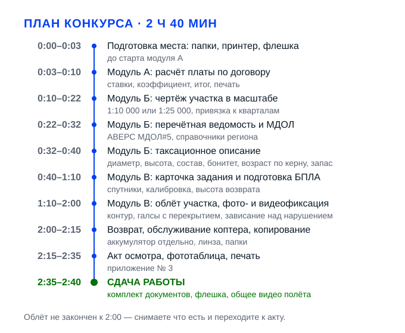
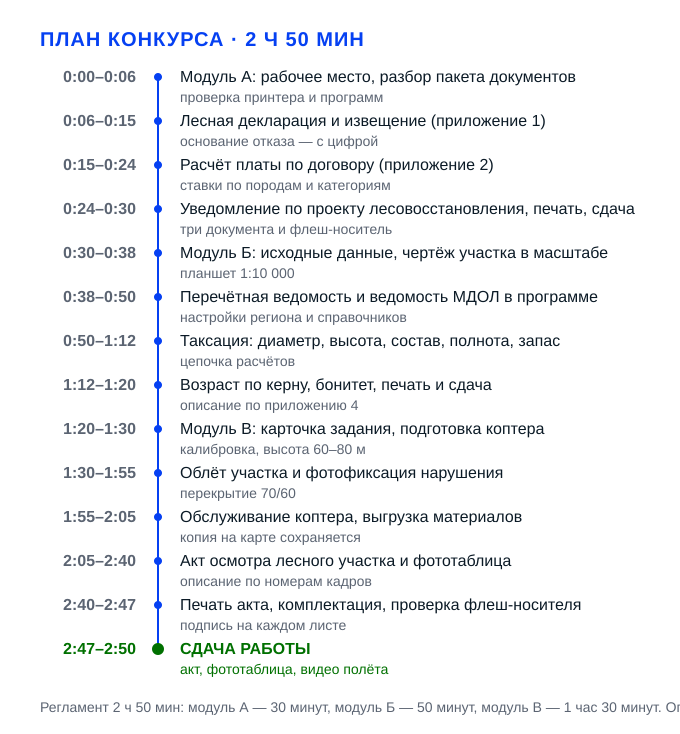
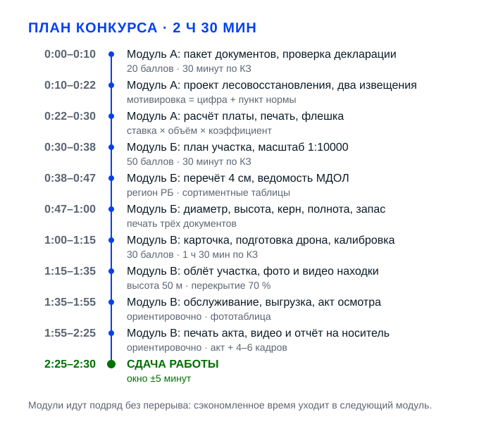

Инженерия лесопользования и лесовосстановления (Р)
Задания ниже — официальные файлы «Абилимпикс» (источник: abilympics-russia.ru), разложенные по категориям. Решения написаны по тексту задания, регламенту и критериям оценки; в них указано, что именно проверяет эксперт.
Школьник
14–16 лет, базовый уровень заданияВыдержка из официального конкурсного задания: страницы, относящиеся к категории «Школьник» (стр. 6–10 источника).
Пошаговое решение
Задание для школьников — три модуля, всего 2 часа 40 минут: модуль А — расчёт платы по договору купли-продажи насаждений для собственных нужд граждан, 10 минут; модуль Б — натурное обследование лесного участка, 30 минут; модуль В — мониторинг лесопользования с беспилотным летательным аппаратом, 2 часа. Логика идёт от бумаги к лесу и от леса к небу: сначала вы считаете деньги по нормативу, потом переносите промеры на планшет и превращаете перечёт в таксационное описание, а в конце ищете нарушение с воздуха и оформляете его актом с фототаблицей. Память не проверяют — разрешены справочники, лесотаксационные таблицы и программа АВЕРС МДОЛ#5, — проверяют совпадение результата с эталоном, оформление по форме приложения и то, успели ли вы напечатать документы и сохранить их на флешку. Дороже всего — не терять время на переделку: разложить инструменты заранее и сдавать работу комплектом.

Задача 1. Пройти модуль А — рассчитать плату по договору купли-продажи лесных насажденийМодуль А · 10 минут · результат — верный расчёт платы
Модуль А — самый короткий: десять минут на то, чтобы прочитать исходные данные, выбрать верные ставки платы, перемножить объёмы по породам и категориям древесины и получить сумму, совпадающую с эталоном. Результат модуля в задании сформулирован как правильно выполненный расчёт платы для собственных нужд граждан: оценивают итоговую цифру и оформление документа. Работа идёт в три действия: место и документы, расчётная таблица, оформление и сдача. Сначала выписываем все исходные данные и только потом считаем: пересчёт из-за неверной строки ставки в эти десять минут не поместится.
Действие 1.1. Подготовить рабочее место и разобрать исходные документы
Шаг 1.1.1
Садимся за рабочее место и до старта проверяем три вещи: компьютер вышел на рабочий стол без ошибок и лишних окон, принтер включён и в лотке лежит бумага А4, а флеш-носитель определяется системой и открывается в проводнике. Сразу создаём на диске папку с фамилией и датой, внутри — три подпапки: «Модуль А», «Модуль Б», «Модуль В». Рядом с клавиатурой кладём распечатанное задание, приложение № 2 с формой расчёта и чистый лист для черновика.
Модуль А идёт всего десять минут, и любая заминка с бумагой или неопознанной флешкой съедает их целиком. Результат модуля по конкурсному заданию — правильно выполненный расчёт платы по договору купли-продажи лесных насаждений, то есть оценивают готовый документ, а не ход рассуждений: если расчёт не удалось напечатать и сохранить, предъявлять эксперту нечего, каким бы верным он ни был на экране.
Проверка занимает полминуты: пробная печать страницы вышла чистой, без полос и обрезки полей, в проводнике видна буква флешки, папка участника создана и открывается. Если принтер стоит в очереди с чужим заданием, сразу зовём эксперта, а не ждём молча.
Самая частая ошибка — отложить проверку печати на конец и считать «пока на черновике»: за две минуты до сдачи выясняется, что лоток пуст, и расчёт остаётся на экране. Вторая — сохранять файл в корень флешки без папки: комплектность документов потом проверяют по папке участника, и разбросанные файлы читаются как небрежность.
Эксперт проходит по рабочим местам в первые минуты модуля и отмечает, готово ли место и создана ли папка участника с подпапками по модулям. Дальше он возвращается к этому же месту при сдаче документов, и наличие папки проверяется повторно.
Шаг 1.1.2
Открываем задание и приложение № 2 и читаем их не подряд, а с карандашом: ищем таблицу ставок платы за единицу объёма древесины, условия задачи (породы, объёмы, категории древесины — деловая и дровяная, расстояние вывозки) и нормативы отпуска для собственных нужд, которые даны в задании. Каждую найденную цифру обводим и подписываем на полях, откуда она взята: страница, таблица, строка. Всё, что не относится к нашей задаче, вычёркиваем, чтобы не тянуть в расчёт чужую строку.
Разбор документов — единственная часть модуля, где ошибка стоит всего расчёта: неверно выбранная строка ставки умножает все ваши объёмы на чужую цифру, а итог сверяют с эталоном, и промежуточные «почти правильно» не зачитываются. Подписанный источник каждой цифры нужен ещё и для себя: когда через пять минут эксперт спросит, откуда взялся разряд такс, ответ должен быть мгновенным.
Признак того, что разбор удался: на черновике выписаны породы, объёмы по категориям древесины и разряд такс, и напротив каждой цифры стоит ссылка на источник. Если напротив хотя бы одной цифры ссылки нет — значит, она пришла из памяти, и её надо перепроверить по документу.
Классическая ошибка — считать по ставкам, которые помнятся с занятий или взяты из интернета: ставки различаются по породам, разрядам такс и целям отпуска, и «похожая» строка даёт расхождение в разы. Вторая — читать задание по диагонали и не заметить указание, что расчёт ведётся для собственных нужд, а не для промышленной заготовки.
Эксперт подходит и смотрит на лист с исходными данными: есть ли пометки, выписаны ли породы и объёмы, видно ли, что участник работал с приложением, а не по памяти.
Шаг 1.1.3
Выписываем исходные данные в черновик таблицей: в строках — порода и категория древесины (деловая крупная, средняя, мелкая, дровяная), в столбцах — объём в кубометрах и место для ставки. Разряд такс определяем по расстоянию вывозки, указанному в задании: чем дальше вывозка, тем выше номер разряда и ниже ставка. Объёмы переписываем ровно так, как они стоят в задании, не округляя «для удобства» и не переставляя разряды.
Таблица на черновике — это страховка: по ней видно, все ли строки задания учтены, и её же потом переносят в форму приложения № 2 без повторного чтения условия. Разряд такс определяет, какую именно колонку ставок брать, и это вторая по частоте причина расхождения с эталоном после путаницы деловой и дровяной древесины.
Сверяем построчно: количество строк в черновике равно количеству позиций в задании, сумма объёмов по породам совпадает с общим объёмом лесосеки из условия. Разряд такс записан числом и подчёркнут, чтобы не искать его повторно при выборе ставки.
Типичная ошибка — оставить в черновике только те строки, где объём больше нуля, и потерять мелкие позиции: их немного, но они входят в итог, и сумма не сойдётся. Вторая — перепутать деловую и дровяную древесину одной породы: ставки у них разные, а внешне строки в таблице похожи.
Эксперт смотрит на аккуратность черновика и на то, совпадает ли число позиций с заданием; по этому видно, понял ли участник структуру расчёта. Отдельно он смотрит, выписан ли разряд такс: без него расчёт ставок не проверить.
Действие 1.2. Свести данные и выполнить расчёт платы
Шаг 1.2.1
Строим расчётную таблицу: четыре столбца — объём, ставка за кубометр, коэффициент, который задание предписывает применить для собственных нужд, и сумма по строке. Считаем в электронной таблице, а не на калькуляторе: формулы протягиваются на все строки сразу, и любая правка объёма пересчитывает итог автоматически. Если работаем в текстовом редакторе, таблицу делаем вставкой и всё равно дублируем арифметику в отдельном столбце для проверки.
Расчёт в таблице с отдельной формулой на каждую строку даёт то, чего не даёт счёт в столбик: видно, из чего сложился итог, и ошибка в одной позиции не тянет за собой все остальные. Кроме того, при проверке экспертом расчёт с показанными ставками и коэффициентами читается как документ, а не как конечная цифра из ниоткуда.
В таблице заполнены все строки черновика, ни одной пустой ячейки в столбце ставки. Сумма по столбцу объёмов совпадает с общим объёмом из задания. Если какая-то строка осталась без ставки — значит, забыли позицию, и её надо найти в таблице ставок.
Ошибка — считать «в столбик» на калькуляторе и записывать только итог: при первой же проверке невозможно понять, где разошлось, и приходится пересчитывать всё заново, а времени на это уже нет. Вторая — оставить пустую строку и мысленно считать её нулём.
Эксперт смотрит на структуру таблицы: видны ли ставки, коэффициенты и промежуточные суммы, читается ли расчёт без пояснений. Если таблица сделана в электронном виде, он смотрит и на формулы: видно ли, какие ячейки перемножаются.
Шаг 1.2.2
Для каждой строки находим ставку в таблице приложения: сначала по породе, затем по разряду такс, затем по категории древесины. Ставку вписываем в таблицу цифрами полностью, вместе с копейками, и рядом карандашом помечаем, из какой колонки она взята. Коэффициент для собственных нужд берём ровно тот, который указан в задании, и записываем его отдельным столбцом, а не «зашиваем» в ставку.
Раздельные столбцы ставки и коэффициента нужны потому, что проверяют именно эти два множителя: если итог не сойдётся, эксперт смотрит, где расхождение — в ставке или в коэффициенте. Когда коэффициент спрятан внутри ставки, ошибку невозможно объяснить, и модуль читается как неверный целиком.
Проверяем каждую строку обратным чтением: порода в таблице ставок та же, что в задании; номер разряда такс тот же; категория древесины та же. Ставка для дровяной древесины должна быть заметно ниже деловой той же породы — если они почти равны, взята не та колонка.
Самая коварная ошибка — взять ставку из соседнего разряда такс: цифры различаются на проценты, на глаз это не видно, а итог уезжает от эталона и весь расчёт приходится переделывать. Вторая — применить не тот коэффициент, например общий, а не льготный для собственных нужд.
Эксперт при проверке сверяет две-три ставки выборочно: если они взяты верно, у остальных строк доверие выше. Он также может назвать любую строку и попросить показать её ставку в приложении — это проверка на месте.
Шаг 1.2.3
Перемножаем объём на ставку и на коэффициент, промежуточные значения держим с двумя знаками после запятой, а итог складываем по всем строкам и округляем так, как требует задание. Итог записываем цифрой и рядом — прописью, чтобы исключить разночтение при печати. Отдельной строкой выводим общий объём древесины, потому что его тоже сверяют с условием.
Правило округления — не формальность: если округлять каждую строку до рубля, а потом складывать, итог разойдётся с эталоном на несколько рублей, и расчёт признают неверным при безупречной арифметике. Округление только в самом конце — единственный способ получить сумму, которая совпадёт с контрольной.
Итог проверяем двумя способами: делим его на общий объём и смотрим, попадает ли получившаяся средняя ставка в диапазон ставок задания, и пересчитываем одну строку вручную на калькуляторе. Оба результата совпали — расчёт можно оформлять.
Ошибка — округлить каждую строку и сложить округлённые: расхождение с эталоном гарантировано. Вторая, ещё более обидная — потерять множитель у одной строки: в таблице она выглядит нормально, а итог занижен, и на поиск уходит остаток модуля.
Эксперт смотрит на итоговую цифру: совпадает ли она с эталоном до копейки, и есть ли рядом расшифровка, откуда она сложилась. При расхождении он просит показать правило округления в задании, и ссылка на пункт снимает вопрос.
Действие 1.3. Оформить расчётный документ, напечатать и сдать
Шаг 1.3.1
Переносим таблицу в форму приложения № 2: заполняем шапку — наименование лесничества, фамилия и инициалы заявителя, дата, номер задания, — затем вставляем расчётные строки в том же порядке, что в форме, и итог. Ничего не меняем в структуре формы: заголовки столбцов и их последовательность оставляем заводскими, добавлять свои столбцы нельзя. Печатать форму лучше сразу после заполнения, пока не началась следующая задача: так видно, что все графы на месте.
Форма приложения — это то, что эксперт держит в руках рядом с эталоном, и сравнивает он не только цифры, но и заполненность обязательных полей. Пустая дата или отсутствие фамилии читаются как незавершённый документ, даже если сумма верна, а исправлять это за минуту до сдачи уже некогда.
Проверяем по списку: шапка заполнена полностью, все строки расчёта на месте, итог выведен цифрой и прописью, единицы измерения подписаны. В документе нет пустых прочерков там, где должно быть число, и нет чисел там, где по форме нужен прочерк.
Частая ошибка — оформить расчёт «своей» таблицей, потому что в форму не влезает широкая строка: такой документ читается как не соответствующий приложению. Вторая — оставить шапку на потом и забыть про неё, когда время ушло на арифметику.
Эксперт оценивает именно этот документ, поэтому смотрит на соответствие формы, а не на красоту вёрстки. Столбцы, добавленные «от себя», он отмечает как отклонение от формы, даже если они удобнее.
Шаг 1.3.2
Делаем контрольный проход по готовому документу: сверяем число строк с черновиком, проверяем, что в каждой строке перемножены именно те три числа, которые выписаны рядом, и что итог равен сумме строк. Отдельно проверяем единицы: объёмы — в плотных кубометрах, ставки — за плотный кубометр, коэффициенты — безразмерные; смешение плотных и складочных единиц даёт ошибку в полтора раза.
Контрольный проход занимает минуту и ловит те ошибки, которые не видны при наборе: сдвинутую строку, потерянный множитель, перепутанные единицы. Именно на этом проходе обычно и выясняется, что расчёт сходится, — и тогда оставшееся время уходит на печать и сохранение, а не на панику.
Три признака готовности: число строк совпадает, итог равен сумме строк при повторном сложении, единицы измерения одинаковы по всему документу. Если хотя бы один признак не выполняется, правим до печати, а не после.
Ошибка — проверять только итог, не глядя на строки: итог может сойтись случайно или наоборот разойтись из-за одной позиции, которую так и не найдут. Вторая — печатать сразу, а потом искать ошибку на бумаге и вносить рукописные правки.
Эксперт видит результат контрольного прохода по отсутствию рукописных исправлений в напечатанном документе. Наличие рукописных правок в напечатанном документе он тоже отмечает: это признак того, что проверка шла уже на бумаге.
Шаг 1.3.3
Печатаем расчёт в одном экземпляре, проверяем, что таблица не обрезана по правому краю и итог виден полностью. Сохраняем файл в папку «Модуль А» на диске и копируем эту папку на флеш-носитель, после чего обязательно открываем файл с флешки и убеждаемся, что он читается. Напечатанный лист и флешку передаём эксперту, а рабочее место приводим в порядок: черновики убираем, клавиатуру и мышь оставляем на месте.
Конкурсное задание требует и вывода документов на печать, и сохранения папки с базой документов на флеш-носителе, и передачи того и другого экспертам — это три отдельных действия, каждое из которых проверяется. Копия, которая не открывается с флешки, равна отсутствующей копии, поэтому проверка чтения обязательна.
Признаки сдачи: лист напечатан и читается целиком, на флешке в папке участника лежит файл расчёта, файл открывается с флешки, эксперт принял документ и носитель. Время сдачи записано, чтобы вы сами знали, сколько осталось до модуля Б.
Ошибка — сохранить файл только на рабочем столе: при сдаче эксперту нечего взять с собой, и модуль остаётся без подтверждения. Вторая — отдать флешку, не проверив, что копирование завершилось: на носителе оказывается нулевой файл.
Эксперт принимает документ и носитель и сразу отмечает время сдачи модуля А; опоздание здесь бьёт по всему таймингу конкурса. Время сдачи он записывает в протокол, и по нему видно, уложился ли участник в десять минут модуля.
Задача 2. Построить чертёж (план) лесного участка в масштабе планшетаМодуль Б · первая часть · из 30 минут
Чертёж — фундамент модуля Б: если контур построен неверно или масштаб не тот, разъедутся площадь, запас и ведомость МДОЛ, потому что считаются они по контуру и площади. По заданию требуется составить чертёж (план) участка в масштабе лесоустроительного планшета или плана лесонасаждений, то есть 1:10 000 либо 1:25 000, по предоставленным данным, в программе. Работа идёт в три действия: разобрать промеры и выбрать масштаб, построить контур с внутренней ситуацией, оформить и напечатать лист. На чертёж отводим не больше половины модуля: ведомости и таксацию без плана всё равно не сделать.
Действие 2.1. Разобрать промеры и выбрать масштаб
Шаг 2.1.1
Берём ведомость исходных данных и читаем её как маршрут обхода: в ней указаны номера точек, длины линий и направления — румбы или азимуты, — а также привязка участка к квартальной сети. Выписываем на черновик последовательность точек в порядке обхода: 1–2, 2–3, 3–4 и так до замыкания. Если направление дано румбом, сразу переводим его в азимут, чтобы дальше работать с одной системой углов.
Промеры — единственный источник геометрии участка, и их порядок задаёт порядок построения. Если начать строить «по памяти о том, как выглядит лесосека», контур получится правдоподобным, но неверным по площади, а площадь в этом модуле входит в расчёт запаса и в ведомость МДОЛ, то есть ошибка тиражируется дважды.
Проверяем себя арифметикой обхода: сумма длин по замкнутому контуру и число точек совпадают с ведомостью, углы между соседними линиями дают в сумме ту величину, которая положена замкнутому многоугольнику. Если после обхода не вернулись в первую точку — в промерах или в вашей записи есть ошибка.
Ошибка — строить по румбам, не переведя их в азимуты программы: направления разворачиваются зеркально, и контур выходит перевёрнутым. Вторая — потерять одну точку при переписывании: тогда замыкающая линия уходит в сторону и площадь получается меньше реальной.
Эксперт смотрит на черновик с выписанными точками: если обход выписан по порядку, дальнейшие ошибки в построении маловероятны. Если обход выписан с номерами точек, ему достаточно сверить две-три строки ведомости.
Шаг 2.1.2
Выбираем масштаб из двух допустимых по заданию: 1:10 000, если чертим лесоустроительный планшет, или 1:25 000, если план лесонасаждений. Дальше считаем грубую прикидку: делим наибольшую длину участка на знаменатель масштаба и смотрим, помещается ли контур в лист с полями под зарамочное оформление. Для участка длиной, скажем, 1,2 километра при 1:10 000 это 12 сантиметров — влезает с запасом, при 1:25 000 было бы 4,8 сантиметра.
Масштаб — это не удобство, а требование: в конкурсном задании прямо сказано, что план составляется в масштабе лесоустроительного планшета или плана лесонасаждений, и произвольный масштаб означает, что документ не соответствует норме. От масштаба зависит и точность: на 1:25 000 миллиметр на бумаге — это 25 метров в лесу, и мелкие детали границы на таком листе просто исчезают.
Выбранный масштаб записан в углу черновика и указан в штампе листа. Контур вместе с подписями помещается на лист, свободные поля остаются не меньше двух сантиметров с каждой стороны. Проверьте масштабной линейкой: отрезок в 10 сантиметров на листе должен соответствовать 100 метрам при 1:10 000.
Типичная ошибка — выбрать масштаб «чтобы покрупнее» и получить контур, который обрезан краем листа. Вторая — наоборот, взять мелкий масштаб и потом не суметь показать внутреннюю ситуацию участка, потому что для неё не остаётся места.
Эксперт проверяет масштаб по штампу и по масштабной линейке, а не на глаз: это первое, что видно на листе. Он также смотрит, указан ли масштаб и числом, и линейкой: по одному числу нельзя проверить печать.
Шаг 2.1.3
Настраиваем программу под выбранный масштаб: выставляем единицы измерения в метрах, включаем сетку с шагом, кратным масштабу, задаём слой для границ участка и отдельный слой для подписей и ситуации. Проверяем, что привязка объектов включена и координаты видны в строке состояния, — тогда любую точку можно проверить числом, а не глазом. Первый отрезок строим контрольный, а не рабочий: по нему сразу видно, верны ли настройки.
Слои и привязка нужны для скорости: когда границы, подписи и внутренняя ситуация лежат в разных слоях, ошибку видно сразу и её можно исправить, не разбирая весь чертёж. Ручное «примерное» рисование без привязки даёт линии, которые не сходятся в узлах, и площадь потом считается с погрешностью.
Программа готова к работе, если сетка на экране совпадает с масштабом, координаты курсора отображаются, и первый же пробный отрезок заданной длины строится точно — проверьте на отрезке в 100 метров при 1:10 000, он должен быть 10 миллиметров.
Ошибка — рисовать в единицах экрана, а не в метрах: тогда масштабная линейка не работает, и пересчёт приходится делать вручную, теряя время. Вторая — оставить включённым крупный шаг сетки и «прилипать» к нему, сдвигая точки на десятки метров.
Эксперт смотрит на то, как участник держит масштаб: строит ли он в метрах и проверяет ли себя линейкой. Ему важно увидеть, что участник строит в метрах и проверяет первый отрезок, а не подгоняет картинку под лист.
Действие 2.2. Построить контур участка и внутреннюю ситуацию
Шаг 2.2.1
Строим контур по выписанным точкам: ставим первую точку в удобном месте листа, от неё откладываем первую линию по азимуту и длине, затем следующую и так по всему обходу. Линии строим как единую замкнутую полилинию, а не набором отдельных отрезков, чтобы программа считала площадь именно многоугольника. Последнюю точку замыкаем на первую и смотрим, насколько разошлись координаты.
Замкнутая полилиния — это не только аккуратность: площадь участка, которая пойдёт в ведомость и в таксационное описание, программа берёт из замкнутого контура. Разрыв в контуре даёт нулевую или ошибочную площадь, и тогда весь расчёт запаса теряет основание.
Невязка замыкания должна быть в пределах точности построения — доли миллиметра на листе. Если она больше, ищите ошибку в промерах: чаще всего это перепутанный азимут или потерянная цифра. Площадь, посчитанная программой, сверяется с площадью из задания — расхождение допустимо только в пределах округления.
Ошибка — строить контур отрезками и потом «сшивать»: в местах стыков остаются двойные линии, программа не видит фигуру целиком. Вторая — не замкнуть контур и получить площадь, которая не имеет отношения к участку.
Эксперт проверяет контур на совпадение с эталонной конфигурацией: форма и углы должны читаться так же, как в задании. Он смотрит и на площадь, которую программа посчитала: она должна быть близка к площади из задания.
Шаг 2.2.2
Наносим внутреннюю ситуацию: квартальную сетку с номерами кварталов, границы выдела внутри участка, дороги, ручьи, линии электропередачи, если они есть в исходных данных. Каждый объект — своим условным знаком: дорога двумя линиями, ручей одной волнистой, граница выдела пунктиром. Подписи ставим вдоль линий, не разрывая их, и не ближе двух миллиметров от других подписей.
Внутренняя ситуация показывает, что участок не висит в пустоте: по ней эксперт понимает, привязан ли план к местности, а по номерам кварталов проверяется, тот ли участок обследован. Без привязки к квартальной сети чертёж нельзя сопоставить с материалами лесоустройства, а именно это и требуется по заданию.
Проверяем по списку исходных данных: все объекты, которые в них упомянуты, есть на чертеже; номера кварталов подписаны и совпадают с ведомостью; границы выдела не выходят за контур участка. Подписи читаются при увеличении до 100 процентов, то есть на печати они будут различимы.
Ошибка — нарисовать дороги и ручьи «для красоты» в произвольных местах: тогда привязка теряет смысл, и эксперт видит, что участок не локализован. Вторая — сделать подписи слишком мелким кеглем: на печати они сливаются в полосы.
Эксперт сверяет наличие и положение объектов с описанием участка в задании, особенно границы выдела — она влияет на площадь. Особенно внимательно он смотрит на границу выдела: от неё зависит площадь и, значит, весь расчёт запаса.
Шаг 2.2.3
Проверяем геометрию повторным промером по готовому чертежу: берём две-три линии, измеряем их на листе масштабной линейкой и переводим в метры. Отдельно проверяем углы между соседними сторонами транспортиром — они должны совпадать с разностью азимутов из ведомости. Если расхождение больше половины миллиметра, точку переносим, а не «подправляем» соседнюю.
Повторный промер по чертежу — единственный способ поймать ошибку построения, пока она не ушла в расчёты. Программа считает площадь по тому, что нарисовано, и если линия построена не по тому азимуту, площадь будет правдоподобной, но неверной — и разойдётся с эталоном.
Три линии, проверенные линейкой, дают совпадение с ведомостью в пределах погрешности масштаба; площадь по программе отличается от площади в задании не более чем на единицы процентов. Если разница больше — контур перестраивают целиком, а не правят по местам.
Частая ошибка — «доверять программе» и не проверять: она посчитает площадь любого, даже неправильно нарисованного контура, и цифра будет выглядеть убедительно. Вторая — править одну точку, не проверяя соседние линии.
Эксперт может попросить показать, как проверялась геометрия; наличие промеров на полях черновика здесь работает в плюс. Если промеров на полях нет, он может попросить измерить любую линию при нём.
Действие 2.3. Оформить лист и сдать чертёж
Шаг 2.3.1
Оформляем зарамочную часть: сверху — название документа и номер задания, снизу — численный и линейный масштаб, фамилия участника, дата, номер варианта. В правом верхнем углу ставим стрелку «север—юг», ориентированную по квартальной сети, а не по краю листа. Рамку проводим по границам области печати, чтобы при выводе на бумагу ничего не обрезалось. Рамку и штамп делаем до печати, а не после: на бумаге их уже не поправить.
Зарамочное оформление — то, по чему лист опознаётся: без масштаба и фамилии чертёж невозможно ни оценить, ни приложить к акту. Стрелка севера показывает, что план ориентирован, а не повёрнут произвольно, и это напрямую связано с привязкой к квартальной сети.
Проверяем, что все элементы штампа на месте и не наезжают на контур; масштаб указан и числом, и линейкой; дата совпадает с датой конкурса. Лист, напечатанный в режиме предварительного просмотра, не обрезан ни справа, ни снизу.
Ошибка — оставить штамп на потом и напечатать лист без масштаба: такой документ не принимается как план участка. Вторая — поставить стрелку севера «примерно вверх»: при повороте участка на 30–40 градусов привязка к кварталам теряется.
Эксперт первым делом смотрит на штамп: масштаб, фамилия, дата — три поля, по которым лист вообще считается документом. Отсутствие стрелки севера он читает как то, что план не ориентирован.
Шаг 2.3.2
Подписываем площадь участка и площади выделов, если они даны в исходных данных; ставим номера точек обхода мелким шрифтом у вершин, чтобы чертёж можно было сверить с ведомостью промеров. В свободном углу размещаем условные обозначения: граница участка, граница выдела, дорога, ручей, — по одному знаку на строку с пояснением. Подписи делаем одним кеглем, чтобы лист читался ровно и без провалов в масштабе.
Условные обозначения и номера точек превращают чертёж в проверяемый документ: эксперт может пройти по точкам и убедиться, что контур построен по данным, а не нарисован. Площадь в штампе нужна и для сверки с ведомостью МДОЛ, где она участвует в расчёте.
Проверяем: площадь на чертеже совпадает с площадью, которую посчитала программа, и с площадью из задания; номера точек идут по порядку без пропусков; каждый знак в условных обозначениях встречается на чертеже хотя бы один раз.
Ошибка — подписать площадь «округлённо» и потерять десятые доли гектара: при сверке с ведомостью это даёт расхождение, которое эксперт зачтёт как ошибку определения площади. Вторая — условные обозначения без пояснений, которые читаются только автором.
Эксперт сверяет подпись площади на чертеже с площадью в ведомости МДОЛ — это одна из немногих сквозных проверок между документами модуля. Расхождение площади с ведомостью МДОЛ он проверяет как сквозную ошибку модуля.
Шаг 2.3.3
Сохраняем чертёж в папку «Модуль Б» под именем, в котором есть фамилия и слово «план», и печатаем в одном экземпляре. Перед печатью открываем предварительный просмотр и проверяем, что весь лист попадает на А4, а линии не тоньше 0,2 миллиметра. Напечатанный лист кладём к остальным документам модуля, чтобы сдавать их одним комплектом. Имя файла пишем латиницей, чтобы оно открывалось на любом компьютере без перекодировки.
Чертёж печатается и сдаётся вместе с перечётной ведомостью, ведомостью МДОЛ и таксационным описанием: комплект документов модуля Б — это четыре листа, и порядок в комплекте экономит время на сдаче. Тонкие линии на печати пропадают, и контур выглядит разорванным, хотя в файле всё цело.
Признаки готовности: лист напечатан целиком, контур непрерывен, подписи читаются, файл лежит в папке «Модуль Б» и открывается с флешки. Комплект документов сложен в том порядке, в котором перечислены результаты модуля в задании.
Ошибка — печатать с настройками «по размеру страницы», когда программа вписывает лист с уменьшением: масштаб на бумаге перестаёт соответствовать подписанному. Вторая — оставить чертёж в формате, который не открывается на другом компьютере.
Эксперт принимает комплект целиком и отмечает, все ли четыре документа модуля присутствуют; отсутствие чертежа обнуляет часть критериев модуля. Отсутствие любого из четырёх документов он фиксирует отдельной строкой.
Задача 3. Составить перечётную ведомость, ведомость МДОЛ и таксационное описаниеМодуль Б · вторая часть · 30 минут модуля
Вторая половина модуля Б превращает полевые цифры в документы: перечётная ведомость раскладывает стволы по ступеням толщины и породам, программа АВЕРС МДОЛ#5 считает материально-денежную оценку лесосеки, а таксационное описание сводит всё в шесть характеристик — диаметр, высоту, состав, бонитет, возраст, полноту с запасом. Задание перечисляет именно этот результат, и проверяется он построчно: каждая цифра описания вытекает из ведомости, а ведомость — из перечёта. Неверный диаметр тянет разряд высот, за ним разъезжается запас, и МДОЛ считается по чужой древесине.
Действие 3.1. Составить перечётную ведомость по данным перечёта
Шаг 3.1.1
Раскладываем данные перечёта по ступеням толщины: 8, 12, 16, 20, 24, 28, 32, 36 и 40 сантиметров, отдельно по каждой породе. Считаем число стволов в каждой клетке и сразу записываем в черновик таблицы, где строки — ступени толщины, столбцы — породы. Внизу подводим итог по столбцу и по строке, чтобы видеть оба среза: сколько всего деревьев породы и сколько всего деревьев ступени.
Ступени толщины — язык, на котором перечёт разговаривает с лесотаксационными таблицами: без разложенных по ступеням стволов программа не посчитает ни площади сечений, ни средний диаметр, ни выход сортиментов. Пересчёт вручную, до ввода в программу, нужен как контроль: он ловит потерянные и задвоенные деревья, пока они ещё не превратились в неверный запас.
Сумма всех клеток совпадает с общим числом стволов из задания, суммы по строкам и по столбцам дают одну и ту же величину. Если не сходится хотя бы на одно дерево, ищите ошибку в перечёте, а не списывайте расхождение на «округление».
Ошибка — вписать ствол ступени 24 в ступень 20: разница в четыре сантиметра кажется мелочью, но она смещает средний диаметр, а с ним и разряд высот. Вторая — считать итог «примерно» и не заметить, что два дерева потеряны при переносе.
Эксперт сверяет итоговое число стволов в ведомости с данными перечёта в задании — это первая сквозная проверка модуля Б. Он также смотрит, разложены ли стволы по породам, а не собраны в один столбец.
Шаг 3.1.2
Открываем программу расчёта МДОЛ и первым делом проверяем настройки: регион должен быть тот, в котором находится образовательная организация, а не предложенный по умолчанию. Затем заводим лесосеку: породы, разряд высот, площадь, и вводим число стволов по ступеням толщины. После ввода каждой породы сохраняем запись, а не набираем всё подряд, чтобы при сбое не потерять работу.
Настройки региона определяют, какие сортиментные и товарные таблицы применит программа, и это прямо оговорено в особых указаниях задания. Если регион стоит чужой, объёмный выход сортиментов считается по таблицам другой лесорастительной зоны, и ведомость МДОЛ расходится с эталоном при формально верных исходных данных.
Проверяем на экране: регион в настройках совпадает с регионом задания, сумма стволов по всем ступеням равна итогу из черновика, площадь лесосеки внесена в гектарах. Программа не выдаёт предупреждений о незаполненных обязательных полях.
Самая частая ошибка — оставить регион по умолчанию и не заметить этого: таблицы подставляются молча, без предупреждения, и ошибка выясняется только при сверке итогов. Вторая — вводить ступени без разряда высот, из-за чего программа не может подобрать объёмы стволов.
Эксперт при проверке открывает настройки первым делом: неверный регион обесценивает всю ведомость, даже если она аккуратно заполнена. Он также смотрит на разряд высот: без него программа не подберёт объёмы стволов.
Шаг 3.1.3
Сверяем итоги в программе с черновиком: число стволов по каждой ступени и по каждой породе, суммарное число стволов, площадь. Прогоняем ведомость на печать в режиме предварительного просмотра и проверяем, что все ступени и породы попали в таблицу, а не обрезались на границе страницы. Сохраняем файл ведомости в папку «Модуль Б». Перед печатью проверяем, что в таблице нет пустых последних столбцов.
Сверка с черновиком — единственный барьер между ошибкой ввода и неверной МДОЛ: программа посчитает всё, что ей дали, и не станет проверять, те ли это цифры. Обрезанная на печати таблица выглядит как неполная ведомость, и часть критериев модуля снимается за оформление.
Все числа совпали, таблица целиком помещается на лист, файл сохранён и открывается. Если какая-то ступень пустая, а в перечёте деревья этой толщины были, значит, она потерялась при вводе. Ступени идут по возрастанию без пропусков.
Ошибка — вводить ступени «по возрастанию на глаз» и пропустить одну: программа воспримет это как отсутствие деревьев такой толщины. Вторая — печатать ведомость, не проверив разбивку по страницам, и получить лист, где нет последних ступеней.
Эксперт смотрит на ведомость как на первичный документ: по ней он проверяет, можно ли доверять остальным расчётам модуля. Он сверяет последнюю ступень толщины: если таблица обрезана, её просто нет на листе.
Действие 3.2. Рассчитать ведомость МДОЛ в программе
Шаг 3.2.1
Проверяем, что в программе подключены справочники сортиментных и товарных таблиц для нужного региона: они задают, на какие сортименты распиливается ствол каждой породы и какой выход деловой древесины получается при данной толщине. Если справочник не выбран или выбран чужой, программа подставит таблицы по умолчанию. Открываем список таблиц и глазами убеждаемся, что в нём стоит наша зона.
Сортиментные таблицы — это ядро материально-денежной оценки: именно они решают, сколько из общего запаса выйдет пиловочника, сколько балансов, а сколько уйдёт в дровяную древесину и отходы. Задание прямо требует использовать программу с настройками региона и справочниками сортиментных и товарных таблиц в соответствии с местоположением образовательной организации.
Признак готовности: в списке справочников активна таблица нужной породы и зоны, а в расчёте появляются строки сортиментов, а не одна общая строка «древесина». Если сортименты не разбиваются, значит, таблица не подключена.
Ошибка — работать с пустым справочником и получить весь запас как дрова: цифра выглядит правдоподобно, но она неверна в разы. Вторая — подключить таблицу соседней зоны, потому что название похоже: сортиментный состав в разных зонах различается.
Эксперт проверяет именно подключение справочников: без них ведомость МДОЛ формально существует, но не соответствует требованиям задания. Он проверяет и то, что справочник выбран для нужной породы, а не только для региона.
Шаг 3.2.2
Запускаем расчёт и смотрим на распределение: деловая древесина с разбивкой по крупности, дровяная, отходы. Сверяем каждую строку с ожиданием по породе: у хвойных при крупных ступенях толщины выход деловой выше, у мелкотоварной древесины растёт доля дровяной. Если в расчёте появились сортименты, которых у этой породы быть не может, — проверяем настройки ещё раз.
Материально-денежная оценка нужна не сама по себе: по ней видно, сколько денег стоит древесина на корню и как распределились сортименты, а это основание для договора купли-продажи. Логическая проверка распределения ловит ошибки настройки, которые не видны в итоговой сумме.
Сумма объёмов по сортиментам равна общему запасу лесосеки; доля деловой древесины попадает в диапазон, обычный для этой породы и возраста. Запас на гектаре, полученный делением общего объёма на площадь, выглядит реалистично для насаждения такой полноты.
Ошибка — не заметить, что весь объём ушёл в одну строку: это признак того, что таблицы не применились. Вторая — механически принять цифру программы, не сравнив запас на гектаре со здравым смыслом. Третья — оставить в расчёте лишнюю породу из прошлой задачи.
Эксперт смотрит на распределение по сортиментам и на запас на гектаре: именно здесь видно, разобрался ли участник в программе. Он также оценивает, объясняет ли участник разницу между деловой и дровяной древесиной.
Шаг 3.2.3
Сверяем ведомость МДОЛ с перечётной ведомостью по трём точкам: число стволов, общий запас, площадь. Проверяем, что породы в обеих ведомостях названы одинаково и в одном порядке, а единицы измерения совпадают: кубометры плотные, гектары, штуки. Сохраняем ведомость отдельным файлом с понятным именем и печатаем в предварительном просмотре. Сверку ведём по распечатке, а не по экрану: на бумаге видны обе ведомости сразу.
Две ведомости — это две проекции одних и тех же данных, и они обязаны сходиться: если перечёт говорит о 214 стволах, а МДОЛ о 240, значит, где-то потерялась или задвоилась порода. Именно на такой сверке ловятся ошибки, которые невозможно увидеть внутри одной таблицы.
Три точки сверки совпали, единицы измерения одинаковы, файл сохранён и открывается с флешки. Комплект документов модуля Б сложен по порядку: план, перечётная ведомость, ведомость МДОЛ, таксационное описание.
Ошибка — сохранять ведомость под именем «документ1»: при сдаче эксперт не может быстро понять, что это МДОЛ. Вторая — не сверить число стволов и отдать комплект, в котором две ведомости противоречат друг другу.
Эксперт сравнивает ведомости между собой; расхождение в числе стволов он трактует как ошибку расчёта, а не как описку. Если ведомости расходятся, он просит показать, где именно потерялась порода, и по этому судит о понимании.
Действие 3.3. Определить средний диаметр, высоту и состав насаждения
Шаг 3.3.1
Средний диаметр считаем не «на глаз по самой частой ступени», а взвешенно: умножаем число стволов каждой ступени на её диаметр, складываем произведения и делим на общее число стволов. Более точный результат даёт расчёт через площади сечений: для каждой ступени площадь сечения одного ствола умножают на число стволов, суммируют и по сумме находят диаметр, соответствующий средней площади сечения.
Средний диаметр — входной параметр для всего остального: по нему выбирают разряд высот, по нему определяют среднюю высоту, а через них считается запас. Ошибка в диаметре на два сантиметра сдвигает разряд высот и меняет запас на проценты, то есть уводит от эталона сразу несколько строк таксационного описания.
Проверяем результат двумя способами: средний диаметр попадает в интервал между минимальной и максимальной ступенями и лежит ближе к той ступени, где больше стволов. Расчёт через площади сечений даёт значение на один-два миллиметра отличающееся от взвешенного — это нормально, разницы в сантиметрах быть не должно.
Ошибка — взять середину диапазона ступеней «на глаз»: при перекошенном перечёте, когда много тонких деревьев, это завышает диаметр. Вторая — забыть, что диаметр в перечёте дан в сантиметрах, а в формулы площади сечения подставляется в метрах.
Эксперт пересчитывает средний диаметр по ведомости и сверяет с вашим значением; расхождение более одного сантиметра он считает ошибкой определения. При этом он смотрит на записанный интервал ступеней: по нему видно, как считался диаметр.
Шаг 3.3.2
Среднюю высоту определяем по лесотаксационной таблице: находим разряд высот по породе и среднему диаметру, затем по ступени, ближайшей к среднему диаметру, берём высоту. Если в данных перечёта есть замеренные высоты у нескольких деревьев, сначала проверяем ими таблицу: они должны попадать в ту же строку, иначе разряд высот выбран неверно и его надо поднять или опустить на один.
Высота вместе с возрастом даёт класс бонитета, а вместе с площадью сечения — полноту и запас, поэтому она стоит в цепочке расчётов выше диаметра по влиянию. Разряд высот — это характеристика насаждения, а не отдельного дерева, поэтому проверять его по одному замеру нельзя.
Средняя высота согласуется со средним диаметром по таблице, высоты замеренных деревьев лежат вокруг полученного значения, а не все выше или все ниже. Значение записано в метрах с точностью до десятых.
Ошибка — взять высоту по самому высокому замеренному дереву: это высота господствующего яруса, а не средняя, и запас завышается. Вторая — перепутать разряды высот и взять строку соседнего разряда. Третья — записать высоту без десятых, потеряв точность.
Эксперт сверяет высоту с таблицей по вашему же среднему диаметру — это проверяется за десять секунд и показывает, владеет ли участник таблицами. Если замеренные высоты есть в задании, он сверяет и их.
Шаг 3.3.3
Состав определяем по запасу, а не по числу стволов: берём запас каждой породы, делим на общий запас, умножаем на десять и округляем до целых единиц так, чтобы сумма равнялась десяти. Главную породу ставим первой, остальные — по убыванию доли. Запись ведём в привычном виде, например 6С3Б1Ос, где цифра — доля породы в десятых, а буква — сокращённое название.
Состав — это то, по чему определяют главную породу, а значит, и то, по какой породе считают возраст, бонитет и полноту. Если главная порода определена по числу стволов, а не по запасу, состав получается другим: тонкой берёзы может быть больше по штукам, но по объёму её меньше, чем сосны.
Сумма коэффициентов в формуле состава равна десяти, главная порода стоит первой и её доля больше остальных, породы записаны в том же порядке, что в ведомостях. Проверьте обратным счётом: доля главной породы, умноженная на общий запас, даёт запас этой породы из ведомости.
Ошибка — округлять доли «как получилось» и получить сумму 9,8 или 10,4: такой состав читается как арифметическая небрежность. Вторая — поставить первой породу, которая преобладает по числу стволов, но не по запасу.
Эксперт смотрит на состав как на итог: он должен быть выведен из ведомости, а не написан «похоже на правду». Отдельно он смотрит, названа ли главная порода: от неё зависят возраст, бонитет и полнота.
Действие 3.4. Определить бонитет, возраст по керну, полноту и запас
Шаг 3.4.1
Класс бонитета определяем по таблице Орлова: по возрасту главной породы и её средней высоте находим клетку на пересечении и читаем класс — от Iа и I до V. Если значения попадают между строками, берём тот класс, к которому высота ближе, и записываем его римскими цифрами. Бонитет характеризует условия произрастания, поэтому его определяют только для главной породы.
Бонитет входит в обязательный перечень характеристик насаждения из конкурсного задания, и он же служит проверкой правдоподобия: для сосняка в благоприятных условиях класс I–II, для заболоченного участка IV–V. Если получился бонитет, не соответствующий описанию участка, скорее всего ошибка в высоте или возрасте.
Класс бонитета согласуется с высотой и возрастом по таблице, записан римской цифрой и не противоречит типу условий произрастания, указанному в задании. Проверьте на соседней строке таблицы: при изменении высоты на два метра класс должен сдвигаться не больше чем на один.
Ошибка — определить бонитет по средней высоте без учёта возраста: одно и то же насаждение в 40 и в 80 лет попадает в разные классы. Вторая — взять бонитет по самой высокой породе, если главная другая.
Эксперт проверяет бонитет по таблице тем же путём, что и участник, поэтому важно, чтобы возраст и высота были записаны рядом с классом. Он также сверяет класс с описанием условий произрастания участка.
Шаг 3.4.2
Возраст главной породы определяем по керну, который выдаётся участнику: керн берут буравом на высоте 1,3 метра, поэтому на нём нет первых лет, пока дерево дорастало до этой высоты. Считаем годичные кольца от сердцевины к коре, отмечая каждые десять лет карандашом на бумаге, затем прибавляем поправку на дорастание — обычно от пяти до десяти лет, в зависимости от породы и условий. Полученный возраст округляем до пяти лет и записываем класс возраста.
Керн — единственный прямой источник возраста в этом модуле, всё остальное получено расчётом. Возраст нужен для бонитета, для класса возраста и для проверки запаса, а ошибка в десять лет переводит насаждение в соседний класс возраста и меняет оценку спелости.
Число колец посчитано дважды, сходящиеся результаты совпали; поправка на дорастание добавлена и объяснена; возраст согласуется со средним диаметром и высотой — при таких размерах деревьев возраст не может быть вдвое меньше. Запись сделана в годах и в классе возраста.
Ошибка — считать кольца только по светлой части керна и потерять тёмные поздние кольца: возраст занижается в полтора раза. Вторая — забыть поправку на дорастание и получить возраст, при котором насаждение с такой высотой физически невозможно.
Эксперт смотрит, как участник работает с керном: считает ли кольца последовательно и проговаривает ли поправку, или называет возраст «примерно». Он также слушает, как участник объясняет поправку на дорастание.
Шаг 3.4.3
Полноту определяем через сумму площадей сечений: складываем площади сечений всех стволов на гектаре и по таблице сумм площадей сечений для соответствующей породы и высоты находим полноту — обычно это значение от 0,7 до 1,0. Запас берём из ведомости МДОЛ или из таблиц объёмов по среднему диаметру, высоте и числу стволов, переводим на всю площадь участка и записываем в кубометрах на гектар и всего.
Полнота и запас — последние две характеристики в перечне конкурсного задания, и они замыкают цепочку: полнота показывает, насколько плотно насаждение использует площадь, а запас — сколько древесины на ней стоит. Расхождение между запасом из МДОЛ и запасом по таблицам объёмов больше пяти процентов означает, что где-то в цепочке ошибка.
Полнота лежит в разумном диапазоне и согласуется с суммой площадей сечений; запас с гектара, умноженный на площадь, даёт общий запас, совпадающий с МДОЛ в пределах округления. Все шесть характеристик записаны в таксационное описание и напечатаны.
Ошибка — взять полноту «по густоте на глаз» без суммы площадей сечений: значение получается завышенным. Вторая — считать запас только на гектар и забыть умножить на площадь участка, из-за чего общий запас расходится с ведомостью МДОЛ.
Эксперт проверяет таксационное описание построчно: каждая из шести характеристик должна быть выведена из данных, а не назначена. Он сверяет полноту с суммой площадей сечений, а запас — с ведомостью МДОЛ.
Задача 4. Подготовить беспилотник и облететь участок с фиксацией нарушенияМодуль В · 2 часа · подготовка и полёт
Модуль В — региональный вариативный и самый длинный: два часа на то, чтобы по карточке задания найти на участке несанкционированную деятельность и зафиксировать её фото и видео. Начинается работа не с коптера, а с карточки: в ней описано событие и дан ориентировочный район на схеме, и от этого зависит, какие границы облетать и на что смотреть. Дальше — предполётная подготовка, облёт участка и возвращение на старт с обслуживанием коптера. Баллы приносит не красивая съёмка, а доказуемая: привязка к местности, читаемые масштабы, несколько ракурсов и непрерывное видео полёта.
Действие 4.1. Разобрать карточку задания и подготовить оборудование
Шаг 4.1.1
Читаем карточку задания дважды. Первый раз — чтобы понять событие: что именно произошло, рубка это, свалка, карьер или подтопление. Второй раз — с карандашом у схемы: отмечаем ориентировочное место, ближайшие квартальные просеки, дороги и заметные ориентиры, по которым это место можно узнать с воздуха. На той же схеме намечаем маршрут облёта: сначала контур всего участка, затем галсы через предполагаемое место нарушения.
Карточка — единственная подсказка, где искать, и время на её разбор окупается сразу: без плана облёта участок площадью в несколько гектаров облетается хаотично, и на обработку уходит больше времени, чем на сам полёт. Привязка к ориентирам нужна ещё и потому, что в акте осмотра требуется описать место так, чтобы его нашёл другой человек.
Признак готовности: на схеме отмечено место предполагаемого нарушения, подписаны два-три ориентира и нарисован маршрут с направлением галсов. Вы можете вслух, не подглядывая, сказать, что ищем и в какой части участка.
Ошибка — сразу запускать коптер и искать «что-нибудь подозрительное»: полёт тратится на осмотр пустого леса, а нарушение остаётся на краю кадра. Вторая — не отметить ориентиры: потом на снимках невозможно объяснить, где это снято.
Эксперт наблюдает за подготовкой и отмечает, работает ли участник по карточке или импровизирует; на защите результатов первый вопрос будет именно о месте.
Шаг 4.1.2
Проводим предполётную проверку по порядку: аккумулятор заряжен полностью и защёлкнут до щелчка, пропеллеры без трещин и затянуты, карта памяти вставлена и отформатирована, объектив чистый. Включаем пульт, затем коптер, ждём захвата спутников — не меньше десяти-двенадцати, и проверяем калибровку компаса и подвеса. В приложении выставляем разрешение фото не ниже 12 мегапикселей и видео 4K или 2,7K с частотой 30 кадров.
Предполётная проверка — это то, что отличает специалиста от оператора-любителя, и в модуле она видна полностью: эксперт стоит рядом и смотрит на последовательность. Недостаточное число спутников даёт дрейф по высоте и рыскание на видео, а неотформатированная карта может отказать в середине полёта, когда материал уже отснят, но не записан.
Проверка завершена, если на экране устойчивый зелёный статус по спутникам и компасу, нет предупреждений о пропеллерах и батарее, а тестовый кадр записался на карту и открывается в галерее. Аккумулятор показывает не меньше 95 процентов.
Ошибка — взлетать сразу после включения, не дождавшись захвата спутников: коптер уходит в дрейф и видео получается смазанным. Вторая — не проверить, что карта памяти действительно пишет: половина полёта остаётся без материала.
Эксперт фиксирует порядок и полноту предполётной проверки — это отдельный критерий модуля, и он виден без всякой обработки данных. Он также смотрит, дождался ли участник захвата спутников, а не взлетел сразу.
Шаг 4.1.3
Оцениваем условия: ветер до восьми метров в секунду, отсутствие осадков и грозовой активности, нормальная видимость. Проверяем, что точка старта вне запретной зоны и что высота полёта не выше разрешённой для этой площадки. В приложении задаём высоту возврата домой выше препятствий — с запасом метров пять над кронами — и включаем автоматический возврат при потере сигнала.
Ветер и препятствия — две причины, по которым коптер теряют именно на соревнованиях: на высоте десяти метров порыв сильнее, чем на земле, а возврат домой на слишком малой высоте приводит к столкновению с кронами. Настройка высоты возврата занимает секунды, а спасает весь модуль.
Параметры выставлены и видны на экране: высота возврата, ограничение высоты, режим возврата при потере связи. Порывы на земле не поднимают пыль и не качают деревья заметно — значит, взлетать можно. Высота возврата выставлена выше самых высоких деревьев на участке.
Ошибка — игнорировать ветер и взлететь «пока тихо»: через минуту на высоте коптер снесёт, и материал будет непригоден для привязки. Вторая — оставить высоту возврата по умолчанию, ниже крон, и потерять аппарат при первом же срабатывании.
Эксперт проверяет настройки в приложении до взлёта: высота возврата и ограничения — то, что спрашивают в первую очередь. Он также оценивает, учитывает ли участник ветер и высоту крон при выборе высоты полёта.
Действие 4.2. Облететь участок и зафиксировать нарушение
Шаг 4.2.1
Взлетаем вертикально на три-четыре метра, даём коптеру повисеть пять секунд, чтобы убедиться в устойчивости, и только потом набираем рабочую высоту — обычно от 80 до 120 метров, в зависимости от размера участка. Начинаем с облёта по контуру: идём вдоль границы на постоянной высоте, чтобы в кадре последовательно прошла вся кромка участка. Замыкаем контур и возвращаемся к началу обхода.
Облёт по контуру решает сразу две задачи: даёт обзор всего участка, по которому потом строятся галсы, и записывает границы, без которых невозможно доказать, что нарушение внутри участка, а не за его пределами. Ровная высота на контуре нужна для того, чтобы по кадрам можно было оценить размеры объектов.
Проверяем по экрану: коптер прошёл все четыре стороны участка, в кадре видны ориентиры, отмеченные на схеме, видео пишется без разрывов, а индикатор аккумулятора не опустился ниже 60 процентов после контура.
Ошибка — лететь сразу в предполагаемое место нарушения, не облетев контур: теряется привязка, и в акте нечего указать как границу обследованного участка. Вторая — менять высоту по ходу обхода, из-за чего масштаб на кадрах разный.
Эксперт смотрит на траекторию по записи полёта: облёт должен покрывать весь участок, а не только точку с нарушением. Он также смотрит, оставалась ли высота постоянной: по ней потом оценивают размеры объектов.
Шаг 4.2.2
Переходим на галсы: летим параллельными линиями через участок с перекрытием кадров примерно 60–70 процентов, чтобы соседние проходы стыковались и не оставалось пропусков. Камеру держим направленной вниз или под небольшим углом, скорость небольшая и постоянная. Одновременно ведём непрерывную видеозапись всего полёта и делаем одиночные фото в местах, где что-то привлекает внимание.
Перекрытие кадров — это то, что позволяет потом сопоставить снимки между собой и восстановить картину участка целиком; без него между галсами остаются полосы, и именно в них обычно и оказывается нарушение. Непрерывное видео требуется отдельно: в задании сказано передать общее видео всего полёта, и оно служит доказательством того, что съёмка велась на этом участке и в это время.
Признаки нормального галса: полосы на экране идут ровно, без разворотов над одним и тем же местом, запись не прерывалась, а по пройденным галсам покрыт весь контур участка. Если какой-то угол остался непройденным, к нему возвращаются, пока заряд позволяет.
Ошибка — лететь «змейкой» с большими интервалами: в кадре мелькают кроны, и по такой съёмке невозможно понять, что происходит на земле. Вторая — останавливать запись между галсами, из-за чего общее видео распадается на фрагменты и не читается как единый полёт.
Эксперт оценивает покрытие участка по видео и по числу кадров: главное — не осталось ли непросмотренной площади. Он также проверяет, не останавливалась ли запись: разрывы он видит по таймкоду.
Шаг 4.2.3
Найдя нарушение, зависаем над ним и снимаем серию: общий план с привязкой к местности и ориентирам, средний план с самим объектом, крупный план деталей — пней, штабелей, следов техники, границ расчистки. Делаем не меньше пяти-шести кадров с разных ракурсов и записываем видео тридцать–шестьдесят секунд с облётом объекта по кругу. Высоту и ракурс меняем так, чтобы в кадр попадали предметы известного размера — техника, дорога, квартальный столб.
Фотофиксация нужна не «чтобы было фото», а чтобы по ней можно было описать и доказать нарушение: по общему плану определяется место, по среднему — характер деятельности, по крупному — объём и следы. Предметы известного размера в кадре дают масштаб, без которого площадь и объём в акте остаются голословными.
Съёмка удалась, если на общем плане видны ориентиры со схемы, на среднем — границы нарушения, на крупном — детали, а объект не смазан и не пересвечен. Запишите в черновик время съёмки и высоту, на которой она сделана, — эти цифры пойдут в акт осмотра.
Ошибка — снять один кадр сверху и улететь: такой снимок не позволяет ни локализовать место, ни оценить масштаб. Вторая — снимать против солнца, из-за чего объект превращается в тёмное пятно без деталей.
Эксперт смотрит на серию кадров и на видео: нарушение должно быть видно и опознаваемо, а не угадываться. Он также смотрит, есть ли в кадре предмет известного размера: без него объём не измерить.
Действие 4.3. Вернуться на стартовую позицию и обслужить коптер
Шаг 4.3.1
Возвращаемся на стартовую позицию: либо по автоматическому маршруту, либо вручную, но в любом случае контролируя высоту и заряд. Подходим к площадке с наветренной стороны, снижаемся до трёх метров и сажаем коптер вручную в точку старта, а не на первую попавшуюся площадку. После касания сразу останавливаем запись, чтобы видео полёта закрылось корректно.
Возвращение на стартовую позицию прямо указано в последовательности выполнения задания, и это не формальность: посадка в точке старта подтверждает, что полёт завершён там же, где начался, а значит, аппарат не унесло и район съёмки тот самый. Корректно закрытый видеофайл открывается без восстановления.
Коптер на земле в точке старта, двигатели остановлены, запись остановлена, на пульте нет предупреждений. Заряд позволяет ещё один короткий подъём, если понадобится доснять кадры. Точка посадки совпадает с той, откуда взлетали.
Ошибка — садиться на первой ровной площадке в стороне от старта: часть материала теряет привязку, а аппарат может оказаться в траве или на склоне. Вторая — выключить коптер, не остановив запись, и получить повреждённый файл.
Эксперт видит, вернулся ли участник на стартовую позицию; отклонение от последовательности он отмечает как нарушение алгоритма. Он также отмечает, остановлена ли запись до выключения аппарата.
Шаг 4.3.2
Обслуживаем коптер: выключаем сначала аппарат, потом пульт, снимаем аккумулятор и даём ему остыть на воздухе, не кладя в закрытый кейс. Протираем объектив микрофиброй, осматриваем пропеллеры на сколы, проверяем, что на подвесе нет песка и травы. Если полёт был в пыли, продуваем корпус и проверяем, что заслонки и разъёмы чистые. После протирки не дышим на линзу и не трогаем её пальцами.
Обслуживание коптера входит в последовательность задания отдельным пунктом, и это правильно: горячий аккумулятор в закрытом кейсе — риск возгорания, а пыль на объективе и подвесе портит следующие съёмки. Остывание батареи перед укладкой продлевает её ресурс, а на конкурсе позволяет безопасно доснять материал.
Коптер выключен, аккумулятор снят и остывает отдельно, линза чистая и без разводов, пропеллеры целые, подвес свободно двигается. Карта памяти не извлечена до окончания копирования, если копирование ещё не сделано.
Ошибка — убрать коптер в кейс сразу после посадки, с горячим аккумулятором и пылью на линзе: это и риск, и потеря качества следующей съёмки. Вторая — извлечь карту памяти, не убедившись, что запись остановлена.
Эксперт наблюдает за обслуживанием: порядок действий и бережное обращение с техникой оцениваются как часть культуры работы. Он также смотрит, снят ли аккумулятор и не лежит ли он в закрытом кейсе.
Шаг 4.3.3
Укладываем коптер в транспортировочное место по форме: аппарат в ложемент, пропеллеры зафиксированы, пульт рядом, аккумуляторы в отдельном отсеке и не в контакте с металлом. Закрываем кейс на замки и ставим его туда, где его не заденут, — на пол или на отдельный стол, но не на край. В журнале или на черновике отмечаем время посадки и число отснятых файлов.
Укладка в транспортировочное место — последний пункт полётной части задания, и от неё зависит, доживёт ли техника до сдачи материала. Аккумуляторы отдельно от аппарата — правило безопасности: при повреждении батареи повреждения остаются локальными, а не уничтожают весь комплект.
Кейс закрыт и стоит устойчиво, все элементы на своих местах, ничего не болтается при лёгком покачивании. Число файлов на карте памяти совпадает с тем, что показано в приложении или на экране пульта. В отсеке для батарей нет посторонних предметов.
Ошибка — бросить коптер на столе рядом с ноутбуком и уйти обрабатывать материал: одно неловкое движение стоит аппарата. Вторая — оставить аккумулятор в аппарате, и к моменту сдачи он разряжен в ноль. Третья — унести кейс, не проверив замки.
Эксперт отмечает состояние рабочего места и техники после полёта: порядок здесь входит в общую оценку модуля. Он также проверяет, зафиксированы ли пропеллеры и стоят ли аккумуляторы отдельно от аппарата.
Задача 5. Оформить акт осмотра с фототаблицей, напечатать и сдать работуМодуль В · 2 часа · оформление и сдача
Последняя часть модуля В превращает отснятый материал в документ: выбрать кадры, собрать фототаблицу, составить акт осмотра лесного участка по форме приложения № 3 с подробным описанием нарушения, напечатать всё вместе и передать эксперту с флеш-носителем и общим видео полёта. Этот комплект и есть результат модуля по заданию, и оценивают его как юридический документ: место, время, координаты, размеры, квалификация нарушения, приложения. Баллы здесь теряют не на съёмке, а на оформлении — на пустой графе, нечитаемой подписи под снимком или отсутствии фототаблицы в комплекте.
Действие 5.1. Обработать материалы и собрать фототаблицу
Шаг 5.1.1
Снимаем карту памяти и копируем материалы в папку конкурсанта на компьютере: внутри — три подпапки «фото», «видео», «полёт». Копируем, а не переносим, чтобы на карте осталась резервная копия. Файлы переименовываем по понятной схеме: дата, время, объект. Общее видео полёта копируем целиком, не нарезая и не сжимая, потому что именно оно сдаётся эксперту как запись всего облёта.
Структура папок и понятные имена — это не педантизм: сдаётся не только акт, но и флеш-носитель с базой данных по документам, и эксперт должен за минуту найти нужный файл. Сжатие или нарезка видео недопустимы: по непрерывной записи проверяется, что облёт был именно по этому участку и без монтажа.
Проверяем: число скопированных файлов совпадает с числом файлов на карте, видео открывается и проигрывается до конца, размер файла видео близок к ожидаемому, папки названы по схеме. Копирование завершилось, а не показывает индикатор.
Ошибка — переносить файлы с карты и потерять часть при сбое: материал не восстанавливается, переснять его уже нельзя. Вторая — сжать видео «чтобы влезло на флешку» и получить запись, по которой не видно деталей.
Эксперт смотрит на организацию файлов при сдаче: разложенный материал читается как работа, а куча в корне — как спешка. Он также смотрит, сохранено ли видео целиком: по нарезке нельзя проверить маршрут.
Шаг 5.1.2
Отбираем кадры для фототаблицы: один-два общих плана с привязкой к местности, два-три средних плана с самим нарушением и один-два крупных плана с деталями. Отбраковываем смазанные, пересвеченные и те, где объект закрыт кронами. При необходимости слегка правим яркость и контраст, чтобы детали читались, но не меняем содержимое кадра и не кадрируем так, чтобы исчезли ориентиры.
Отбор кадров — это и есть работа с доказательством: таблица из шести осмысленных снимков убеждает больше, чем двадцать похожих. Ориентиры на кадре нужны для привязки к местности, поэтому кадрирование, при котором они уходят за край, обесценивает снимок даже при отличной резкости.
Проверяем каждый отобранный кадр по трём признакам: нарушение видно и опознаётся, в кадре есть ориентир или предмет известного размера, изображение резкое при увеличении до 100 процентов. Кадры не дублируют друг друга по смыслу.
Ошибка — вставить в таблицу все снимки подряд: внимание эксперта рассеивается, и главный кадр теряется среди похожих. Вторая — «улучшить» снимок так, что на нём меняются цвета и размеры объектов: такой материал нельзя использовать как доказательство.
Эксперт оценивает не только наличие фототаблицы, но и то, позволяет ли она увидеть нарушение и понять, где оно находится. Он также смотрит, не дублируют ли кадры друг друга: шесть разных снимков лучше двадцати похожих.
Шаг 5.1.3
Собираем фототаблицу: размещаем кадры в два столбца или сеткой три на два, под каждым — подпись с датой, временем съёмки, координатами или привязкой к кварталу и коротким пояснением, что именно видно. Сверху — общий заголовок с наименованием участка и номером задания. Нумеруем снимки и на эти же номера ссылаемся в тексте акта осмотра. Ширину столбцов подгоняем так, чтобы подписи не переносились по слогам.
Подписи под снимками — то, что делает фототаблицу приложением к акту, а не просто картинками: по номеру снимка в тексте акта устанавливается связь между описанием и доказательством. Координаты или привязка к кварталу в подписи позволяют проверить место съёмки независимо от текста.
Каждый снимок имеет номер и подпись, подписи читаемы при печати, номера идут по порядку без пропусков, а на все номера есть ссылки в акте. Заголовок таблицы содержит наименование участка и дату. Подписи читаются без увеличения.
Ошибка — подписать снимки «фото 1», «фото 2» без содержания: таблица перестаёт быть приложением и не подтверждает описание. Вторая — оставить таблицу отдельным файлом и не вложить её в комплект документов.
Эксперт сверяет номера снимков в фототаблице со ссылками в акте: несовпадение номеров он считает ошибкой оформления. Он также проверяет, что подписи содержат время и привязку к месту, а не только номер.
Действие 5.2. Составить акт осмотра лесного участка
Шаг 5.2.1
Заполняем шапку акта по форме приложения № 3: наименование лесничества и участкового лесничества, номер квартала и выдела, площадь обследованного участка в гектарах, дата и время осмотра, фамилия и инициалы составителя, основание проведения осмотра — карточка задания. Координаты места нарушения записываем в той системе, которая указана в карточке, и не смешиваем градусы с минутами и десятичные доли.
Шапка акта — это то, что придаёт документу юридическую силу: без квартала и выдела его нельзя привязать к материалам лесоустройства, без даты и времени он не имеет срока действия. Именно шапку эксперт проверяет первой, потому что ошибки здесь видны сразу и не требуют пересчёта.
Все графы шапки заполнены, ни одной пустой строки и ни одного прочерка там, где нужно значение. Квартал и выдел совпадают с данными карточки задания, площадь — с площадью участка в остальных документах модуля, время осмотра попадает в интервал модуля В.
Ошибка — оставить пустыми графы «основание» и «площадь»: акт превращается в черновик, а баллы за оформление снимаются целиком. Вторая — записать координаты в другой системе, чем в карточке, из-за чего место не совпадает.
Эксперт сверяет шапку акта с карточкой задания построчно; это самая быстрая проверка во всём модуле. Он также сверяет площадь и координаты с фототаблицей: расхождение он считает ошибкой привязки.
Шаг 5.2.2
Описываем зафиксированное нарушение так, чтобы его можно было представить без фотографий: что именно обнаружено, где относительно ориентиров и границ участка, какие размеры — длина, ширина, примерная площадь в квадратных метрах или гектарах, сколько пней или штабелей, какие породы, следы какой техники видны. Каждое утверждение подкрепляем ссылкой на номер снимка в фототаблице. Пишем в прошедшем времени и без оценок: «обнаружены пни свежей рубки», а не «варварски вырубили лес».
Подробное описание нарушения — прямое требование задания, и оценивают его по полноте: место, характер, объём, следы. Сухие факты с размерами и ссылками на снимки читаются как документ, а эмоции без цифр — как впечатление. Именно по этому пункту чаще всего теряют баллы те, кто хорошо снял, но плохо описал.
Признаки хорошего описания: по тексту можно нарисовать план места, размеры указаны в единицах измерения, у каждого абзаца есть ссылка на снимок, породы названы точно, а не «хвойные и лиственные». В тексте нет предположений, которые нельзя проверить по фото.
Ошибка — описать нарушение одной фразой «обнаружена незаконная рубка»: объём и место остаются недоказанными. Вторая — оценивать объём «на глаз» в кубометрах, не имея замеров, и получать цифру, которую невозможно защитить по снимкам.
Эксперт читает описание отдельно от фототаблицы: если из текста понятно, что и где произошло, описание засчитывается. Он также смотрит, указаны ли размеры в единицах измерения, а не «примерно».
Шаг 5.2.3
Формулируем квалификацию и выводы: указываем, признаки какого правонарушения усматриваются — самовольная рубка лесных насаждений, незаконная свалка, самовольное занятие участка, — и на какую норму опираемся, если она дана в задании. Перечисляем приложения: фототаблица на таком-то листе, видео полёта на флеш-носителе. В конце ставим дату, подпись и расшифровку, оставляем место для подписей других лиц, если форма это предусматривает.
Квалификация — связующее звено между фактом и документом: без неё акт описывает происшествие, но не называет его правовую природу. Перечень приложений нужен, чтобы комплект нельзя было сдать частично: эксперт видит, что именно должно быть приложено, и проверяет наличие.
Акт подписан и датирован, приложения перечислены с указанием количества листов, номера снимков в перечне совпадают с фототаблицей. В документе нет сокращений, которые можно понять двояко, и нет незаполненных мест для подписи, кроме предусмотренных формой.
Ошибка — не указать приложения: акт сдаётся без фототаблицы, и половина результата модуля пропадает. Вторая — подписать акт, не поставив дату, из-за чего он считается неоформленным. Третья — подписать акт до заполнения перечня приложений.
Эксперт проверяет перечень приложений и наличие подписи: это формальные признаки готового документа. Он также проверяет, что место для подписей других лиц не занято подписями участника.
Действие 5.3. Напечатать, сохранить и сдать комплект
Шаг 5.3.1
Печатаем акт и фототаблицу: сначала акт на одном-двух листах, затем фототаблицу так, чтобы снимки не обрезались и подписи не наезжали на изображения. Проверяем печать глазами: текст читается без лупы, фотографии цветные и различимые, номера снимков видны. Складываем листы в порядке, указанном в перечне приложений. Печатаем сначала одну страницу и смотрим результат, а потом весь комплект.
Печать — обязательный пункт последовательности: акт осмотра с фототаблицей распечатывается на принтере и передаётся эксперту, то есть оценивается бумажный комплект. Снимки, напечатанные в режиме экономии тонера или в оттенках серого, теряют детали, а по ним нужно различать следы техники и породы.
Все листы напечатаны, ни один не обрезан по краю, фототаблица цветная, подписи под снимками читаются, порядок листов совпадает с перечнем. Комплект можно листать и читать без пояснений автора. Ни один снимок не обрезан по краю.
Ошибка — печатать фототаблицу в чёрно-белом режиме: цветные детали, по которым опознаётся свежая рубка, исчезают. Вторая — печатать акт на черновике с одной стороны и получить лист, где часть текста уже с обратной стороны.
Эксперт принимает бумажный комплект и сразу оценивает читаемость: нечитаемый документ он не может проверить. Он также смотрит, совпадает ли число листов с перечнем приложений в акте.
Шаг 5.3.2
Сохраняем весь комплект в электронном виде: акт, фототаблица, видео полёта и все исходные материалы — в папку конкурсанта на компьютере, затем копируем эту папку на флеш-носитель. Обязательно открываем с флешки акт и видео, убеждаемся, что файлы читаются. Отдельно проверяем, что общее видео всего полёта лежит целиком и открывается с начала до конца.
Задание требует передать общее видео всего полёта и отчёт на флеш-носителе, а также сохранить материалы в папке конкурсанта: два места хранения — это страховка от потери. Проверка открытия с флешки обязательна, потому что незавершённое копирование даёт файл, который на другом компьютере не открывается.
На флешке видны все файлы, акт открывается, видео проигрывается, размеры файлов не нулевые. Папка названа фамилией участника и номером задания, внутри — три подпапки и файл акта. Файлы открываются с флешки на другом компьютере.
Ошибка — скопировать только акт и забыть видео: часть результата модуля отсутствует. Вторая — вынуть флешку во время копирования и получить повреждённые файлы, которые уже не восстановить. Третья — сохранить видео в формате, который не открывается на другом компьютере.
Эксперт проверяет флешку на своём компьютере: структура папок и наличие видео — то, что он смотрит до чтения акта. Он также открывает видео с флешки: файл, который не играет, для него равен отсутствующему.
Шаг 5.3.3
Передаём эксперту комплект: напечатанный акт с фототаблицей, флеш-носитель и короткое устное пояснение — что обнаружено, где и на каких снимках это видно. Говорим по делу, три-четыре предложения, без пересказа всего задания. После сдачи убираем рабочее место: коптер в кейсе, инструменты на местах, бумаги и черновики убраны, компьютер приведён в исходное состояние.
Устное пояснение при сдаче — это возможность показать понимание: эксперт задаёт один-два вопроса о месте и размерах нарушения, и уверенный ответ подтверждает, что работу делал участник. Уборка рабочего места завершает модуль и входит в общую оценку организации работы.
Комплект принят и время сдачи зафиксировано, эксперт может открыть любой документ и любой файл. Рабочее место свободно, техника уложена, на столе не осталось черновиков с персональными данными. На столе не осталось ни одного листа с данными задания.
Ошибка — сдать документы молча и уйти: эксперт остаётся с вопросами, а участник теряет возможность подтвердить свои выводы. Вторая — оставить коптер и бумаги на столе, посчитав, что уборка не входит в задание.
Эксперт оценивает полноту комплекта, ясность пояснения и состояние рабочего места — это последние баллы конкурса. Он также задаёт один вопрос о размерах нарушения, и по ответу видно, сам ли участник снимал.
Студент
учащиеся колледжей и техникумовВыдержка из официального конкурсного задания: страницы, относящиеся к категории «Студент» (стр. 6–10 источника).
Пошаговое решение
Задание категории «Студенты» — три модуля за 2 часа 50 минут: тридцать минут на документы, пятьдесят на натурное обследование участка и полтора часа на мониторинг с беспилотником. В модуле А нужны три готовых документа: извещение по лесной декларации, расчёт платы по договору купли-продажи лесных насаждений для собственных нужд граждан и уведомление по проекту лесовосстановления, причём в каждом — расхождение с нормативом и его обоснование. Модуль Б сводит в цепочку чертёж участка в масштабе лесоустроительного планшета, перечётную ведомость с ведомостью материально-денежной оценки лесосеки и таксационное описание с возрастом по керну, полнотой и запасом. Модуль В — облёт, поиск несанкционированной деятельности, фото- и видеофиксация, акт осмотра с фототаблицей. Модули идут подряд без пауз: минуты, потерянные в первом, вычитаются из третьего, где повторный вылет не предусмотрен.

Задача 1. Оформить документы по лесопользованию и лесовосстановлениюМодуль А · 30 минут · три документа
За тридцать минут нужно пройти путь, на который в лесничестве уходит рабочий день: проверить поданную лесную декларацию и ответить на неё извещением, посчитать плату по договору купли-продажи лесных насаждений для собственных нужд граждан и разобрать проект лесовосстановления, приняв его или отказав с мотивированным основанием. Оценивается не скорость печати, а способность найти в чужом документе расхождение с нормативом и объяснить его словами нормативного акта. Поэтому первые пять минут уходят на разбор пакета, а не на заполнение бланков.
Действие 1.1. Развернуть рабочее место и разобрать пакет документов
Шаг 1.1.1
Садимся за стол и первые две минуты ничего не заполняем: включаем компьютер, дожидаемся загрузки, открываем папку конкурсанта и проверяем, что запускаются текстовый редактор, таблицы и программа расчёта МДОЛ. Сразу смотрим принтер — включён ли, есть ли в лотке бумага формата А4, не горит ли индикатор ошибки, — и печатаем короткую пробную страницу. Ручку, линейку, калькулятор и флеш-носитель кладём справа от клавиатуры, а пакет исходных документов — слева, чтобы рука шла по кругу и ничего не приходилось искать под бумагами.
На модуль А отведено 30 минут, и внутри них три готовых документа, поэтому техническая заминка отнимает время не у расчёта, а у печати и передачи, которые ускорить нельзя. Проверка принтера заранее стоит полминуты, а обнаружение пустого лотка на двадцать восьмой минуте стоит всего модуля. Кроме того, порядок на столе эксперт видит при первом же проходе и переносит впечатление на оценку организации работы.
Пробная страница вышла целиком, без полос и сбоев; программа МДОЛ открывает новый расчёт без сообщений об ошибке; время старта записано на черновике. Если принтер не отвечает, поднимаем руку сразу, а не в конце модуля: замену оборудования ждут до старта, а не после.
Частая ошибка — начать заполнять извещение, не проверив печать: к сдаче выясняется, что драйвер не видит принтер, и документы уходят эксперту только файлами, за что снимаются баллы за оформление. Вторая — разложить бумаги в стопку и потерять приложение с формой извещения, подписывая вместо него черновик.
Эксперт подходит в первые три-четыре минуты и отмечает, подготовлено ли место до начала работы: включённая техника, пробный лист, разложенные по сторонам документы.
Шаг 1.1.2
Разбираем пакет по листам и раскладываем его на три группы: документы по лесной декларации, документы по договору купли-продажи и документы по проекту лесовосстановления. В каждой группе находим бланк-приложение, по которому нужно составить ответ, и кладём его сверху, чтобы не листать пачку в поисках формы. Отдельно откладываем выписку со ставками платы, схему участка и справочные таблицы — они понадобятся в расчёте и в таксации, но не должны мешать на столе во время работы с бланками.
Пакет на конкурсе собран так, чтобы в нём были и корректные документы, и документы с ошибкой, поэтому задача начинается с сортировки, а не с чтения подряд. Когда бланк лежит сверху своей группы, вы не тратите минуты на поиск формы и не путаете приложения: извещение по декларации оформляется по приложению 1, расчёт платы — по приложению 2, акт осмотра потом пойдёт по приложению 3, а таксационное описание — по приложению 4.
Три группы лежат раздельно, в каждой сверху лежит нужный бланк, ни один лист не потерян: сверьте количество листов с описью, если она есть в пакете. Незнакомый документ не откладывайте в сторону молча — прочитайте его название и решите, к какой группе он относится.
Ошибка — читать пакет подряд, как книгу: время уходит на второстепенные листы, а форма извещения обнаруживается в самом низу пачки за пять минут до сдачи. Вторая — перепутать бланки приложений и заполнить расчёт платы на форме извещения, после чего документ приходится переписывать целиком.
Эксперт смотрит, как разложены документы, и проверяет, на своём ли бланке оформлен каждый ответ: несоответствие формы приложению снижает баллы даже при верных цифрах.
Шаг 1.1.3
Читаем конкурсное задание и выписываем на черновик вводные: номер квартала и выдела, площадь участка, породы и объёмы, вид использования лесов, срок действия декларации, категорию земель. Эти пять-шесть строк дальше повторяются в каждом документе, и держать их перед глазами дешевле, чем каждый раз искать в разных листах. Там же отмечаем, какие документы требуется сдать и в каком количестве экземпляров.
Все три документа модуля должны быть согласованы между собой: если в извещении квартал сто тринадцатый, а в расчёте платы — сто тридцать первый, это видно сразу и читается как невнимательность. Выписка вводных занимает три минуты и дальше экономит их на каждой странице, а заодно защищает от подмены цифр при переписывании.
На черновике есть номер квартала и выдела, площадь в гектарах, перечень пород с объёмами и срок действия декларации. Сверьте выписанное с заданием ещё раз, прежде чем занести первую цифру в бланк: дешевле исправить черновик, чем три готовых документа.
Типичная ошибка — сразу начать с бланка, держа вводные в голове: к третьему документу площадь и объём меняются местами, и расчёт платы уходит в пересчёт. Вторая — выписать данные из пояснительного текста, не заметив, что часть цифр стоит в таблице приложения.
Эксперт проверяет согласованность вводных между документами: одинаковые квартал, выдел и площадь во всех трёх работах — отдельный критерий. Если цифра расходится, он просит показать черновик.
Действие 1.2. Проверить лесную декларацию и подготовить извещение
Шаг 1.2.1
Берём лесную декларацию и проверяем её реквизиты построчно: наименование и адрес заявителя, ИНН, номер и дату договора, на основании которого используется лес, период действия декларации, подпись и дату. Отдельно смотрим, тот ли вид использования лесов заявлен: для заготовки древесины это одна формулировка, для заготовки пищевых ресурсов или ведения охотничьего хозяйства — совсем другие, и подмена вида делает декларацию недействительной. Каждую найденную нестыковку сразу помечаем на полях карандашом.
Извещение по приложению 1 бывает двух видов — о принятии декларации и об отказе, — и выбор между ними держится ровно на этих реквизитах. Отказ без мотивированного основания считается ошибкой наравне с приёмом документа, который не соответствует договору, поэтому сначала фиксируем расхождения, а потом выбираем форму ответа. На проверку реквизитов уходит не больше трёх минут, но именно они дают половину содержания извещения.
Все строки заполнены, каждая цифра сверена с договором, на полях отмечено, что именно не совпало. Проверьте дату: декларация, поданная задним числом или на период, которого нет в договоре, — самостоятельное основание для отказа.
Ошибка — просмотреть только название и объём, пропустив номер договора: декларация подана по другому договору, а вы её принимаете, и всё извещение оказывается неверным. Вторая — подписать извещение, не сверив период действия: работающий не в свой срок документ аннулирует весь модуль.
Эксперт проверяет в извещении ссылку на конкретный пункт договора и на конкретное расхождение: общая фраза «не соответствует документам» за основание отказа не считается.
Шаг 1.2.2
Сверяем объёмы: по каждой породе и хозяйству смотрим, сколько кубометров заявлено в декларации и сколько разрешено договором, отдельно по деловой и дровяной древесине. Идём по строкам сверху вниз и отмечаем не только превышение, но и занижение — оно тоже означает, что заявленный объём не соответствует разрешённому. Если в декларации указан выход по сортиментам, проверяем, что сумма сортиментов не больше общего объёма по породе.
Лесная декларация заявляет то, что использующий лес собирается вырубить, и превышение заявленного объёма над разрешённым — самое частое нарушение, которое ловится именно здесь. Ошибка в объёме тянет за собой неверный расчёт платы и, дальше, неверную площадь лесовосстановления, поэтому проверка идёт до расчёта, а не после него. На сверку четырёх-пяти строк уходит две минуты.
По каждой породе сумма деловой и дровяной равна общему объёму, и ни одна строка не превышает разрешённую договором. Разницу выпишите на черновик с указанием, на сколько кубометров и по какой породе расхождение — эта цифра войдёт в текст извещения.
Ошибка — сравнить только общий итог: сумма по породам сходится, а внутри одна порода превышена за счёт другой, и нарушение остаётся незамеченным. Вторая — не проверить арифметику самой декларации, хотя сумма сортиментов может не совпадать с итогом.
Эксперт ищет в извещении точную цифру расхождения и ссылку на породу: «заявлено 120 кубометров при разрешённых 100» звучит как обоснование, «объёмы завышены» — нет.
Шаг 1.2.3
Проверяем пространственные и временные характеристики: квартал, выдел, площадь участка, категорию защитности и вид разрешённого использования. Квартал и выдел должны совпадать с договором до номера, площадь — с площадью, указанной в договоре и в проекте лесовосстановления. Затем смотрим сроки: начало и окончание заявленного периода не могут выходить за срок договора, а сам период не может быть разорван на несвязанные куски.
Именно пространственная привязка связывает три документа модуля в одну работу: рубка разрешена в конкретном выделе, и лесовосстановление проектируется на том же выделе. Если квартал в декларации и в проекте расходятся, оба документа теряют смысл, а проверяющий сразу видит, что участник не сопоставлял их между собой. Стоимость такой сверки — одна минута, а спасает она содержание всего модуля.
Номер квартала и выдела в декларации, договоре и проекте совпадает, площадь дана в гектарах с точностью до сотых, сроки укладываются в срок договора. Запишите на черновик площадь участка: она понадобится и в уведомлении, и в таксационном описании.
Частая ошибка — принять за единицу площади квадратные метры вместо гектаров: дальше площадь лесовосстановления вырастает в десять тысяч раз. Вторая — не заметить, что выдел в декларации указан соседний, и подписать извещение о принятии.
Эксперт сверяет квартал и выдел по всем документам участника и отдельно смотрит, в каком виде записана площадь: гектары с десятичными знаками, а не «примерно».
Шаг 1.2.4
Заполняем бланк извещения по приложению 1: вписываем заявителя, реквизиты декларации, дату и номер, затем в зависимости от результата проверки — либо формулировку о принятии, либо основание отказа со ссылкой на конкретное расхождение и на норму. Пишем коротко, но так, чтобы основание было проверяемым: что заявлено, что разрешено, в чём разница. В конце — должность, подпись, расшифровка и дата, без них документ не имеет силы.
Извещение — это ответ органа, и оценивается он как документ: наличие всех реквизитов, мотивированность, отсутствие лишних рассуждений. Основание отказа должно быть таким, чтобы его можно было проверить по приложенным документам, иначе отказ считается немотивированным, а это прямой минус баллов. Если расхождений нет, извещение всё равно заполняется полностью, с указанием, что проверка проведена.
В бланке нет пустых строк, основание отказа содержит цифру и ссылку на документ, подпись и дата на месте. Перечитайте основание глазами проверяющего: понятно ли из него, что именно нарушено, без обращения к вашим черновикам.
Ошибка — написать «отказано в связи с несоответствием документов», не указав, чего именно: такой отказ не принимается. Вторая — оставить пустым поле даты или подписи, хотя содержание верное: документ формально не готов.
Эксперт читает основание отказа целиком и проверяет, совпадает ли оно с тем нарушением, которое заложено в задании; придуманное основание не засчитывается.
Действие 1.3. Рассчитать плату по договору купли-продажи лесных насаждений
Шаг 1.3.1
Берём выписку со ставками платы и находим в ней свою строку: порода, хозяйство, деловая или дровяная древесина, единица измерения. Ставки для собственных нужд граждан устанавливаются региональным актом, поэтому в разных выписках они разные и брать их «по памяти» нельзя. Рядом с каждой ставкой выписываем на черновик столбиком: порода, категория древесины, объём, ставка — так расчёт потом проверяется построчно.
Платёж считается как произведение объёма на ставку, и ошибка в выборе ставки не исправляется никакой арифметикой: если взять ставку для деловой древесины там, где заявлены дрова, результат вырастет в разы. Плюс в задании могут быть указаны особые условия — например, понижающий коэффициент для собственных нужд, — и его место в формуле нужно определить до начала счёта, чтобы не пересчитывать всю таблицу.
В выписке отмечены те строки, которые используются в расчёте, и ни одна ставка не взята из другой породы или другого хозяйства. Проверьте единицу измерения: ставка за плотный кубометр и за складочный — это разные величины, и перевод между ними делается отдельно.
Ошибка — взять первую попавшуюся ставку по породе, не посмотрев на категорию древесины. Вторая — перепутать единицы и посчитать плату за складочный кубометр там, где объём дан в плотных, после чего цифра расходится с ожидаемой вдвое.
Эксперт сверяет ставку с выпиской и смотрит, отмечена ли категория древесины: правильно выбранная ставка видна по структуре расчёта. Подмену ставки он видит по средней величине платежа.
Шаг 1.3.2
Переводим объёмы в те единицы, в которых даны ставки, и раскладываем каждый объём по породам и категориям так, как они стоят в ведомости: сначала деловая, потом дровяная, внутри — по породам. Если в задании есть коэффициент, применяем его к ставке до умножения на объём, потому что при обратном порядке округление даёт другой итог. Все промежуточные значения записываем с двумя знаками после запятой, не округляя на каждом шаге.
Порядок действий в формуле определён нормативно: сначала ставка с коэффициентом, потом объём, потом итог, и перестановка множителей меняет результат на копейки, которые при сверке видны. Кроме того, разложение по категориям защищает от главной ошибки — применить ставку деловой древесины ко всему объёму, включая дрова. Два знака после запятой достаточны, чтобы итог сошёлся с контрольным значением.
Каждый объём разложен на деловую и дровяную часть, сумма частей равна общему объёму по породе. В черновике видно, какая ставка к какой строке применена, и это можно показать эксперту, не пересчитывая заново.
Ошибка — умножить общий объём на ставку деловой древесины: плата завышается, и расчёт не сходится с контрольным. Вторая — округлить объём до целых кубометров перед умножением, из-за чего итог уходит на десятки рублей.
Эксперт проверяет именно разложение по категориям: если дрова посчитаны по ставке деловой древесины, это видно по величине платежа. Порядок применения коэффициента он проверяет по черновику.
Шаг 1.3.3
Считаем плату построчно: объём умножаем на ставку, результат пишем в ту же строку, затем складываем строки в итог по породе, а потом в общий итог по договору. Счёт ведём на калькуляторе, но каждую строку проговариваем вслух или записываем рядом с исходными данными, чтобы потом можно было проверить порядок действий. Итог записываем в рублях с копейками, а не округляем до целого рубля, если в задании не сказано иначе.
Плата по договору — третий результат модуля, и он проверяется по контрольной цифре: небольшое расхождение означает ошибку в одной строке, большое — неверно выбранную ставку или потерянную породу. Построчная запись нужна не для красоты: при проверке видно, откуда взялся каждый рубль, и эксперт может подтвердить ход решения, даже если итог разошёлся на копейки из-за округления.
Итог по породе равен сумме своих строк, общий итог — сумме пород, и рядом записано количество строк. Сверьте количество строк расчёта с количеством строк ведомости: пропущенная строка видна именно так, а не по сумме.
Ошибка — считать «в столбик» без записи промежуточных значений: найти потом, где потерялась сотня рублей, уже невозможно. Вторая — потерять дровяную часть, посчитав только деловую древесину, из-за чего плата занижается.
Эксперт смотрит на структуру расчёта и на наличие всех строк: полный расчёт с промежуточными значениями оценивается выше, чем один итог. Итог без строк расчёта он считает необоснованным.
Шаг 1.3.4
Проверяем результат обратным счётом: делим итог на суммарный объём и смотрим, попадает ли полученная средняя ставка в диапазон ставок выписки. Затем пересчитываем одну-две строки заново, начиная с выбора ставки, а не с готового произведения. Если в задании есть контрольная сумма или пример расчёта, сравниваем с ним и, при расхождении, ищем разницу построчно, начиная с последней строки.
Обратный счёт ловит именно те ошибки, которые не видны при повторном умножении: неверную ставку, потерянную строку, перепутанные единицы. Средняя ставка, выпадающая из диапазона выписки, — сигнал, что в расчёт попала чужая строка, и это обнаруживается за полминуты. На самопроверку в бюджете модуля заложено две минуты, и они окупаются.
Средняя ставка лежит между минимальной и максимальной ставками выписки, контрольная цифра совпадает, пересчитанные строки дают тот же результат. Если расхождение сохраняется, проверьте ещё раз категорию древесины и единицу измерения.
Ошибка — проверять расчёт повторным нажатием той же кнопки: калькулятор выдаст то же самое. Вторая — подогнать итог под контрольную цифру, изменив одну строку, и не пересчитать остальные, из-за чего расчёт перестаёт быть проверяемым.
Эксперт может попросить показать ход расчёта; участник, который может объяснить каждую строку, получает баллы за обоснованность. Вопрос «откуда ставка» задаётся именно здесь.
Шаг 1.3.5
Переносим расчёт в бланк приложения 2: заполняем шапку с реквизитами договора, вносим строки по породам и категориям, итог, затем подпись и дату. Цифры переносим из черновика по одной, сверяя каждую с исходной строкой, а не переписывая таблицу целиком с листа. Если в бланке есть графа «в том числе» — заполняем и её, потому что именно по ней проверяют структуру платежа.
Бланк — то, что останется у эксперта после конкурса, и оценивается он отдельно от черновика: расхождение между черновиком и бланком читается как небрежность, а пустая графа «в том числе» — как незавершённый расчёт. Перенос по одной строке занимает лишнюю минуту, но исключает сдвиг строк, который потом невозможно заметить. Подпись и дата превращают лист в документ.
Итог в бланке совпадает с итогом на черновике до копейки, все строки на своих местах, графа «в том числе» заполнена, подпись и дата стоят. Сверьте количество строк в бланке с количеством строк в черновике — это самая быстрая проверка на сдвиг.
Ошибка — переписывать таблицу целиком и сдвинуть строки на одну: итог остаётся верным, а построчная проверка не сходится. Вторая — забыть подпись, из-за чего документ формально не оформлен. Оба случая видны при построчной сверке с черновиком.
Эксперт сверяет бланк с черновиком и смотрит на графы «в том числе»: они показывают, понимает ли участник структуру платежа. Сдвиг строк он находит, пройдя по таблице линейкой.
Действие 1.4. Проверить проект лесовосстановления и подготовить уведомление
Шаг 1.4.1
Открываем проект лесовосстановления и проверяем его состав по порядку: титульный лист с наименованием заявителя, сведения об участке — лесничество, участковое лесничество, квартал, выдел, площадь, категория земель, — характеристику участка и проектную часть с мероприятиями. Смотрим, есть ли схема участка и подпись исполнителя. Каждый отсутствующий раздел отмечаем на полях, потому что неполнота состава — самостоятельное основание для отказа.
Проект лесовосстановления подаётся после рубки, и принимают его только при полном составе: без сведений об участке невозможно проверить, тот ли это выдел, а без проектной части — что вообще будет сделано. Проверка состава занимает три минуты и даёт половину содержания уведомления. Оценивается и сама полнота ответа: уведомление по приложению 1 должно повторять структуру проекта, а не быть общей отпиской.
Все разделы проекта на месте: титул, сведения об участке, характеристика, проектная часть, схема, подпись. Квартал и выдел совпадают с декларацией и договором, площадь дана в гектарах и равна площади рубки.
Ошибка — читать только проектную часть, пропустив титул: заявитель в проекте один, а в договоре другой, и уведомление о принятии оказывается адресовано не тому лицу. Вторая — не заметить отсутствие схемы участка, хотя без неё проект не принимается.
Эксперт проверяет, перечислены ли в уведомлении проверенные разделы: ответ по существу виден по тому, что участник называет конкретные сведения, а не «документы в порядке».
Шаг 1.4.2
Сверяем площади и способы лесовосстановления: площадь участка в проекте должна быть не меньше площади рубки, способ — искусственное, естественное или комбинированное — соответствовать характеристике участка, а главная порода — типу условий местопроизрастания. Смотрим густоту посадки и схему смешения: для искусственного восстановления она задаётся количеством посадочных мест на гектар, и слишком редкая посадка не обеспечивает восстановления. Проверяем, учтены ли агротехнические уходы.
Проект оценивают именно по соответствию участку: если в проекте предложена ель там, где в характеристике указан сухой бор, документ формально полон, но по существу непригоден. Площадь меньше площади рубки означает, что часть вырубки останется без восстановления, и это самая частая ошибка в подобных проектах. Проверка соответствия занимает пять минут и приносит основную часть баллов модуля.
Площадь проекта равна площади рубки или больше неё, способ и порода не противоречат характеристике участка, густота посадки указана числом, уходы расписаны по годам. Если что-то не сходится, выпишите это отдельной строкой с цифрами — из неё получится основание отказа.
Ошибка — согласиться с проектом, где площадь восстановления вдвое меньше площади рубки: формально документ полон, по существу — не выполняет задачу. Вторая — не посмотреть на породу и принять проект с культурой, которая на этом участке не растёт.
Эксперт ищет в уведомлении сопоставление площади и способа: участник, который назвал конкретное расхождение в гектарах, получает балл за мотивированность.
Шаг 1.4.3
Заполняем уведомление по форме: реквизиты заявителя и проекта, дата и номер, затем решение — принятие или мотивированный отказ. При отказе указываем, какой раздел нарушен, в чём именно и какая цифра с какой не сходится, со ссылкой на норматив. В конце — подпись, расшифровка и дата. Если проект принимается, всё равно перечисляем, что проверено: площадь, способ, порода, уходы.
Уведомление — третий документ модуля, и оно оценивается по тем же правилам, что извещение: конкретность, проверяемость, полнота реквизитов. Мотивированный отказ без цифры не считается мотивированным, а принятие без указания проверенных параметров выглядит как формальность. Кроме того, уведомление должно быть согласовано с извещением по декларации: если декларация отклонена, а проект принят на той же площади, документы противоречат друг другу.
В уведомлении указан номер проекта, решение, основание с цифрой, подпись и дата. Проверьте согласованность с извещением: решения по декларации и по проекту не должны противоречить друг другу по площади и кварталу.
Ошибка — написать отказ без указания раздела проекта, ограничившись общей фразой. Вторая — принять проект, площадь которого не совпадает с площадью рубки, и тем самым подписать противоречивые документы.
Эксперт сопоставляет уведомление с проектом и с извещением: согласованность трёх документов — отдельный критерий модуля. Отказ без ссылки на раздел проекта — не мотивирован.
Действие 1.5. Напечатать, сохранить и сдать документы
Шаг 1.5.1
Печатаем три документа в том порядке, в каком они будут сдаваться: извещение по декларации, расчёт платы, уведомление по проекту. Перед печатью проверяем в каждом файле, что поля не уехали за край листа, шрифт читается, таблица не разорвана на две страницы посередине строки. Каждый лист подписываем и складываем в папку лицевой стороной вверх, в том же порядке, а черновики оставляем у себя, не подмешивая их в комплект.
Печать — единственная операция модуля, которую нельзя ускорить, и в бюджете на неё уходит последняя минута. Разорванная таблица и уехавшие поля читаются как небрежность, хотя расчёт верен, поэтому проверка макета перед печатью экономит баллы. Порядок листов в папке помогает эксперту оценивать быстро, а быстрая оценка всегда благосклоннее к работе.
Три документа напечатаны целиком, каждый на своих листах, таблицы не разорваны, подписи и даты на месте. Пересчитайте листы и сверьте с ожидаемым количеством: пропущенная вторая страница расчёта — самая обидная потеря.
Ошибка — печатать всё подряд, не посмотрев предварительный просмотр: таблица уезжает на второй лист, и половина расчёта теряется. Вторая — подмешать в комплект черновик с исправлениями, после чего эксперту приходится разбираться, какой лист считать итоговым.
Эксперт принимает комплект и проверяет его полноту в момент сдачи: отсутствие листа фиксируется сразу, допечатать потом не дадут. Комплект он листает при участнике и считает подписи.
Шаг 1.5.2
Создаём на флеш-носителе папку с номером участника и складываем туда файлы в трёх форматах, в которых они созданы, с понятными именами: номер модуля, вид документа, фамилия. После копирования открываем каждый файл с флешки, чтобы убедиться, что он читается и не пуст, и проверяем размер файлов. Затем сдаём эксперту папку с бумагами и флеш-носитель, назвав вслух, что вложено.
Электронная папка — вторая половина результата модуля: если файл не открывается или назван набором символов, работа считается несданной, даже когда бумага в порядке. Открытие файла с флешки проверяет не только копирование, но и сам носитель, который на конкурсе может оказаться неисправным. Называя вслух состав, вы фиксируете сдачу и в глазах эксперта, и в своей памяти, что снижает риск забыть документ.
На флешке одна папка, в ней три файла, каждый открывается и содержит текст, размеры не нулевые. Устройство извлечено по правилам, а не выдернуто из разъёма. Эксперт принял и бумаги, и носитель. Пустая страница в открывшемся файле — тоже сбой копирования.
Ошибка — сохранить файлы в корень флешки без папки: их трудно найти, и часть проверяющих считает работу неполной. Вторая — не открыть файл после копирования и сдать пустой документ, который на экране выглядел нормально.
Эксперт проверяет наличие папки и открывает файлы при участнике: пустой или нечитаемый файл фиксируется как отсутствие документа. Файл, не открывшийся на его компьютере, не засчитывается.
Задача 2. Составить план участка, ведомости и таксационное описаниеМодуль Б · 50 минут · чертёж, две ведомости, описание
Пятьдесят минут на планшетный чертёж участка, перечётную ведомость с ведомостью материально-денежной оценки лесосеки в программе и полное таксационное описание: средний диаметр, средняя высота, состав, бонитет, возраст по керну, полнота и запас. Модуль связан внутри себя жёстко — диаметр и высота дают площадь сечения, площадь сечения и таблица дают полноту, полнота и высота дают запас, — поэтому ошибка в начале цепочки тянет за собой весь результат. Здесь же впервые появляется работа с готовой программой и с полевым материалом, а не только с бланками.
Действие 2.1. Разобрать исходные данные и определить масштаб
Шаг 2.1.1
Получив материалы, первым делом раскладываем их по видам: бланк перечёта, промеры или абрис границ, ведомость таксационных характеристик, керн в пенале. Считаем, сколько ступеней толщины заполнено и по скольким породам, и сравниваем с числом строк в бланке перечётной ведомости: лишние строки зачёркиваем, недостающие дописываем. Отдельно проверяем, есть ли в данных площадь участка в гектарах и разряд высот, потому что без них программа МДОЛ не посчитает выход сортиментов.
Модуль Б оценивается по четырём результатам сразу, и все они растут из одного набора исходных данных: пропущенная порода в перечёте означает неверный состав, а неверный состав — неверный запас. Разряд высот определяет объёмы стволов, и если он не указан, программа подставит средний, который для вашего насаждения может не подходить. На разбор уходит три минуты из пятидесяти, и это самые выгодные минуты модуля.
В бланке столько строк, сколько заполненных ступеней, каждая порода выписана отдельно, площадь и разряд высот найдены. Если в данных явно не хватает показателя, поднимите руку и уточните у эксперта до начала расчёта, а не после.
Ошибка — сразу начать вводить цифры в программу, не посмотрев, все ли породы есть в бланке: к концу модуля выясняется, что берёза не учтена, и состав приходится пересчитывать вручную. Вторая — не найти разряд высот и согласиться на тот, что подставила программа.
Эксперт проходит в первые минуты и смотрит, разобраны ли материалы: разложенные бланки и отмеченные строки видны сразу. Пометки на бланке он читает как след разбора.
Шаг 2.1.2
Определяем масштаб чертежа. Если задание требует масштаб лесоустроительного планшета, работаем в 1:10 000 — в одном сантиметре сто метров; если требуется план лесонасаждений, масштаб 1:25 000, и в сантиметре уже двести пятьдесят метров. Выбираем лист такого размера, чтобы участок вместе с зарамочным оформлением поместился целиком, и прикидываем габариты: участок двести на триста метров в первом масштабе займёт два на три сантиметра, во втором — меньше сантиметра по каждой стороне.
Масштаб — это первое, что проверяет эксперт линейкой, и ошибка в нём обнуляет чертёж независимо от аккуратности: участок, нарисованный в 1:25 000 вместо 1:10 000, выглядит правдоподобно, но не соответствует ни одному промеру. Кроме того, от масштаба зависит, влезет ли участок на лист, и перерисовывать в конце модуля уже не будет времени.
Масштаб написан в зарамочном оформлении и совпадает с заданием; габариты участка на листе прикинуты заранее и оставляют поля по два сантиметра с каждой стороны. Проверьте линейкой: отрезок в сто метров на чертеже равен одному сантиметру при 1:10 000.
Ошибка — взять масштаб «как у соседа», не прочитав задание: на планшете и на плане лесонасаждений масштабы разные. Вторая — нарисовать участок во весь лист, забыв про зарамочное оформление, и потом не найти места для подписи и условных обозначений.
Эксперт прикладывает линейку к чертежу и сверяет масштабную линейку с заявленным масштабом: это делается за десять секунд и сразу показывает результат.
Шаг 2.1.3
Переводим промеры в сантиметры чертежа: каждую длину в метрах делим на знаменатель масштаба, выраженный в метрах, то есть при 1:10 000 делим на сто. Полученные значения выписываем на черновик рядом с исходными, чтобы при нанесении не считать в голове. Если границы заданы румбами, выписываем для каждой линии угол и длину и отмечаем, в каком направлении идёт обход участка — по часовой стрелке или против.
Пересчёт длин до начала черчения исключает главную ошибку чертёжных работ: линию начинают вести и по ходу решают, сколько отложить, из-за чего стороны перестают сходиться. Румбы нужны вместе с длинами: одна длина без направления не даёт положения точки. Пять минут, потраченные на таблицу пересчёта, окупаются тем, что контур замыкается с первого раза.
Таблица пересчёта заполнена для всех линий, сумма углов обхода близка к расчётной для многоугольника, единицы измерения подписаны. Проверьте одну-две длины обратным пересчётом: сантиметры на чертеже, умноженные на сто, должны дать исходные метры.
Ошибка — делить на тысячу вместо ста и получить контур в десять раз меньше. Вторая — перепутать направление обхода и отложить румб в противоположную сторону, после чего участок «выворачивается». Перечертить лист в этом модуле уже нечем.
Эксперт смотрит на черновик пересчёта: наличие таблицы длин и углов говорит о том, что участник считал, а не рисовал на глаз. Обратный пересчёт одной линии — его обычный вопрос.
Действие 2.2. Вычертить план участка в масштабе
Шаг 2.2.1
Кладём лист горизонтально, отбиваем рамку с полями по два сантиметра и строим координатную сетку: при масштабе 1:10 000 сторона квадрата в десять сантиметров соответствует одному километру. Сетку ведём тонкой линией остро отточенным карандашом, без нажима, чтобы потом можно было стереть вспомогательные линии. Вверху листа оставляем место для номенклатуры и заголовка, внизу — для масштабной линейки и условных обозначений.
Сетка задаёт систему координат, в которой участок привязывается к кварталам: без неё границы висят в пустоте и не читаются как часть лесного фонда. Километровая сетка нужна и для того, чтобы соблюсти размеры кварталов при нанесении, — кварталы в лесоустройстве нарезаны по километровой сетке. Тонкие линии позволяют потом убрать вспомогательную графику и оставить чистый чертёж.
Сетка ровная, квадраты одинаковые, проверены линейкой по диагоналям; рамка замкнута, поля одинаковой ширины. Убедитесь, что карандаш не продавил бумагу: на просвет не должно быть вмятин, иначе при стирании бумага поднимется ворсом.
Ошибка — строить сетку на глаз: квадраты расходятся, и масштаб «плывёт» к правому краю листа. Вторая — вести линии с сильным нажимом, после чего стереть ошибку без следа уже невозможно. К концу работы сетка расходится на сантиметр.
Эксперт оценивает графику по чистоте и по совпадению размеров квадратов: неровная сетка видна без линейки. Вмятины от карандаша он проверяет на просвет.
Шаг 2.2.2
Наносим границы участка. От начальной точки откладываем первую линию по румбу: транспортиром откладываем угол от вертикали или от линии сетки, затем линейкой — длину из таблицы пересчёта. Каждую следующую линию строим от конца предыдущей, контролируя направление по сетке, и в конце замыкаем контур. Если после замыкания остаётся невязка, делим её на число сторон и разносим по линиям, а не сдвигаем одну сторону.
Контур участка — основа всего чертежа: по нему считают площадь, привязывают выделы и проверяют, тот ли участок обследован. Невязка при замыкании — нормальный результат ручной графики, но она должна быть маленькой и разнесённой, иначе контур перестаёт соответствовать промерам. Оценка чертежа идёт по трём признакам: замкнутость, масштаб, читаемость границ.
Контур замкнут, невязка не больше двух миллиметров, длины сторон проверены линейкой против таблицы пересчёта. Пройдите по контуру пальцем: направление обхода должно совпадать с порядком промеров в задании.
Ошибка — откладывать каждый следующий румб от линии сетки, а не от предыдущей стороны, из-за чего контур расползается. Вторая — оставить невязку в одной стороне, и тогда участок получается перекошенным.
Эксперт проверяет замкнутость контура и совпадение двух-трёх сторон с промерами; это самая быстрая и самая показательная проверка чертежа. Невязку больше трёх миллиметров он считает ошибкой.
Шаг 2.2.3
Внутри контура наносим квартальную сетку и номера кварталов, затем границы выделов тонкой линией и их номера. Показываем ситуацию: дороги, просеки, ручьи, болота — условными знаками, а не надписями. Лесные земли закрашиваем или штрихуем по породе, нелесные оставляем белыми с пояснением. Все обозначения выносим в легенду внизу листа, чтобы чертёж читался без пояснений.
План участка нужен не сам по себе, а как привязка: по нему потом проверяют, в каком квартале и выделе зафиксировано нарушение и где проектируется лесовосстановление. Квартальная сетка делает чертёж сопоставимым с планшетом лесничества, а легенда превращает рисунок в документ. Оценивается читаемость: эксперт должен понять ситуацию за несколько секунд.
Номера кварталов и выделов читаются, ситуация показана условными знаками, легенда заполнена и совпадает с чертежом. Проверьте, что ни один знак на чертеже не остался без пояснения в легенде, и наоборот.
Ошибка — подписать объекты словами вместо условных знаков: такой чертёж не считается оформленным по правилам. Вторая — закрасить всю площадь одним цветом, из-за чего выделы сливаются и границы исчезают.
Эксперт сверяет легенду с чертежом: расхождение между ними читается как невнимательность и снимает баллы за оформление. Сначала он читает легенду, потом ищет знаки на листе.
Шаг 2.2.4
Оформляем зарамочную часть: заголовок с названием участка, номенклатура листа, численный и линейный масштаб, сечение рельефа, исполнитель и дата. Линейный масштаб вычерчиваем отрезками по сантиметру с подписями в метрах, чтобы его можно было измерить прямо на листе. Затем убираем вспомогательные линии ластиком, обводим контур и границы выделов тушью или гелевой ручкой.
Зарамочное оформление — то, по чему чертёж признаётся документом: без масштаба и номенклатуры он остаётся рисунком, и баллы за план не начисляются. Линейный масштаб позволяет проверить чертёж без пересчёта, а подпись исполнителя фиксирует авторство работы. Обводка контура после стирания вспомогательных линий делает чертёж читаемым при копировании.
Заголовок, номенклатура, масштаб и дата заполнены, линейный масштаб совпадает с численным, вспомогательные линии стёрты без повреждения бумаги. Измерьте линейкой отрезок масштабной линейки: он должен быть ровно один сантиметр.
Ошибка — указать численный масштаб, но не вычертить линейный, из-за чего чертёж нельзя проверить на месте. Вторая — обвести контур до стирания вспомогательных линий и получить грязный лист с двойными штрихами.
Эксперт проверяет зарамочную часть в момент приёмки: отсутствие масштаба или даты фиксируется сразу. Масштаб, дату и подпись он проверяет первыми, ещё до контура.
Действие 2.3. Заполнить перечётную ведомость и ведомость МДОЛ в программе
Шаг 2.3.1
Открываем программу расчёта МДОЛ и первым делом проверяем настройки: регион, лесничество, разряд высот и подключённые справочники сортиментных и товарных таблиц. Справочники должны соответствовать местоположению образовательной организации — в задании прямо указано использовать настройки своего региона, потому что сортиментные таблицы привязаны к лесорастительным условиям. Если таблицы не подключены, программа посчитает выход по усреднённым данным, и результат разойдётся с контрольным.
Материально-денежная оценка лесосеки — это не арифметика, а выбор правильной нормативной базы: от региона и разряда высот зависит, сколько деловой древесины выходит из одного ствола. Ошибка в настройках не видна в цифрах перечёта, но меняет итог на десятки процентов, поэтому проверка идёт до ввода данных. На настройку уходит две минуты, и они входят в общий бюджет модуля.
В настройках стоит ваш регион, справочники сортиментных и товарных таблиц подключены и не пусты, разряд высот указан. Сделайте пробный расчёт на одной строке и посмотрите, появляется ли выход сортиментов: если строки пустые, справочник не подключён.
Ошибка — работать в настройках по умолчанию: программа запускается с чужим регионом, и весь выход сортиментов оказывается неверным. Вторая — не проверить справочник и получить нулевой выход деловой древесины при полном перечёте.
Эксперт проверяет настройки региона и справочников в момент расчёта: это первое, на что он смотрит в ведомости МДОЛ. Пустые графы выхода сортиментов он замечает сразу.
Шаг 2.3.2
Вводим перечёт по породам и ступеням толщины: для каждой ступени — число стволов, деловых и дровяных, при необходимости с подразделением по категориям технической годности. Ступени идут через два сантиметра, и вводить их нужно ровно в тех границах, которые даны в задании, не укрупняя и не разбивая. После каждой породы сверяем сумму введённых стволов с итогом бланка, прежде чем переходить к следующей.
Перечётная ведомость — первичный документ, из которого считается всё остальное, и именно она проверяется построчно. Укрупнение ступеней искажает средний диаметр, потому что площади сечений растут квадратично, и ошибка в одной ступени сдвигает полноту и запас. Сверка итогов после каждой породы стоит полминуты и ловит опечатки сразу, пока понятно, где именно они возникли.
Сумма стволов по каждой породе совпадает с бланком, число ступеней то же, что в исходных данных, ни одна строка не введена дважды. Проверьте крайние ступени: именно там чаще всего теряется одна цифра.
Ошибка — ввести ступени с шагом четыре сантиметра «для простоты»: средний диаметр уезжает, а вместе с ним полнота и запас. Вторая — продублировать строку при переходе между породами, из-за чего итог по породе вырастает.
Эксперт сверяет две-три строки перечёта с бланком: расхождение в ступени видно сразу и стоит баллов за ведомость. Он называет ступень и просит показать её в бланке.
Шаг 2.3.3
Проверяем расчётные итоги: сумму площадей сечений, средний диаметр, среднюю высоту и выход по категориям крупности — крупная, средняя, мелкая деловая, дрова, отходы. Смотрим, чтобы сумма категорий равнялась общему запасу, а деловая не превышала объём стволов. Отдельно проверяем, что программа не выдала предупреждений о выходе за границы таблиц: такие сообщения означают, что ступень или высота не попадает в справочник.
Ведомость МДОЛ оценивается по сходимости: если сумма категорий не равна запасу, значит, часть объёма потеряна или учтена дважды. Категории крупности нужны не для красоты — от них зависит стоимость, и в задании может требоваться именно распределение по крупности. Предупреждения программы — бесплатный контроль качества, которым пренебрегают почти все.
Сумма категорий равна общему запасу, деловая меньше общего объёма стволов, предупреждений нет. Сверьте выход деловой с процентом выхода, который даёт сортиментная таблица для вашего разряда высот: расхождение больше пяти процентов означает ошибку в данных.
Ошибка — не смотреть на итоги и сдать ведомость с суммой категорий меньше запаса. Вторая — проигнорировать предупреждение программы и оставить строку, которая не рассчиталась. Проверка сходимости занимает полминуты и идёт до печати.
Эксперт открывает ведомость и смотрит именно на строку итогов: сходимость категорий — главный признак корректного расчёта. Предупреждения программы он просматривает в файле расчёта.
Шаг 2.3.4
Сохраняем ведомость под именем с номером участника и видом документа, затем выводим её на печать, проверив, что таблица не разорвана и все графы читаются. Рядом с бумажной копией кладём файл на флеш-носитель в папку конкурсанта. Если программа позволяет выгрузить расчёт в таблицу, выгружаем и её — так проще переносить цифры в таксационное описание.
Ведомость МДОЛ — второй результат модуля, и он должен дойти до эксперта в двух видах: на бумаге и в файле. Печать разорванной таблицы читается как небрежность, даже когда расчёт верен, а отсутствие файла лишает баллов за сохранение базы. Выгрузка в таблицу экономит минуты при переносе цифр в описание и снижает риск ошибки при переписывании.
Ведомость напечатана целиком, таблица не разорвана, файл открывается с флешки и содержит те же цифры, что на бумаге. Имя файла включает номер участника, а не набор символов по умолчанию. Имя файла с номером участника он ищет первым.
Ошибка — сохранить файл в формате, который не открывается на другом компьютере, и обнаружить это при сдаче. Вторая — напечатать ведомость до окончательного расчёта и сдать копию с промежуточными цифрами.
Эксперт проверяет наличие обоих носителей и совпадение бумажной и электронной версий. Расхождение версий он фиксирует как потерю результата и сверяет дату сдачи.
Действие 2.4. Определить таксационные показатели насаждения
Шаг 2.4.1
Средний диаметр считаем не как среднее арифметическое диаметров, а через площади сечений: для каждой ступени берём число стволов, умножаем на квадрат диаметра, складываем по породе, делим на общее число стволов и извлекаем корень. Если в задании разрешено пользоваться программой, берём значение из ведомости, но всё равно проверяем его прикидкой по преобладающей ступени. Результат записываем с точностью до десятых сантиметра.
Площадь сечения растёт как квадрат диаметра, поэтому крупные стволы вносят в средний диаметр гораздо больший вклад, чем мелкие: арифметическое среднее всегда занижает результат. Средний диаметр — вход в таблицу объёмов и в расчёт площади сечения, от него зависят полнота и запас, поэтому ошибка здесь размножается по всей цепочке. Округление до десятых соответствует точности лесотаксационных таблиц.
Средний диаметр лежит между преобладающей и максимальной ступенью, но ближе к преобладающей. Проверьте на одном примере вручную: если расчёт даёт 24,6 сантиметра, а преобладающая ступень двадцать четыре, значение правдоподобно; если получилось двадцать восемь, ищите ошибку в весах.
Ошибка — посчитать среднее арифметическое по ступеням и получить диаметр на два-три сантиметра меньше: дальше запас занижается на десять-пятнадцать процентов. Вторая — перепутать число стволов и число деловых стволов при взвешивании.
Эксперт проверяет метод: если в черновике видно взвешивание по квадратам диаметров, балл ставится независимо от мелкой арифметической погрешности. Прикидку по преобладающей ступени он делает в уме.
Шаг 2.4.2
Среднюю высоту определяем по трём-пяти средним деревьям: выбираем стволы, близкие к среднему диаметру, и измеряем высоту высотомером или мерной вилкой с точностью до полуметра, затем берём среднее. Если измерение недоступно, пользуемся кривой высот или таблицей для данного разряда: находим высоту по среднему диаметру. Значение округляем до целого метра, как принято в таксационных описаниях.
Высота входит в таблицу объёмов вместе с диаметром, и ошибка в один метр даёт погрешность запаса в пять-семь процентов. Средние деревья выбирают не самые крупные и не самые тонкие: высота насаждения — это высота господствующего яруса, и по случайному дереву её определить нельзя. Кривая высот нужна, когда измерять нечем, и тогда важно указать, что значение взято по таблице.
Средняя высота согласуется с кривой высот для вашего разряда и не отличается от измеренных значений средних деревьев больше чем на метр. Сверьте отношение высоты к диаметру: для сосны и ели оно обычно лежит в диапазоне сорока-семидесяти, выпадение из него — сигнал ошибки.
Ошибка — измерить высоту самого толстого дерева и получить завышенную высоту насаждения. Вторая — взять высоту из таблицы для другого разряда и не заметить, что она не соответствует измеренным деревьям.
Эксперт смотрит, измерялась высота или взята из таблицы, и проверяет, соответствует ли она среднему диаметру. Он просит назвать разряд, по которому взята высота.
Шаг 2.4.3
Состав записываем в единицах: пересчитываем запас каждой породы в проценты от общего, делим на десять и округляем до целой единицы так, чтобы сумма равнялась десяти. Породу с долей меньше пяти процентов в состав не включаем, а указываем в примечании; долю от пяти до пятнадцати процентов записываем одной единицей. Первой ставим главную породу, далее по убыванию доли, а после формулы состава указываем возраст и класс бонитета главной породы.
Состав — это не список пород, а их доли в запасе, и правила округления здесь нормативные: без них сумма единиц не сходится, и запись вида «5С4Б2ОС» сразу показывает ошибку. Главная порода определяет и бонитет, и возраст, и хозяйственные мероприятия, поэтому её выбор — не формальность. Оценивается и сама формула, и правильность округления долей.
Сумма единиц в составе равна десяти, главная порода стоит первой, доли округлены по правилу пять процентов. Сверьте состав с перечётом: если берёзы в перечёте треть, то три единицы в формуле — правдоподобно, а шесть — уже нет.
Ошибка — механически переписать проценты как единицы и получить состав из одиннадцати или девяти единиц. Вторая — поставить первой породу, которой больше по числу стволов, хотя по запасу главенствует другая.
Эксперт проверяет сумму единиц и порядок пород: это видно за секунду и сразу показывает, понял ли участник смысл показателя. Главную породу он сверяет с ведомостью по запасу.
Шаг 2.4.4
Полноту считаем через сумму площадей сечений: складываем площади сечений всех стволов на гектаре и делим на табличную сумму площадей сечений при полноте 1,0 для данной средней высоты и класса бонитета. Полученное отношение округляем до десятых и записываем как полноту насаждения. Если программа уже выдала сумму площадей сечений, берём её и проверяем деление на площадь участка, чтобы получить значение на гектар.
Полнота показывает, насколько насаждение сомкнуто, и вместе с высотой определяет запас: одна и та же высота при полноте 0,6 и 0,9 даёт разный запас почти в полтора раза. Табличная сумма площадей сечений зависит от высоты и бонитета, поэтому перепутать строку легко, а заметить ошибку без сверки — трудно. Нормой для спелых насаждений считается 0,7–0,9, и выход за эти пределы требует объяснения.
Полнота лежит в пределах 0,3–1,0, для спелого насаждения — обычно 0,6–0,9. Проверьте размерность: сумма площадей сечений на гектаре делится на табличную величину в тех же единицах, иначе результат уходит в десятки раз.
Ошибка — разделить сумму площадей сечений на площадь участка и получить полноту 0,02: перепутаны гектары и квадратные метры. Вторая — взять табличную строку для другого бонитета и получить полноту больше единицы, что физически невозможно.
Эксперт проверяет, что полнота лежит в разумных пределах и согласуется с высотой и бонитетом: значение 1,4 сразу говорит об ошибке в табличной строке.
Шаг 2.4.5
Запас определяем по таблице объёмов: для каждой породы и ступени толщины находим объём ствола по диаметру и высоте, умножаем на число стволов и складываем. Альтернатива — стандартная таблица: по сумме площадей сечений и средней высоте находим запас на гектаре и умножаем на площадь участка. Результат записываем в кубических метрах с точностью до целых и отдельно показываем, как получен: по стволам или по площади сечения.
Запас — итоговый показатель модуля, к которому сходятся все предыдущие: диаметр, высота, состав и полнота. Два способа расчёта дают близкие значения, и расхождение между ними больше десяти процентов означает ошибку во входных данных. Если считать по стволам, видно вклад каждой ступени, и это легче защитить перед экспертом; стандартная таблица быстрее, но скрывает структуру.
Запас на гектаре для спелого сосняка обычно лежит в диапазоне 200–400 кубометров, для молодняка — заметно меньше. Проверьте пересчёт на площадь: запас на гектаре, умноженный на площадь участка, должен дать общий запас, а не наоборот.
Ошибка — умножить запас на гектаре на площадь в квадратных метрах и получить миллионы кубометров. Вторая — сложить объёмы только деловых стволов, забыв дровяные, из-за чего запас занижается. Обе ошибки ловятся пересчётом на площадь участка.
Эксперт сверяет запас с контрольным значением и смотрит, показан ли способ расчёта: обоснованный запас принимается даже при небольшом отклонении. Отклонение больше десяти процентов он просит пересчитать.
Действие 2.5. Определить возраст, бонитет и сдать описание
Шаг 2.5.1
Берём керн, извлечённый возрастным буравом на высоте 1,3 метра, укладываем в желобок или на светлую подложку и считаем годичные кольца от сердцевины к коре под лупой, при необходимости слегка смачивая поверхность водой. К полученному числу прибавляем возраст дорастания до высоты груди — пять-восемь лет, величину берём из указаний задания. Затем по средней высоте и возрасту главной породы находим класс бонитета по таблице Орлова.
Возраст по керну — единственный показатель, который нельзя вычислить, его можно только прочитать, поэтому оценивается сам навык подсчёта: кольца считают от центра, а не от коры, и обязательно прибавляют дорастание, иначе насаждение «молодеет» на пять-восемь лет. Бонитет — производная от возраста и высоты, и ошибка в возрасте сдвигает класс, а вместе с ним табличную сумму площадей сечений и запас.
Число колец посчитано дважды и оба раза совпало, к нему прибавлено дорастание, возраст записан целым числом. Проверьте бонитет по двум соседним строкам таблицы: если высота и возраст стоят на границе классов, укажите это в примечании.
Ошибка — считать кольца от коры и получить возраст на пять-восемь лет меньше. Вторая — определить бонитет только по высоте, не глядя на возраст, из-за чего спелое насаждение получает класс, соответствующий молодняку.
Эксперт проверяет керн вместе с участником и смотрит на запись возраста: число колец и дорастание должны быть видны в черновике. Он просит показать на керне последнее кольцо и кору.
Шаг 2.5.2
Заполняем таксационное описание по приложению 4: вносим номер квартала и выдела, площадь, состав, возраст, класс бонитета, полноту, средние диаметр и высоту, запас на гектаре и общий, затем подписываем и ставим дату. Перед печатью сверяем каждое значение с ведомостями: цифры в описании и в ведомости МДОЛ должны совпадать до десятых. Печатаем, складываем комплект в порядке модуля и сдаём вместе с флеш-носителем.
Таксационное описание — четвёртый результат модуля, и оно сводит в один документ всё, что участник получил по отдельности: чертёж, ведомость, расчёты. Расхождение между описанием и ведомостью читается как небрежность и снимает баллы сразу по двум критериям. Комплектность сдачи — отдельный критерий: не хватает одного документа, и модуль оценивается как неполный.
Все поля описания заполнены, значения совпадают с ведомостями, подпись и дата стоят. Пересчитайте листы комплекта и сверьте их с перечнем в задании, прежде чем нести эксперту. Комплект принимают один раз, дополнить его не дадут.
Ошибка — переносить цифры в описание по памяти и разойтись с ведомостью на десятые доли. Вторая — сдать описание без чертежа, посчитав, что план уже видели: комплект оценивается целиком. Обе ошибки видны по перечню, исправить их уже нельзя.
Эксперт принимает комплект по перечню и сверяет описание с ведомостью: это последняя проверка модуля и самая заметная. Он листает комплект целиком и сверяет описание с ведомостью.
Задача 3. Найти нарушение с беспилотника и оформить акт осмотраМодуль В · 1 час 30 минут · облёт, акт, фототаблица
Полтора часа на самую практическую часть задания: получив карточку с описанием правонарушения и примерной схемой места, подготовить коптер, облететь весь участок, найти несанкционированную деятельность, зафиксировать её фото и видео и оформить акт осмотра лесного участка с фототаблицей. Здесь оценивается связка «нашёл — зафиксировал — доказал»: материал без привязки к кварталу не стоит ничего, а акт без фотографий невозможно проверить. Время модуля делится почти пополам между полётом и камеральной работой, и участники, которые летают до последней минуты, теряют вторую половину баллов.
Действие 3.1. Разобрать карточку задания и подготовить коптер
Шаг 3.1.1
Читаем карточку задания и выписываем на черновик четыре вещи: что за правонарушение описано, где примерно оно находится по схеме, какова площадь участка облёта и что именно требуется зафиксировать. Схему из карточки держим перед глазами во время полёта: на ней отмечены ориентиры — перекрёсток дорог, изгиб реки, угол квартала, — и именно по ним проще всего найти место. Сразу прикидываем маршрут: где начать, куда идти по периметру и в каком месте зайти внутрь участка.
Карточка задаёт рамку всей работы: если искать «что-нибудь» без ориентира, полёт превращается в беспорядочное движение, и к концу времени участок остаётся не покрытым. Перечень признаков нарушения — заросшая колея, свежие пни, штабеля, пятна разлива, следы техники — позволяет не пропустить объект, который сверху выглядит непривычно. Планирование маршрута занимает три минуты и определяет, успеете ли вы облететь всё.
На черновике записаны признаки нарушения, ориентиры со схемы, площадь и порядок обхода. Проверьте, что вы можете словами объяснить, что ищете: формулировка «незаконная рубка, свежие пни и трелёвочная колея» лучше, чем «что-то не то».
Ошибка — начать полёт, не прочитав карточку до конца, и искать не тот признак: например, искать штабели, когда описано захламление. Вторая — не заметить на схеме ориентир и искать участок по памяти, теряя на этом половину полётного времени.
Эксперт подходит к участнику до вылета и просит назвать признаки, которые тот будет искать: ответ по карточке показывает, разобрался ли участник в задании.
Шаг 3.1.2
Проверяем коптер по короткому списку: аккумуляторы заряжены и их не меньше двух-трёх, пропеллеры без трещин и сколов, крепления затянуты, карта памяти вставлена и отформатирована, объектив камеры чистый, подвес двигается свободно. Включаем пульт, затем аппарат, ждём самопроверки и смотрим на экран: не должно быть красных предупреждений о компасе, спутниках или прошивке. Штатив или ровную площадку для взлёта готовим заранее, чтобы не запускать аппарат с руки.
Отказ техники в воздухе — это не потеря баллов, а потеря аппарата, поэтому проверка идёт до вылета и по списку, а не «на глаз». Трещина на пропеллере почти не видна, но на оборотах даёт вибрацию, из-за которой смазывается изображение и портится весь материал. Красное предупреждение на экране означает, что полёт либо не начнётся, либо будет нестабильным, и лучше потратить две минуты на устранение.
Самопроверка пройдена, предупреждений нет, спутников не меньше десяти, заряд аккумулятора выше восьмидесяти процентов. Прокрутите каждый пропеллер рукой: он должен вращаться свободно, без хруста и люфта.
Ошибка — вылететь с одним аккумулятором и на середине маршрута обнаружить, что заряда хватает только на возврат. Вторая — не вставить карту памяти и записать полёт во внутреннюю память, откуда материал не выгружается в нужном формате.
Эксперт наблюдает за подготовкой: наличие проверки по пунктам и отсутствие спешки при запуске он отмечает отдельно. Проверку пропеллеров он иногда просит повторить при себе.
Шаг 3.1.3
Перед вылетом калибруем компас вдали от металла, бетона с арматурой и линий электропередачи, дожидаемся устойчивого приёма спутников и проверяем точность позиционирования на экране. Задаём высоту полёта шестьдесят-восемьдесят метров, перекрытие снимков семьдесят процентов по маршруту и шестьдесят поперёк, скорость три-пять метров в секунду и интервальную фотосъёмку. Отдельно выставляем высоту возврата домой выше препятствий и проверяем, что точка старта записана.
Высота и перекрытие определяют, можно ли будет рассмотреть пни и колею на снимках: на ста метрах мелкие объекты теряются, а при перекрытии ниже пятидесяти процентов появляются пропуски, и участок оказывается покрыт не полностью. Калибровка компаса — самая частая причина ухода аппарата в сторону, и занимает она двадцать секунд. Параметры съёмки фиксируются в акте, поэтому их нужно помнить.
На экране устойчивый приём, координаты точки старта записаны, параметры съёмки выставлены и названы вслух. Сделайте пробный снимок и посмотрите его на экране: резкость и масштаб должны позволять различить отдельное дерево.
Ошибка — калибровать компас на бетонной площадке с арматурой и получить снос аппарата на несколько метров. Вторая — снимать на высоте сто метров «чтобы больше влезло», после чего на кадрах не читаются ни пни, ни колея.
Эксперт проверяет выставленные параметры до взлёта и сверяет их с тем, что потом записано в акте: расхождение читается как выдуманные данные. Параметры съёмки он сверяет с записью в акте.
Действие 3.2. Облететь участок и зафиксировать нарушение
Шаг 3.2.1
Взлетаем с ровной площадки, поднимаемся на заданную высоту и начинаем обход по периметру участка, держа границу в кадре так, чтобы она шла по краю экрана. Идём галсами: прямой отрезок вдоль стороны, разворот, следующий отрезок параллельно предыдущему на расстоянии, обеспечивающем перекрытие. Коптер удерживаем в прямой видимости, не подходим к вращающимся пропеллерам и не летим над людьми и дорогой.
Периметр первым — потому что он задаёт контур участка и сразу показывает, совпадает ли реальная граница с той, что нарисована на схеме. Галсы с перекрытием дают сплошное покрытие, без которого нельзя утверждать, что нарушение одно: пропуск между маршрутами — это непроверенная полоса. Прямая видимость и дистанция — требование безопасности, за нарушение которого снимают с полёта.
Маршрут покрывает участок целиком, на экране видно пройденные галсы, развороты плавные, без сноса. Проверьте по карте полёта, что не осталось белых полос шире десяти метров. Карта полёта сохраняется вместе с материалом.
Ошибка — лететь «змейкой на глаз», без ориентиров, и оставить непроверенную полосу именно там, где находится нарушение. Вторая — увлечься съёмкой одного объекта и не облететь остальной участок. Пропущенная полоса видна по карте полёта сразу.
Эксперт следит за траекторией по экрану и по карте полёта: полнота покрытия — первое, что он проверяет в материалах. Он сравнивает карту полёта с границами участка.
Шаг 3.2.2
Ведём съёмку так, чтобы каждый кадр перекрывал предыдущий: при интервальной съёмке следим за счётчиком кадров и за тем, чтобы скорость не превышала расчётную. На открытых местах допускается подняться выше, над подростом и густым древостоем — снизиться до сорока-пятидесяти метров, но не ниже верхушек деревьев. Замечая подозрительный объект, не бросаем маршрут, а помечаем его точку на схеме и возвращаемся к ней после обхода.
Сплошное покрытие — это доказательство, что участок осмотрен полностью, и именно оно отличает мониторинг от случайного снимка. Снижение над препятствиями нужно, чтобы не потерять кадры из-за сноса, но ниже верхушек деревьев аппарат теряет видимость и может столкнуться с кроной. Пометка точки на схеме позволяет вернуться к объекту точно, а не искать его повторно по всему участку.
Кадры идут с равным интервалом, пропусков в маршруте нет, подозрительные места отмечены на схеме номерами. Просмотрите последние пять кадров на экране: они должны перекрываться примерно на две трети. Этого достаточно, чтобы не потерять целую полосу.
Ошибка — снизиться над самым объектом и потерять аппарат из виду: изображение смазывается, а полёт становится опасным. Вторая — гнаться за скоростью и получить разрывы между кадрами, из-за которых участок покрыт не полностью.
Эксперт смотрит на равномерность кадров и на высоту: рваный маршрут с резкими снижениями виден по метаданным. Высоту и скорость он проверяет по метаданным кадров.
Шаг 3.2.3
Найдя нарушение, снижаемся до тридцати-сорока метров и делаем серию снимков с разных ракурсов: общий план с привязкой к квартальной просеке или дороге, средний план объекта и крупный план деталей — пней, штабеля, колеи, пятна. Каждый кадр должен содержать хотя бы один ориентир, по которому место опознаётся на местности. Фото делаем с включённой геопривязкой, а если её нет — записываем координаты с экрана пульта на черновик.
Фототаблица оценивается по информативности: снимок без привязки не доказывает, что нарушение находится именно в этом выделе. Три плана — общий, средний и детальный — позволяют показать и место, и характер, и масштаб нарушения, а это именно то, что проверяет эксперт. Геопривязка или записанные координаты превращают снимок в доказательство.
Есть общий план с ориентиром, средний план и крупный план деталей, координаты записаны. Проверьте на экране, что пни или штабель различимы без увеличения: если нет — сделайте ещё один заход ниже. Дополнительный заход дешевле переделки фототаблицы.
Ошибка — снять только общий план, на котором объект выглядит тёмным пятном. Вторая — снять деталь без ориентира, после чего невозможно доказать, где это снято. Обе ошибки видны при сборке фототаблицы, на исходе времени.
Эксперт открывает фотографии и проверяет, читается ли на них привязка к местности: без неё фототаблица не принимается. Он увеличивает снимок и смотрит на детали.
Шаг 3.2.4
Включаем видеозапись на подходе к объекту и ведём её непрерывно не меньше тридцати секунд, обходя объект по дуге, чтобы в кадр попали и он, и окружающая ситуация. Говорить в микрофон не обязательно, но полезно назвать вслух дату, время и что снимается: это упрощает монтаж и проверку. После обхода возвращаемся на стартовую позицию по тому же маршруту и садимся в точке взлёта, а не там, где удобно.
Видео — требование задания наряду с фото, и оно показывает объект в движении: так видно протяжённость колеи или границы вырубки, что на одиночном снимке не читается. Непрерывная запись без склеек ценится выше, потому что её нельзя смонтировать задним числом. Возврат в точку старта нужен и для порядка, и для того, чтобы забрать аппарат там, где его видно.
Видео длится не меньше тридцати секунд, объект в кадре целиком, посадка выполнена в точке взлёта. Проверьте по таймеру пульта, что запись не прервалась на середине. Оборванную запись склеить из двух файлов не выйдет.
Ошибка — записать три секунды «для галочки», после чего видео не принимается. Вторая — посадить аппарат в стороне и потом искать его в траве, теряя время модуля. Поиск аппарата в траве отнимает минуты модуля.
Эксперт смотрит видео целиком при приёмке материалов и проверяет, что на нём тот же объект, что на фотографиях. Он сверяет последний кадр видео с фотографией объекта.
Действие 3.3. Обслужить коптер и выгрузить материалы
Шаг 3.3.1
После посадки первым делом выключаем двигатели, затем аппарат и только потом пульт, и ждём, пока остынут моторы и аккумулятор. Аккумулятор вынимаем за корпус, не дёргая за провода, и укладываем в термостойкий пакет отдельно от аппарата. Пропеллеры снимаем только после полной остановки, карту памяти извлекаем нажатием до щелчка, а не вытягиваем ногтями.
Порядок выключения и охлаждения — вопрос безопасности и сохранности техники: горячий аккумулятор в закрытом кейсе нагревается ещё сильнее, а неосторожное извлечение карты повреждает контакты и теряет весь материал полёта. Оценивается и аккуратность обращения с оборудованием: это отдельный критерий модуля. Кроме того, карта, извлечённая сразу после записи, ещё не дописала буфер, и её нужно извлекать после выключения.
Двигатели остановлены, аппарат остывает, аккумулятор вне кейса, карта извлечена после выключения. Проверьте, что на карте физически нет загрязнений и она не деформирована. Остывший аппарат на ощупь не теплее руки.
Ошибка — выдернуть карту сразу после посадки, пока идёт запись: файл последнего видео оказывается битым, и материал пропадает. Вторая — убрать горячий аккумулятор в закрытый кейс, что сокращает срок его службы и опасно.
Эксперт наблюдает за обслуживанием после посадки: аккуратность и порядок действий он отмечает в протоколе. Порядок выключения он отмечает отдельно от аккуратности.
Шаг 3.3.2
Протираем объектив и корпус сухой мягкой салфеткой, проверяем, не попала ли под пропеллеры трава и пыль, осматриваем лучи на предмет трещин. Складываем аппарат в транспортировочный кейс по схеме укладки: сначала корпус, затем пульт, аккумуляторы в отдельные ячейки, пропеллеры закреплены. Кейс закрываем и убираем со стола, чтобы он не мешал камеральной работе и никто его не задел.
Обслуживание продлевает жизнь технике и входит в оцениваемый результат модуля: задание прямо требует обслужить коптер и уложить его в транспортировочное место. Пыль на объективе заметна на всех кадрах, а трава, попавшая в подвес, приводит к подклиниванию камеры на следующем полёте. Убранный кейс освобождает место для ноутбука и документов, а место в этом модуле нужно освобождать быстро.
Объектив чистый, аппарат уложен по схеме, кейс закрыт и убран со стола. Проверьте, что аккумуляторы лежат отдельно и ни один не остался в корпусе. Аккумулятор в корпусе — самая частая забытая деталь при укладке.
Ошибка — свалить аппарат в кейс как попало, погнув подвес камеры. Вторая — оставить аккумулятор в корпусе и убрать кейс: при хранении это опасно и фиксируется как нарушение обслуживания. Обе ошибки исправляются за минуту, если заметить их вовремя.
Эксперт проверяет укладку в момент сдачи рабочего места и смотрит, чист ли объектив и целы ли пропеллеры. Он смотрит объектив на просвет и кромки пропеллеров.
Шаг 3.3.3
Подключаем карту памяти к компьютеру и копируем весь материал в папку конкурсанта, разложив по подпапкам: фото, видео, отдельно кадры нарушения. Копируем, а не перемещаем, чтобы на карте осталась резервная копия, и после копирования открываем два-три файла с жёсткого диска. Проверяем количество файлов и их размеры, а видео просматриваем до конца, чтобы убедиться, что запись не оборвалась.
Материал полёта — то, что нельзя восстановить: повторный вылет в этом модуле не предусмотрен, и потерянные файлы означают потерю всей практической части. Копирование вместо перемещения оставляет вторую копию на случай сбоя, а открытие файлов с диска проверяет, что они читаются, а не просто скопировались. Структура папок нужна эксперту: он должен найти фото нарушения за секунды.
В папке конкурсанта есть подпапки с фото и видео, число файлов совпадает с числом снятых кадров, два файла открылись, видео проигрывается до конца. Резервная копия на карте сохранена. Резервную копию на карте не стирайте до сдачи.
Ошибка — переместить файлы с карты и повредить носитель, потеряв всё сразу. Вторая — скопировать материал в общую папку без структуры, из-за чего часть файлов теряется среди чужих. Восстановить материал нечем: повторный вылет не предусмотрен.
Эксперт открывает папку при приёмке и проверяет наличие фото, видео и их читаемость: битые файлы фиксируются как отсутствие материала. Он открывает видео и сверяет объект с фотографиями.
Действие 3.4. Составить акт осмотра и фототаблицу
Шаг 3.4.1
Открываем форму акта осмотра лесного участка и заполняем шапку: дату и время осмотра, наименование лесничества и участкового лесничества, квартал, выдел, площадь осмотренного участка, фамилию и должность осматривавшего, основание осмотра — карточку задания. Проверяем, что реквизиты совпадают с теми, что указаны в карточке, а не взяты из соседнего задания. Пустых полей в шапке остаться не должно.
Акт осмотра — документ, который в реальной работе идёт в дело о нарушении, и оценивается он по полноте реквизитов: без квартала и выдела он не имеет силы, даже если описание точное. Дата и время связывают документ с материалами съёмки, у которых есть собственные метки времени. Ошибка в реквизитах — самая обидная, потому что содержание при этом может быть безупречным.
Все поля шапки заполнены, квартал и выдел совпадают с карточкой и с чертежом участка, время осмотра укладывается в интервал полёта. Сверьте написание наименований: оно должно быть таким же, как в задании.
Ошибка — перенести квартал из черновика с ошибкой в одну цифру, после чего акт описывает другой выдел. Вторая — не указать основание осмотра, и документ выглядит составленным без задания. Обе ошибки видны при сверке с карточкой.
Эксперт проверяет шапку акта построчно: несовпадение квартала с заданием он находит сразу. Квартал, выдел и площадь он сверяет до чтения описания, а основание осмотра — с карточкой.
Шаг 3.4.2
Указываем местоположение нарушения внутри участка: привязываем его к квартальной просеке, дороге, ручью или углу выдела, записываем координаты, снятые с пульта, и расстояние до ближайшего ориентира в метрах. Площадь нарушенной части оцениваем по снимкам, используя размеры известных объектов — ширину просеки, длину стандартного штабеля, — и записываем её отдельно от площади осмотра. На схеме участка отмечаем контур нарушения.
Привязка — то, что отличает акт от рассказа: проверяющий должен найти место по документу, не поднимая аппарат. Координаты и ориентир дополняют друг друга, потому что координаты точны, а ориентир понятен человеку на местности. Площадь нарушения — ключевая цифра для расчёта ущерба, и её нельзя путать с площадью осмотренного участка.
В акте есть координаты, ориентир с расстоянием и площадь нарушения, отдельная от площади осмотра. Проверьте единицы: площадь в гектарах или квадратных метрах, но одна и та же во всём документе. Ориентир и координаты должны указывать на одно место.
Ошибка — указать только координаты без ориентира, и место оказывается трудно найти. Вторая — записать площадь нарушения равной площади всего участка, что сразу говорит о том, что её не измеряли. Обе ошибки проверяются по снимкам за минуту.
Эксперт сверяет координаты в акте с метаданными фотографий: расхождение больше десятков метров читается как выдумка. Он сверяет координаты с метками времени фотографий.
Шаг 3.4.3
Описываем нарушение по схеме «что, где, сколько»: вид деятельности, порода, количество пней или объём штабеля, характер повреждения почвы, протяжённость колеи, наличие техники и людей. Каждую цифру подкрепляем ссылкой на номер фотографии, на которой она видна. Пишем в прошедшем времени и без оценок: не «варварская рубка», а «обнаружено шесть свежих пней сосны диаметром от двадцати до тридцати двух сантиметров».
Описание — содержательная часть акта, и оценивается оно по конкретности: цифры, подкреплённые фотографиями, превращают документ в доказательство, а эпитеты — нет. Ссылка на номер кадра позволяет проверить каждое утверждение, и эксперт идёт именно по этим ссылкам. Порода и диаметры пней нужны для расчёта ущерба, поэтому их указывают даже приблизительно, но обязательно.
Каждое утверждение в описании имеет номер фотографии, все цифры измерены или посчитаны, а не взяты наугад. Проверьте описание на невозможные значения: пятнадцать пней на площади двадцать квадратных метров — уже повод пересчитать.
Ошибка — ограничиться фразой «обнаружена незаконная рубка», не указав ни породы, ни количества. Вторая — описать то, чего на снимках нет: любое расхождение с фототаблицей снимает баллы за весь акт. Проверка идёт по номерам кадров, расхождение видно сразу.
Эксперт читает описание с фотографиями в руках и проверяет каждую цифру по номеру кадра. Он читает описание с фотографиями в руках и проверяет ссылки выборочно.
Шаг 3.4.4
Формулируем вывод: указываем, признаки какого нарушения зафиксированы и по какой норме они квалифицируются, — например, признаки незаконной рубки лесных насаждений по статье 8.28 Кодекса об административных правонарушениях, — и что требуется для дальнейшей проверки. Затем собираем фототаблицу: под каждым снимком ставим номер, дату и время, координаты и краткую подпись, что изображено. Фототаблица идёт приложением к акту с указанием числа листов.
Вывод связывает наблюдение с нормой, и без него акт остаётся протоколом осмотра без юридического смысла: проверяющий должен видеть, что участник понимает, чьи действия здесь усматриваются. Фототаблица — приложение, на которое опирается описание, и подписи под снимками делают её читаемой без пояснений. Число листов приложения фиксируется, чтобы акт нельзя было дополнить задним числом.
В выводе названы признаки и норма, в фототаблице у каждого снимка есть подпись и привязка, число листов указано. Проверьте, что номера фотографий в описании совпадают с номерами в таблице. Нумерация идёт подряд, без пропусков и повторов.
Ошибка — написать вывод «нарушение законодательства» без указания, какого именно. Вторая — пронумеровать фотографии в таблице заново и разорвать связь с номерами в описании. Обе ошибки обнаруживаются при сдаче, на переделку времени нет.
Эксперт проверяет соответствие вывода описанным признакам: квалификация, не подкреплённая описанием, не засчитывается. Он сопоставляет вывод с описанием и ищет норму.
Действие 3.5. Напечатать акт и сдать материалы
Шаг 3.5.1
Печатаем акт и фототаблицу, проверив в предварительном просмотре, что таблица фотографий не разорвана, подписи не оторваны от снимков, а поля не уехали за край листа. Складываем листы по порядку: акт, затем фототаблица; на каждом листе подпись исполнителя, на последнем — дата. Комплект скрепляем и пересчитываем листы, сверяя с указанным числом листов и с перечнем документов в задании.
Печатный комплект — то, что остаётся у эксперта, и он оценивается отдельно от файлов: разорванная фототаблица делает половину доказательств нечитаемой. Подпись на каждом листе защищает от подмены и показывает, что участник отвечает за содержание. Скрепление и пересчёт листов занимают минуту, но именно они превращают пачку в документ.
Акт и фототаблица напечатаны целиком, каждый снимок со своей подписью, листы подписаны и скреплены, число листов совпадает с указанным. Проверьте, что на фотографиях в печати различимы детали, которые вы описывали словами.
Ошибка — печатать фототаблицу без предварительного просмотра и получить снимки, разрезанные по краю страницы. Вторая — подписать только последний лист, из-за чего промежуточные страницы оказываются безответными.
Эксперт принимает комплект по числу листов и проверяет подписи на каждом: неподписанный лист фиксируется. Комплект он листает целиком и считает подписи.
Шаг 3.5.2
Копируем акт, фототаблицу и общее видео полёта в папку конкурсанта на флеш-носителе, отдельно проверяя, что видео открывается и длится столько же, сколько запись. Сдаём эксперту бумажный комплект и флеш-носитель, называя вслух состав: акт на таком-то числе листов, фототаблица, видео полёта. После сдачи убираем рабочее место: кейс с коптером на место, обрезки бумаги в урну, стол чистый.
Задание требует передать видео всего полёта вместе с отчётом, и отсутствие записи целиком — распространённая потеря: участник сдаёт нарезанные фрагменты, а нужен полный файл. Называние состава при сдаче фиксирует передачу и снимает споры о том, что было сдано. Уборка рабочего места входит в критерий организации работы и оценивается в конце модуля.
Флеш-носитель содержит акт, фототаблицу и полное видео, все файлы открываются; бумажный комплект сдан; рабочее место убрано, коптер в кейсе. Проверьте длительность видео: она должна совпадать с временем полёта.
Ошибка — сдать только фотографии, посчитав, что видео посмотрят в папке: требование о передаче видео остаётся невыполненным. Вторая — оставить на столе инструменты и обрезки, потеряв баллы за организацию.
Эксперт проверяет флеш-носитель при участнике и фиксирует в протоколе наличие всех трёх материалов; отсутствие любого из них снижает оценку модуля. После приёмки материалы не дополнить, полнота видна на месте.
Специалист
работающие профессионалыВыдержка из официального конкурсного задания: страницы, относящиеся к категории «Специалист» (стр. 6–12 источника).
Пошаговое решение
Конкурсное задание категории «Специалисты» состоит из трёх модулей и занимает 2 часа 30 минут: документооборот по вопросам лесопользования, лесовосстановления, охраны и защиты лесов — 30 минут и 20 баллов, натурное обследование лесного участка — 30 минут и 50 баллов, мониторинг с беспилотным летательным аппаратом — 1 час 30 минут и 30 баллов. Тридцать процентов содержания привязаны к региону: свои ставки платы, свой лесорастительный район в программе расчёта, свой участок для облёта. Логика конкурса выстроена вокруг одного участка: сначала проверяются документы на право его использования, потом обсчитывается то, что на нём растёт, затем с воздуха ищется нарушение и оформляется акт. Ошибка в раннем модуле редко остаётся локальной: неверная площадь из модуля А переносится в запас модуля Б, а неверно определённое место лишает акт доказательной силы.

Задача 1. Модуль А: проверить лесную декларацию и оформить извещениеМодуль А · 20 баллов · 30 минут
Модуль А — работа с бумагами: вам выдают лесную декларацию, выписку из проекта освоения лесов и бланк извещения, а вы решаете, принимается декларация или нет, и пишете извещение с обоснованием цифрой и пунктом нормы. В задание всегда заложены два-три несоответствия: другой квартал, превышение объёма по одной породе, пропущенная обязательная графа. Задача не в том, чтобы оформить бумагу, а в том, чтобы найти эти несоответствия за восемь-десять минут. Дальше работают только факты из пакета: утверждение без строки из декларации или проекта не засчитывается.
Действие 1.1. Организовать место и принять пакет документов
Шаг 1.1.1
Садимся за компьютер, но начинаем не с экрана, а со стола: раскладываем бумажный комплект слева направо в том порядке, в котором будем с ним работать — задание, лесная декларация, выписка из проекта освоения лесов, проект лесовосстановления, бланки приложений. Проверяем принтер: лоток загружен бумагой А4, на индикаторе нет ошибки, тонер есть. Вставляем флеш-носитель, ждём, пока система присвоит ему букву диска, и сразу создаём на нём папку с именем по шаблону задания — например 12_Иванов_А, где первая часть это номер рабочего места.
На весь модуль отведено 30 минут, а результатов три: два извещения и расчёт платы, то есть примерно по 6–7 баллов из 20 на каждый документ. Любая минута, потраченная на поиск файла, бумаги или буквы флешки, вычитается из этих минут, а не откуда-то извне. Отдельно проверяется и организация рабочего места: порядок на столе и работающая печать входят в оценочный лист, потому что сдача модуля идёт в бумажном виде плюс копия на носителе.
Папка участника видна в проводнике, флешка определяется как отдельный диск, принтер в состоянии «Готов», в лотке бумага. На столе лежат ручка, карандаш, линейка и калькулятор — считать плату в уме на этом модуле нельзя, ошибка в копейках считается ошибкой расчёта.
Самая частая ошибка — сохранять документы в «Документы» или на рабочий стол, а на флешку копировать в конце: в спешке копируется не всё, и эксперт находит на носителе два файла вместо четырёх. Вторая — принести флешку, отформатированную в файловую систему, которую конкурсный компьютер не читает: носитель виден, а папки на нём нет.
Эксперт подходит к рабочему месту в первые две-три минуты и фиксирует в листе организацию места и наличие папки участника; дальше он проверяет, пополняется ли она по ходу модуля.
Шаг 1.1.2
Раскладываем документы и составляем опись: сколько листов в каждом, какие номера и даты стоят на титульных листах, какое лесничество и участковое лесничество указаны, на чьё имя оформлены бумаги. Опись пишем на черновике в четыре столбца: документ, номер, дата, количество листов. Отдельно выписываем то, что понадобится дословно: номер договора или иного права, номер квартала и выдела, площадь участка, объёмы по породам. Если какого-то документа в пакете нет — фиксируем это в описи сразу и идём к эксперту, не дожидаясь середины модуля.
Извещение по декларации оформляется только на основании этого пакета, и любое расхождение в реквизитах — самостоятельное основание для отказа. Эксперт сверяет ваш текст с эталонным решением: если в задании заложен другой номер квартала, а вы его не выписали, вы физически не сможете его заметить. Опись на черновике — это ещё и доказательство, что документы читались, а не проглядывались.
В описи шесть позиций, у каждой заполнены номер и дата, ни одна строка не пустая. Выписанные значения проверяем перекрёстно: номер квартала в декларации и в выписке из проекта освоения лесов должен совпадать буквально, включая написание через дробь.
Ошибка новичка — читать документы «по диагонали», выхватывая общий смысл: тогда подменённый квартал или порода проходят мимо внимания, вы пишете извещение о принятии, и весь пункт по декларации обнуляется. Вторая ошибка — обнаружить нехватку листа и молча работать дальше, решив, что «и так сойдёт».
Эксперт смотрит, есть ли черновик с выписками: по нему видно, работал участник с документами или писал извещение по памяти. Опись с датой смотрит он же.
Действие 1.2. Проверить лесную декларацию по существу
Шаг 1.2.1
Проверяем форму и реквизиты: наименование органа, куда подаётся декларация, заявитель и его ИНН, реквизиты договора аренды или иного документа о праве пользования, вид использования лесов, лесничество и участковое лесничество, номера кварталов и выделов, площадь, объёмы по породам и видам рубок, период использования лесов, подпись и дата. Идём по бланку сверху вниз и отмечаем карандашом каждую графу: заполнена, не заполнена, заполнена не полностью. Пустая обязательная графа — это уже готовое основание, его не нужно искать дальше.
Форма декларации и порядок её заполнения установлены уполномоченным органом, и несоответствие форме или неполнота сведений — прямое основание для отказа. В оценочном листе модуля стоит отдельная позиция за правильное определение основания отказа: если вы напишете «отказано» без причины, балл не начисляется, даже когда само решение верное.
Все обязательные графы либо заполнены, либо помечены как отсутствующие. Бланк сверен построчно с формой из приложения к заданию: совпадают названия разделов и порядок строк, ничего не переставлено и не пропущено.
Пропустить пустую графу с объёмами по породам и написать извещение о принятии: формально декларация неполна, значит решение неверное. Обратная ошибка — увидеть пустую графу, которая не является обязательной, и отказать на этом основании, то есть добавить лишнюю мотивировку.
Эксперт сверяет извещение с эталоном по пунктам: вывод, основание, ссылка на норму. Оценивается каждый из трёх элементов отдельно. Пункты он отмечает поштучно.
Шаг 1.2.2
Выписываем объёмы двумя столбцами: слева из декларации, справа из выписки проекта освоения лесов, по каждой породе и по каждому виду рубки отдельно. Считаем разницу построчно, а не по итогу, и подписываем её под столбцом. Отдельно проверяем площадь: она должна совпадать в декларации, в проекте и в схеме участка. Если по одной породе заявлено больше, чем предусмотрено проектом, — это превышение объёма, и оно фиксируется отдельной строкой с указанием обеих цифр.
Заготовка древесины допустима только в объёмах, предусмотренных проектом освоения лесов, поэтому превышение хотя бы по одной породе делает декларацию не соответствующей проекту — со всеми последствиями. Общий итог при этом может сойтись: часть объёма переброшена с одной породы на другую, и именно это чаще всего и заложено в задании. Критерий оценивает точность вывода, а не объём написанного текста.
Разница по каждой строке посчитана и подписана, вывод сформулирован одной фразой с двумя цифрами: сколько заявлено и сколько предусмотрено проектом. Если все разницы нулевые, вывод — о соответствии, и это тоже правильный ответ.
Сравнить только суммарный объём и успокоиться: тогда превышение по берёзе при недоборе по сосне остаётся незамеченным, и извещение о принятии оказывается ошибочным. Вторая ошибка — считать в кубометрах, не обращая внимания на то, что одна строка дана в плотных, а другая в складочных кубометрах.
Эксперт ищет в вашем извещении конкретную цифру расхождения; текст без цифр он помечает как немотивированный. Цифры расхождения он сверяет со своим эталонным набором.
Шаг 1.2.3
Сверяем пространственные данные: берём номер квартала и выдела из декларации, находим их в выписке из проекта освоения лесов и на приложенной схеме, проверяем площадь выдела и конфигурацию участка. Если на схеме участок попадает в границы квартала с другим номером, отмечаем это как несоответствие места. Отдельно смотрим категорию лесов: если участок отнесён к защитным лесам, проверяем, допускается ли в них заявленный вид использования и режим рубки.
Несовпадение места — самое частое заложенное нарушение в этом модуле, потому что его легко не заметить: цифры объёмов сходятся, даты сходятся, а квартал в одном документе другой. Проверка места идёт по трём источникам сразу, и совпадение в двух из трёх не считается подтверждением. За это основание в оценочном листе даётся отдельный балл.
Номер квартала и выдела одинаково читается в трёх местах: декларация, проект, схема. Площадь в декларации равна площади выдела на схеме с точностью до 0,1 га. Категория лесов выписана на черновик, и по ней сделан вывод.
Принять решение по одному документу, не открывая схему: тогда подмена квартала проходит незамеченной, и вы либо принимаете декларацию с чужим участком, либо отказываете без основания. Вторая ошибка — спутать номер выдела с номером лесосеки в скобках.
Эксперт проверяет, назван ли в извещении конкретный квартал и выдел, и совпадает ли он с эталонным ответом. Квартал и выдел он проверяет ещё и по схеме участка.
Шаг 1.2.4
Проверяем сроки: выписываем дату подачи декларации и дату начала предполагаемого использования лесов, считаем между ними рабочие дни по календарю, вывешенному в аудитории, и сравниваем с требованием, приведённым в выписке из порядка, которая лежит в пакете. Одновременно проверяем период действия декларации: он не должен выходить за срок действия договора или иного документа о праве пользования участком.
Несоблюдение срока подачи — самостоятельное основание для отказа, и оно не поглощается другими нарушениями: если вы назовёте только превышение объёма, а про срок забудете, часть баллов по мотивировке потеряете. Считать нужно именно рабочие дни, потому что выходные и праздники из срока вычитаются, и на границе сроков это даёт разницу в два-три дня.
Обе даты выписаны рядом, количество рабочих дней подписано, вывод сформулирован словами «срок соблюдён» или «срок нарушен на столько-то дней». Если календарь в аудитории отсутствует, считаем по нему в компьютере, но не по памяти.
Считать календарные дни вместо рабочих: тогда декларация, поданная за восемь календарных дней, выглядит нарушением, хотя по рабочим дням срок соблюдён, и вы добавляете в извещение несуществующее основание. Вторая ошибка — не посмотреть на период действия и пропустить выход за срок договора.
Эксперт проверяет арифметику рабочих дней и то, названо ли нарушение срока в числе оснований или пропущено. Срок он пересчитывает по календарю рабочих дней.
Действие 1.3. Оформить извещение по результатам проверки
Шаг 1.3.1
Заполняем бланк извещения из приложения: шапка с наименованием органа, исходящий номер и дата, адресат и заявитель, затем сам результат — декларация принимается либо в её принятии отказывается. При отказе пишем основание так, чтобы его можно было проверить: что именно не соответствует, в каком документе это видно и каким требованием это запрещено. Каждое несоответствие — отдельным абзацем, с цифрами из документов: заявленный объём, предусмотренный объём, номер квартала в двух документах. Заканчиваем фразой о порядке обжалования и подписью.
Извещение — это результат всего модуля, и оценивается в нём именно мотивированность: эксперт ставит баллы за вывод, за каждое верно названное основание и за ссылку на норму. Формулировка «в связи с выявленными нарушениями» не даёт ничего, потому что заявитель по ней не может ни исправить документ, ни обжаловать решение. Хорошо написанное извещение читается как короткое заключение, а не как отписка.
Прочитайте извещение вслух, как чужой человек: понятно ли из текста, что не так и что делать дальше. Проверьте, что каждое утверждение можно подтвердить, открыв документ, и что ни в одном абзаце нет слов «нарушения» без указания каких именно.
Написать «отказано в принятии в связи с нарушениями требований законодательства» — это ноль баллов за мотивировку при формально верном выводе. Вторая ошибка — переписать в извещение весь перечень возможных нарушений из памятки, включая те, которых в документах нет: за неверное основание баллы снимают.
Эксперт оценивает извещение по чек-листу из трёх пунктов: однозначный вывод, конкретные основания с цифрами, ссылка на требование. Смотрит он и на отсутствие лишних оснований.
Задача 2. Модуль А: проверить проект лесовосстановления и рассчитать платуМодуль А · 20 баллов · 30 минут
Вторая половина модуля А — проект лесовосстановления и расчёт платы по договору купли-продажи лесных насаждений для собственных нужд граждан. Здесь проверяют два навыка: умение читать проектный документ и видеть несоответствие норме, и умение считать деньги по ставкам с коэффициентом, не путая крупность и деловую древесину с дровяной. Проект смотрят на соответствие Правилам лесовосстановления: площадь, тип лесорастительных условий, порода, густота, сроки, приложения. Плату считают построчно по ведомости и проверяют обратным счётом: ошибка в одной строке тянет весь итог.
Действие 2.1. Разобрать проект лесовосстановления
Шаг 2.1.1
Открываем проект и идём по его составу: титульный лист с наименованием лесничества, участкового лесничества, номером и датой; сведения об участке; характеристика участка и типа лесорастительных условий; проектируемые мероприятия; приложения со схемой участка и ведомостью. Каждый раздел отмечаем на черновике как «есть» или «нет», а отсутствующий раздел сразу записываем как возможное основание. Проект лесовосстановления составляется на участки, где рубка уже проведена или планируется, поэтому первым делом ищем, к какому участку он привязан.
Отсутствие обязательного раздела — самостоятельное основание для мотивированного отказа, и в задании такой дефект закладывают чаще, чем арифметическую ошибку, потому что его видно только при сплошном просмотре состава. Разбор состава занимает три минуты и даёт вам карту документа, по которой дальше проверяются детали. В оценочном листе за верно названный дефект состава даётся балл наравне с несоответствием по существу.
На черновике семь отметок по числу разделов, у каждого указано, на какой странице он начинается. Если раздела нет, рядом написано, чем он предусмотрен — название Правил и пункт, взятые из выписки в пакете.
Пролистать проект и решить, что он «в порядке», потому что титульный лист заполнен и схема приложена: без раздела с проектируемыми мероприятиями документ не соответствует Правилам, и извещение о принятии будет ошибкой. Вторая ошибка — принять за проект лесовосстановления проект освоения лесов, они лежат в одном пакете и похожи по названию.
Эксперт проверяет, назван ли в уведомлении дефект состава, и сверяет формулировку с эталонной. Формулировку дефекта он ищет в тексте уведомления почти дословно.
Шаг 2.1.2
Сверяем участок: площадь в проекте, в декларации и в выписке должна быть одной и той же, местоположение — тем же кварталом и выделом. Смотрим характеристику участка: категория земель, тип вырубки, степень зарастания, количество пней на гектаре, наличие естественного возобновления. Проверяем, что участок действительно относится к фонду лесовосстановления — вырубка, гарь, прогалина, пустырь, — и что проектируемая порода соответствует типу лесорастительных условий.
Лесовосстановление проектируется на конкретный участок, и расхождение площади или местоположения означает, что проект составлен не на тот объект: принимать его нельзя. Порода тоже проверяется не «на вкус»: сосна на сырых и мокрых почвах гибнет, ель на сухих борах не растёт, и Правила прямо ориентируют на породы, соответствующие лесорастительным условиям. За это в оценочном листе стоят отдельные баллы — и за площадь, и за породу.
Площадь совпадает во всех трёх документах до 0,1 га, квартал и выдел — буквально. Тип лесорастительных условий выписан одной строкой и рядом записано, какой породе он соответствует по приложенной таблице.
Смотреть только площадь и не смотреть тип лесорастительных условий: тогда проект с елью на сухом бору проходит проверку, хотя это грубое несоответствие. Вторая ошибка — не заметить, что участок в проекте на 0,4 га меньше, чем в декларации, потому что цифры похожи по начертанию.
Эксперт проверяет, названы ли в уведомлении обе позиции — площадь и соответствие породы условиям участка. Обе позиции он проверяет по тексту самого проекта, а не по выводам.
Шаг 2.1.3
Проверяем мероприятия: способ лесовосстановления — искусственное, естественное или комбинированное; обработка почвы со способом и шириной полос; порода и её происхождение; густота посадки в тысячах штук на гектар; общее количество посадочного материала с запасом на дополнение; сроки посадки; количество и годы агротехнических уходов. Пересчитываем сеянцы на площадь: густота умножается на площадь в гектарах, к результату добавляется запас на дополнение, обычно 10–15 процентов.
Именно в этом разделе сосредоточена содержательная часть проекта, и именно здесь эксперт ставит больше всего баллов: за соответствие способа условиям участка, за реальную густоту, за наличие запаса на дополнение. Проект, где на трёх гектарах вырубки запланировано двести сеянцев, формально существует, но восстановления не обеспечивает. Проверка арифметики здесь простая, но её пропускают чаще всего.
Количество сеянцев пересчитано на всю площадь и записано на черновике числом. Густота соответствует норме для выбранной породы и условий, обработка почвы названа способом, а не словами «механизированная обработка», уходы расписаны по годам.
Проверить только наличие строк и не пересчитать количество: тогда проект на 3,2 га с густотой 4 тысячи штук на гектар и объёмом материала 4 тысячи штук выглядит нормально, хотя материала нужно около тринадцати тысяч с запасом на дополнение. Вторая ошибка — принять за густоту общее количество сеянцев.
Эксперт смотрит, есть ли на черновике пересчёт на площадь и назван ли запас на дополнение культур. Пересчёт он проверяет калькулятором по вашей же густоте и площади.
Шаг 2.1.4
Проверяем сроки и приложения: когда проектируется посадка, укладывается ли она в сроки лесовосстановления для этой категории участков, есть ли схема участка с границами и привязкой к квартальной сети, есть ли ведомость участков с площадями. По схеме ещё раз сверяем конфигурацию: если на схеме участок в двух выделах, а в тексте указан один, это несоответствие. Все найденные дефекты сводим в один список с номерами страниц — по нему будем писать уведомление.
Сроки — самостоятельное требование Правил: восстановление должно быть выполнено в установленный срок, и проект, где посадка запланирована через пять лет после рубки, не соответствует норме. Схема и ведомость — обязательные приложения, без них проект не принимается к рассмотрению. Сводный список дефектов нужен потому, что в уведомлении каждое основание пишется отдельно: пять дефектов, перечисленных одной фразой, эксперт не сможет оценить поштучно.
В списке дефектов каждый пункт содержит: что не так, где это видно и чем это запрещено. Приложения проверены на наличие и на совпадение с текстом: площадь на схеме равна площади в тексте. Схема и ведомость подписаны.
Свести все нарушения в одну фразу «проект не соответствует предъявляемым требованиям»: тогда баллы за отдельные основания не начисляются. Вторая ошибка — не заметить, что схема относится к другому выделу, и принять проект по трём остальным пунктам.
Эксперт смотрит на список оснований в уведомлении: сколько дефектов названо и совпадают ли они с заложенными в задании. Список оснований он сверяет с эталоном построчно.
Действие 2.2. Оформить уведомление по проекту лесовосстановления
Шаг 2.2.1
Заполняем бланк уведомления о принятии проекта лесовосстановления либо о мотивированном отказе в его принятии: реквизиты, заявитель, дата и номер проекта, затем решение. При отказе каждое основание выносим отдельным пунктом и пишем его по одной схеме: что установлено, где это видно, какому требованию противоречит. Например: площадь участка в проекте 2,8 га, в декларации 3,2 га, что не соответствует требованию о соответствии проекта данным о лесном участке. Завершаем порядком обжалования и подписью.
Уведомление — второй из трёх результатов модуля, и оценивается по тем же трём элементам, что и извещение по декларации: вывод, основания, ссылка на требование. Разница в том, что здесь оснований может быть несколько, и за каждое верно названное начисляется балл, а за каждое выдуманное — снимается. Поэтому перечень оснований должен быть ровно тем, что вы нашли в документах, без расширения «на всякий случай».
В уведомлении столько пунктов, сколько дефектов в вашем списке, и ни одного лишнего. Каждый пункт содержит цифру или номер страницы. Ни в одном пункте нет слов «не соответствует требованиям» без указания, каким именно.
Отказать по формальному признаку — отсутствию подписи в необязательной графе — и пропустить несоответствие породы: тогда решение ошибочно по существу, хотя бланк заполнен. Вторая ошибка — скопировать в уведомление пункты из памятки, которых в проекте нет: за неверное основание баллы снимают.
Эксперт сопоставляет число и содержание пунктов вашего уведомления с эталонным перечнем дефектов задания. Считает он именно пункты оснований, а не абзацы текста.
Действие 2.3. Рассчитать плату по договору купли-продажи
Шаг 2.3.1
Собираем ведомость для расчёта: по каждой породе отдельно деловую древесину по категориям крупности — крупная, средняя, мелкая — и дровяную, с объёмами в плотных кубических метрах. Объёмы берём из приложения к заданию, а не придумываем: там же указано назначение древесины, потому что для собственных нужд ставки зависят от того, идёт ли лес на строительство или на отопление. Каждую строку нумеруем, чтобы потом было видно, откуда взялась каждая цифра. Итог по столбцу объёмов складываем отдельно и записываем карандашом внизу.
Плата считается по каждой позиции отдельно, потому что ставка привязана к породе, категории крупности и деловому качеству; одна ошибка в отнесении объёма к крупной или средней древесине меняет результат в разы. Ведомость — это единственный способ потом объяснить свою цифру, и эксперт проверяет расчёт именно по строкам. Сложение объёмов внизу нужно для контрольной суммы: итог по ведомости должен совпасть с общим объёмом из задания.
Число строк в ведомости равно числу позиций в задании, ни одна не пропущена. Сумма объёмов совпадает с общим объёмом, указанным в задании, до 0,1 кубометра. У каждой строки написано, деловая это или дровяная и какой крупности.
Свести всю древесину в одну строку «сосна 16 кубометров»: тогда ставка берётся одна, обычно самая низкая, и плата оказывается заниженной в полтора-два раза. Вторая ошибка — перепутать плотные и складочные кубометры и посчитать объём дровяной древесины в складочных.
Эксперт открывает вашу ведомость и сверяет построчно с заданием: число строк и отнесение к категориям. Каждую строку он ищет по номеру и сверяет с приложением к заданию.
Шаг 2.3.2
Находим ставки в приложении к заданию: таблица ставок за единицу объёма по породам и категориям, отдельная для деловой и дровяной древесины. Выписываем нужную ставку напротив каждой строки ведомости, не округляя, и подчёркиваем ту строку таблицы, из которой взята цифра. Затем находим коэффициент индексации: он указан в справке к заданию и применяется к ставкам за соответствующий год. Коэффициент выписываем отдельно и обводим, потому что его забывают чаще всего.
Ставки для собственных нужд граждан устанавливаются региональным актом, поэтому в задании даётся именно та таблица, которая действует в республике; брать ставку из головы или из интернета нельзя. Коэффициент индексации применяется к ставкам ежегодно, и без него итог расходится с эталоном в разы при формально верном перемножении. В оценочном листе за правильный выбор ставок и за применение коэффициента стоят отдельные баллы.
Напротив каждой строки ведомости стоит ставка, подчёркнутая в таблице, и одна цифра коэффициента выписана над таблицей расчёта. Проверьте, что ставка взята из строки «деловая средняя», а не из соседней «деловая крупная».
Применить коэффициент к итоговой сумме, а не к ставкам до умножения: результат тот же математически, но при построчной проверке эксперт видит расхождение, а при частичном применении коэффициента к отдельным строкам — прямую ошибку. Вторая ошибка — взять ставку для аренды, а не для купли-продажи для собственных нужд.
Эксперт сверяет подчёркнутые строки таблицы с эталонным набором ставок. Ставку не из той строки он считает ошибкой выбора, а не опиской: балл за выбор снимается целиком, коэффициент при этом может быть верным.
Шаг 2.3.3
Перемножаем объём на ставку по каждой строке и записываем результат в отдельный столбец, не сокращая и не округляя до рублей. Складываем столбец и получаем плату до индексации, затем умножаем её на коэффициент. Пример порядка расчёта: 12 кубометров деловой средней по ставке 96,4 дают 1156,8 рубля, 4 кубометра дровяной по 18,2 дают 72,8 рубля, вместе 1229,6 рубля, а с коэффициентом 2,38 — 2926,45 рубля. Свои цифры подставляйте из задания, но порядок действий оставляйте таким же: сначала построчно, потом сумма, потом коэффициент.
Расчёт платы — третий результат модуля, и он оценивается по конечной цифре: если итог не совпал с эталоном, балл не начисляется независимо от красоты оформления. Построчный порядок нужен, чтобы найти ошибку за минуту: при итоговом перемножении любая опечатка в одной строке растворяется в сумме, а в столбце она видна сразу. Округление до рублей допустимо только в последней строке — промежуточные округления накапливают расхождение.
Все строки перемножены, сумма по столбцу совпадает с суммой, посчитанной калькулятором в обратном порядке. Итог записан с копейками, округление выполнено один раз, в конце. Копейки в итоге сохраняем, а не отбрасываем до рублей.
Округлить каждую строку до рублей и потом сложить: на пяти-шести строках набегает расхождение в два-три рубля, и итог не совпадает с эталоном. Вторая ошибка — потерять строку при переносе и получить сумму, которая «почти сходится».
Эксперт проверяет конечную цифру и, если она не совпала, смотрит столбец: одна ошибка в строке — частичный балл, ошибка в подходе — ноль. Столбец он смотрит всегда.
Шаг 2.3.4
Проверяем результат обратным счётом: делим итоговую плату на коэффициент и получаем сумму до индексации, она должна совпасть с вашей; затем делим плату по одной строке на ставку и получаем объём, который должен совпасть с ведомостью. Отдельно сверяемся с нормативом отпуска древесины для собственных нужд: если заявленный объём превышает норматив, это ещё одно основание, и его надо назвать в извещении. Итог записываем и в расчёт, и в текст извещения, чтобы цифры в двух документах не расходились.
Обратный счёт ловит именно те ошибки, которые не видны при прямом: опечатку в ставке, случайное умножение вместо сложения, потерянный ноль. Проверка на норматив важна содержательно: для собственных нужд объём ограничен, и превышение норматива — самостоятельное основание, которое в задании закладывают примерно в половине вариантов. Расхождение цифры в расчёте и в извещении эксперт замечает сразу и трактует как небрежность.
Обратный счёт дал те же числа, что и прямой, расхождений нет. Объём сверен с нормативом, вывод записан словами: «в пределах норматива» или «превышает норматив на столько-то кубометров». Цифра в извещении совпадает с итогом расчёта.
Пропустить проверку на норматив, потому что «в задании про это не спрашивают»: вопрос сформулирован как «правильно выполнен расчёт», но основание для отказа по превышению норматива оценивается отдельно. Вторая ошибка — написать в извещении округлённую сумму, а в расчёте оставить точную.
Эксперт сверяет итог с эталоном, а затем смотрит, назван ли норматив отпуска и совпадает ли цифра в двух документах. Норматив он ищет в справке задания.
Действие 2.4. Вывести документы на печать и передать экспертам
Шаг 2.4.1
Перед печатью открываем каждый документ и проверяем на экране то, что обычно теряется при выводе: не обрезаны ли таблицы по правому краю, не уехали ли подписи на вторую страницу, читаются ли цифры в мелких графах, нет ли пустых страниц между разделами. Печатаем в порядке сдачи: извещение по декларации, уведомление по проекту, расчёт платы. Каждый лист снимаем с лотка и сразу проверяем: не бледный ли, нет ли полосы, ровно ли легла таблица. Если лист испорчен — печатаем заново и старый уничтожаем, а не подшиваем.
Печать — часть сдачи: эксперты оценивают бумажный комплект, и документ, у которого обрезан правый столбец таблицы, читается как незаполненный. Полосы и бледный текст на принтере с низким тонером эксперт трактует как нечитаемый документ, а не как техническую проблему. Порядок печати по номерам документов экономит время на сортировке перед сдачей.
Все страницы напечатаны полностью, таблицы не обрезаны, подписи на своих местах. Комплект собран в том порядке, в котором документы будут сдаваться, и скреплён без степлера поперёк текста. Порядок сдачи соблюдён.
Напечатать всё одной командой и не посмотреть на результат: тогда первый же лист с обрезанной таблицей уходит в комплект, и на перепечатку уже нет времени. Вторая ошибка — печатать в последние две минуты, когда очередь к принтеру.
Эксперт принимает комплект и сразу смотрит на читаемость: обрезанные таблицы он отмечает в листе как дефект оформления. Порядок листов он тоже проверяет.
Шаг 2.4.2
Копируем на флеш-носитель папку с базой данных по документам: текстовые файлы, таблицы, расчёт в том виде, в котором он сделан. Имена файлов приводим к шаблону задания — номер рабочего места, фамилия, название документа — чтобы эксперт нашёл нужное без перебора. После копирования обязательно извлекаем носитель через безопасное извлечение, вставляем снова и проверяем, что все файлы открываются: иногда копия обрывается на середине и файл весит ноль. Затем передаём комплект и носитель экспертам, назвав вслух, что сдаёте.
Копия на носителе — обязательное требование задания, и её отсутствие обнуляет модуль независимо от качества бумажных документов. Проверка после повторного подключения нужна потому, что запись на дешёвый носитель иногда обрывается, а ошибка обнаруживается уже на оценивании, когда исправить нечего. Называть вслух состав сдаваемого комплекта — часть оценки коммуникации: эксперт видит, что участник владеет ситуацией.
На носителе открывается папка с тем же набором документов, что и на бумаге, все файлы открываются и не пустые. Комплект передан из рук в руки, эксперт подтвердил приём. Имена файлов собраны по шаблону задания, без пробелов.
Скопировать файлы и выдернуть носитель без извлечения: часть данных остаётся в кэше и на носителе не оказывается. Вторая ошибка — назвать файлы «Документ1», «Документ2»: эксперт тратит время на выяснение, что где, и это отражается в оценке организации работы.
Эксперт проверяет носитель при вас: открывает папку и смотрит, читаются ли файлы. Поэтому проверка до сдачи экономит ваши же баллы. Флешку он вставляет сам.
Задача 3. Модуль Б: вычертить план участка и составить перечётную ведомостьМодуль Б · 50 баллов · 30 минут
Модуль Б — самый дорогой в задании: 50 баллов из 100 при 30 минутах. Вам дают данные натурного обследования участка, и вы превращаете их в два документа: чертёж плана в масштабе лесоустроительного планшета и перечётную ведомость с ведомостью материально-денежной оценки в программе. Чертёж показывает, где участок, ведомость — что в нём растёт. Дальше эти документы становятся основой таксационного описания, поэтому ошибка в ступени толщины или в масштабе тянет все показатели. Работа идёт в два потока: пока считает программа, вы вычерчиваете план.
Действие 3.1. Вычертить план участка в заданном масштабе
Шаг 3.1.1
Начинаем с масштаба: по заданию план составляется в масштабе лесоустроительного планшета, то есть 1:10000, либо плана лесонасаждений — 1:25000. При 1:10000 сантиметр равен 100 метрам на местности, квартал 1 на 1 километр занимает квадрат 10 на 10 сантиметров, а участок 4,0 га — около 2 на 2 сантиметра. Берём лист А3 и чертим рамку с отступом 2 сантиметра, затем откладываем от центра контур участка, оставив место для квартальной сети и подписей. Контур размечаем карандашом по клеткам и только потом обводим.
Масштаб — первое, что проверяет эксперт, и он же определяет площадь: при ошибке в масштабе участок на чертеже окажется в шесть раз меньше или больше, и весь чертёж перестаёт соответствовать данным обследования. В оценочном листе модуля чертёж идёт отдельной позицией с несколькими баллами, и масштаб входит в неё первым пунктом. Разметка по клеткам нужна потому, что на 2 сантиметрах контура ошибка в полмиллиметра — это уже четверть гектара.
На чертеже подписаны численный масштаб 1:10000 и линейный масштаб с отрезком, соответствующим 200 метрам. Проверяем себя линейкой: расстояние между двумя поворотными точками, снятое с чертежа, при пересчёте даёт то же значение, что в данных обследования.
Взять масштаб плана лесонасаждений 1:25000, когда задание требует планшетный: тогда в сантиметре 250 метров, контур участка съёживается до 0,8 сантиметра, и читать чертёж невозможно, а площадь «не сходится». Вторая ошибка — начертить в удобном масштабе 1:5000 «чтобы было видно»: это прямое нарушение задания.
Эксперт первым делом смотрит на подпись масштаба и измеряет одну из линий линейкой, сверяя с данными задания. Масштаб он проверяет до остальных элементов.
Шаг 3.1.2
Наносим квартальную сеть: линии квартальных просек проводим толщиной 0,3–0,5 миллиметра, они должны быть тоньше границ участка, иначе чертёж «слипается». Номера кварталов ставим в центре каждого квадрата крупно, по диагонали. Затем по данным обследования откладываем границы участка: промеры в метрах переводим в сантиметры делением на 100, углы строим транспортиром по румбам, поворотные точки отмечаем кружками диаметром 1,5 миллиметра с номерами по порядку. Границы обводим линией 0,8–1,0 миллиметра, вдоль каждой стороны подписываем длину и румб.
Квартальная сеть — это система координат чертежа: без неё невозможно понять, где участок, и эксперт не сможет сверить ваш план с данными обследования. Соотношение толщин линий — вопрос читаемости: при одинаковой толщине границы выдела теряются среди просек, и чертёж формально есть, а пользоваться им нельзя. Замкнутость контура проверяется потому, что при обводке по точкам легко потерять полмиллиметра, а на площади это уже десятые доли гектара.
Контур замкнут: последняя точка совпала с первой, невязка не больше миллиметра. Сумма углов и длины сторон соответствуют данным обследования, все поворотные точки подписаны. Квартальные просеки видны, но не спорят с границей участка по толщине.
Наносить границы «на глаз» по общему контуру, не строя углы: контур получается похожим, но площадь уходит на 10–15 процентов, и все дальнейшие расчёты на площадь становятся неверными. Вторая ошибка — провести границу участка линией толще квартальной просеки, тогда чертёж читается как план двух кварталов с неясными границами.
Эксперт проверяет замкнутость контура и совпадение двух-трёх промеров с исходными данными. Невязку он считает по крайним точкам контура и сверяет с вашей подписью длины.
Шаг 3.1.3
Заполняем внутреннюю ситуацию выдела: наносим штриховкой или условным знаком не покрытую лесом площадь, если она есть, ставим номер выдела, площадь в гектарах, состав, возраст и полноту, если они уже известны. Показываем дороги, ручьи и линии электропередачи из данных обследования. Оформляем зарамочную часть: наименование лесничества и участкового лесничества, номер квартала, площадь участка, численный и линейный масштаб, условные обозначения, фамилия исполнителя и дата.
Внутренняя ситуация превращает чертёж из геометрической фигуры в лесоустроительный документ: именно по ней видно, что участок не покрыт лесом, что рядом дорога, что выдел один. Зарамочное оформление проверяется отдельно, и его отсутствие снижает оценку за чертёж, даже если геометрия безупречна. Выноски вместо надписей внутри контура — требование читаемости: наложенный на штриховку текст сливается.
Все обязательные элементы зарамочного оформления заполнены, ни одного пустого поля. Подписи не наезжают друг на друга и не перекрывают контур. Штриховка непокрытой площади нанесена под углом 45 градусов и не выходит за границы выдела.
Оставить чертёж без зарамочного оформления, считая его «техническим рисунком»: эксперт не сможет идентифицировать участок, и чертёж не оценивается по существу. Вторая ошибка — написать площадь, взятую из задания, но не проверить её по контуру, из-за чего чертёж и подпись противоречат друг другу.
Эксперт осматривает зарамочную часть и сравнивает подписанную площадь с площадью, полученной обмером контура. Пустое поле зарамочной части он отмечает как дефект оформления.
Шаг 3.1.4
Проверяем чертёж измерениями, а не глазом: берём линейку и измеряем две смежные стороны участка, переводим сантиметры в метры умножением на 100, перемножаем и получаем площадь в гектарах делением на 10 000. Сверяем с площадью из задания: расхождение больше 0,2 га означает ошибку в построении. Отдельно проверяем линейный масштаб: отрезок, подписанный как 200 метров, должен иметь длину 2 сантиметра. Если всё сходится, обводим чертёж начисто тушью или гелевой ручкой и стираем карандашные линии.
Обмер чертежа — единственный способ поймать ошибку масштаба до того, как её увидит эксперт: площадь, посчитанная по контуру, должна совпадать с заданной, потому что обе получены из одних данных. Проверка линейного масштаба занимает десять секунд и закрывает обидную потерю баллов — правильно построенный контур с неверно подписанным масштабом. Обводка начисто поверх карандаша без стирания даёт грязный чертёж, за который снижают оценку оформления.
Площадь по обмеру отличается от заданной не больше чем на 0,2 га. Линейный масштаб совпадает с линейкой. Карандашных линий на чистовом чертеже не осталось, контур ровный, без двойных линий. Обмер записан на черновике.
Проверить чертёж «на глаз» и не измерять: тогда ошибка в 10 процентов по площади остаётся незамеченной, а вместе с ней рушится расчёт запаса на весь участок. Вторая ошибка — стирать карандаш после обводки и размазать тушь, испортив готовый чертёж за минуту до сдачи.
Эксперт может сам измерить чертёж линейкой в момент оценивания: расхождение площади он фиксирует в листе. Обмер он делает своей линейкой, вашей он не доверяет.
Действие 3.2. Составить перечётную ведомость и ведомость МДОЛ
Шаг 3.2.1
Открываем программу и вводим данные перечёта: по каждой породе стволы распределены по ступеням толщины с шагом 4 сантиметра, диаметр измерен на высоте 1,3 метра. Вводим количество стволов по ступеням, отдельно деловые и дровяные, отдельно сухостой, если он есть в данных. Итоговое число стволов складываем на калькуляторе заранее и записываем на черновике: например, на пробной площади 0,5 га перечёт дал 88 стволов в ступени 20, 130 в ступени 24, 62 в ступени 28 и 20 в ступени 32, всего 300. Это число — ваш контроль при проверке введённого.
Перечётная ведомость — исходные данные для всей таксации: средний диаметр, полнота, запас и выход сортиментов считаются из неё, поэтому одна перепутанная строка портит пять показателей сразу. Шаг ступени 4 сантиметра задан правилами таксации, и произвольная группировка «по 10 сантиметров» делает расчёт недействительным. Контрольная сумма стволов нужна, чтобы поймать опечатку при вводе: программа не подскажет, что вы ввели 30 вместо 300.
Сумма стволов по ступеням и породам совпадает с контрольным числом 300. Ни в одной ступени нет нуля там, где в данных перечёта стоят стволы. Породы названы так же, как в данных обследования, без синонимов.
Ввести стволы без разделения на деловые и дровяные: тогда программа отнесёт весь объём к деловой древесине, и выход сортиментов окажется завышенным, а стоимость по МДОЛ — неверной. Вторая ошибка — потерять сухостой, который в перечёте идёт отдельной строкой.
Эксперт открывает ведомость и сверяет две-три строки с исходными данными, а затем смотрит контрольную сумму стволов. Строки для сверки он выбирает произвольно, объявляя их заранее.
Шаг 3.2.2
Настраиваем программу до ввода данных: в разделе настроек выбираем регион — Республика Башкортостан, чтобы подтянулись нужные сортиментные и товарные таблицы, и лесотаксационный район, к которому относится лесничество. Проверяем, что в справочнике пород есть все породы из перечёта, что разряд высот задан по данным обследования, а не оставлен по умолчанию. Смотрим, какая версия программы расчёта МДОЛ установлена и открыт ли справочник сортиментных таблиц: без него расчёт запускается, но выдаёт нули по сортиментам.
Настройки определяют, по каким таблицам программа посчитает объёмы: сортиментные таблицы различаются по регионам и лесотаксационным районам, и расчёт по чужой таблице даёт систематическую ошибку в 5–10 процентов по всему запасу. Разряд высот влияет на объём каждого ствола, поэтому «по умолчанию» здесь означает неверно. В оценочном листе настройка программы идёт отдельной позицией — эксперт проверяет, что регион и таблицы соответствуют заданию.
В настройках стоит регион и лесотаксационный район, совпадающие с заданием; в справочнике пород отмечены все породы перечёта; разряд высот записан в ведомости. Пробный расчёт по одной ступени даёт объём, отличный от нуля.
Оставить настройки по умолчанию, потому что программа их не подсвечивает: тогда весь расчёт выполняется по таблицам другого региона, и итоговые цифры не совпадают с эталоном, хотя введены данные верно. Вторая ошибка — не проверить справочник сортиментных таблиц и получить нулевой выход деловой древесины.
Эксперт проверяет настройки в момент оценивания, открывая тот же экран параметров расчёта. Регион в настройках он проверяет первым делом, ещё до ввода данных.
Шаг 3.2.3
Запускаем расчёт и проверяем итоги по трём контрольным точкам: сумма стволов по всем ступеням равна введённому числу, сумма объёмов по породам равна общему запасу, а сумма деловой и дровяной древесины вместе с отходами равна ликвидному запасу. Отдельно смотрим объём на гектар: для сосняка второго бонитета в возрасте 60 лет он должен быть в пределах 250–300 кубометров, и если программа выдала 800 или 60, значит ошибка в площади или в единицах. Сохраняем ведомость в папку участника под именем по шаблону задания.
Три контрольные точки закрывают почти все ошибки ввода и настройки: расхождение в любой из них означает, что итог нельзя переносить в таксационное описание. Ориентир по объёму на гектар нужен как проверка на здравый смысл — программа посчитает и бессмысленные числа, если ей дать бессмысленные данные. Сохранение в папку участника требуется потому, что ведомость сдаётся и в электронном виде, и на бумаге.
Три контрольные суммы сошлись, объём на гектар попал в разумный диапазон. Ведомость сохранена, файл открывается, в нём видны все строки по породам и ступеням. Все три контрольные суммы заранее выписаны на черновик.
Проверить только общий запас и не смотреть на сумму стволов: тогда потерянная строка в перечёте даёт «нормальный» общий объём, но заниженную полноту, и ошибка всплывает уже в таксационном описании. Вторая ошибка — не сохранить ведомость и потерять её при случайном закрытии программы.
Эксперт сверяет итоговые цифры ведомости с эталонным расчётом, а контрольные суммы ищет в распечатке. Контрольные суммы он ищет в самой ведомости, а не в вашем черновике.
Шаг 3.2.4
Сверяем выход сортиментов: деловая крупная, средняя, мелкая, дровяная и отходы в сумме должны дать общий ликвидный запас, а проценты выхода — сто. Проверяем здравым смыслом: у сосны 60 лет деловой древесины должно быть 80–90 процентов, если программа выдала 40 — почти наверняка неверно задан разряд высот или категория технической годности. Сверяем число крупных стволов с перечётом: крупная древесина получается из ступеней от 36 сантиметров и выше, и если таких ступеней в перечёте нет, крупных сортиментов быть не может.
Выход сортиментов — то, ради чего вообще составляется ведомость МДОЛ: по нему считают стоимость. Арифметическая увязка выхода с общим запасом проверяется в оценочном листе отдельным пунктом, и она же ловит ошибки настройки: при чужой сортиментной таблице проценты выхода выглядят правдоподобно, но не увязываются с породой и возрастом. Соответствие крупных сортиментов перечёту — быстрый способ увидеть, что программа посчитала не то.
Сумма фракций равна общему запасу, проценты дают ровно 100. Выход деловой древесины для главной породы соответствует её возрасту и бонитету. Крупные сортименты есть только там, где в перечёте есть ступени от 36 сантиметров.
Смотреть на проценты выхода, не складывая фракции: тогда несогласованность в 3–5 процентов остаётся незамеченной, а на защите расчёта именно её и спрашивают. Вторая ошибка — оставить в ведомости строки с нулевым выходом по породе, которой на участке нет.
Эксперт проверяет увязку выхода с общим запасом и соответствие крупных сортиментов данным перечёта. Проценты выхода он складывает на калькуляторе и сверяет со ста.
Задача 4. Модуль Б: определить таксационные показатели и заполнить описаниеМодуль Б · 50 баллов · 30 минут
Заключительная часть модуля Б — таксационное описание лесосеки: средний диаметр, средняя высота, состав, возраст главной породы по керну, бонитет, полнота и запас. Всё это считается из перечётной ведомости и лесотаксационных таблиц, а не определяется на глаз. Возраст получают единственным способом — подсчётом годичных колец на керне, без него не определяется ни класс возраста, ни бонитет. Работайте в порядке зависимостей: диаметр и высота дают состав, состав с возрастом — бонитет, полнота и запас закрывают описание.
Действие 4.1. Средний диаметр, средняя высота и состав
Шаг 4.1.1
Средний диаметр считаем как средневзвешенный по числу стволов: умножаем середину каждой ступени на количество стволов в ней, складываем произведения и делим на общее число стволов. Берём ступени 20 сантиметров — 88 стволов, 24 — 130, 28 — 62, 32 — 20 сантиметров: получается 1760 плюс 3120 плюс 1736 плюс 640, всего 7256, делим на 300 и получаем 24,19, то есть 24,2 сантиметра. Записываем с точностью до 0,1 сантиметра. Если в данных есть отдельно деловые и дровяные стволы, взвешивание идёт по всем стволам породы.
Средний диаметр — база для определения объёмов, полноты и разряда высот, поэтому он стоит первым в перечне результатов модуля. Среднее арифметическое по номерам ступеней даёт ошибку в 2–4 сантиметра, потому что не учитывает, что в тонких ступенях стволов больше; а считается именно взвешенное значение. Точность до 0,1 сантиметра требуется потому, что при делении на площадь сечения погрешность диаметра удваивается.
Сумма произведений и сумма стволов записаны на черновике, деление выполнено калькулятором, результат округлён до 0,1. Проверьте себя: средний диаметр обязательно попадает внутрь диапазона ступеней, то есть между 20 и 32.
Посчитать среднее по четырём ступеням как сумму, делённую на четыре: получается 26 сантиметров вместо 24,2, и дальше запас завышается на 8–10 процентов по всему участку. Вторая ошибка — взять середину ступени неверно, например считать ступень 24 как 25 сантиметров.
Эксперт сверяет ваш средний диаметр с эталоном и, если есть расхождение, смотрит черновик расчёта. При расхождении он просит показать черновик с суммой произведений.
Шаг 4.1.2
Среднюю высоту берём из лесотаксационных таблиц по ступеням толщины и найденному разряду высот, а затем взвешиваем так же, как диаметр: высота каждой ступени умножается на число стволов, произведения складываются и делятся на общее число стволов. Для нашего примера это 17,5 метра в ступени 20, 19,8 в ступени 24, 21,6 в ступени 28 и 23,0 в ступени 32: сумма 5913,2, делим на 300, получаем 19,7 метра. Если в задании даны модели или замеры высот у нескольких деревьев каждой ступени, берём их средние, а не максимальные значения.
Средняя высота вместе с возрастом даёт класс бонитета, а бонитет — это характеристика производительности участка, без которой таксационное описание неполно. Максимальная высота вместо средней завышает бонитет на класс, и это видно эксперту сразу: у сосны 60 лет высота 25 метров означает первый бонитет, который на вырубке встречается редко. Взвешивание по числу стволов нужно потому, что в тонких ступенях деревьев больше и они ниже.
Высоты по ступеням выписаны из таблицы, а не измерены на глаз. Средняя высота попадает в диапазон между минимальной и максимальной высотой ступеней, а разница между вашим значением и высотой главной ступени не больше 1 метра.
Взять высоту по одной, самой крупной ступени: тогда средняя высота завышается на 2–3 метра и бонитет уходит на класс вверх. Вторая ошибка — спутать разряд высот, взяв высоты из соседней строки таблицы, где значения отличаются на 2–3 метра.
Эксперт сравнивает среднюю высоту с табличной для этого разряда и возраста. Высоту он сверяет по таблице разрядов, а не по вашей записи, и смотрит, взята ли высота из нужной строки.
Шаг 4.1.3
Состав записываем в единицах от нуля до десяти: сначала главная порода, затем остальные по убыванию доли. Долю породы считаем по запасу, а в молодняках до 20 лет допустимо по числу стволов — так сказано в правилах таксации. Для нашего примера сосна даёт 82 процента запаса, берёза 13, осина 5: делим на десять, получаем 8,2 — 1,3 — 0,5, округляем до целых так, чтобы сумма была ровно 10, то есть 8С1Б1Ос. Если после округления сумма не равна десяти, доли корректируют за счёт главной породы, а не добавлением лишней единицы второстепенной.
Состав — это краткая характеристика насаждения, которая идёт в первое предложение таксационного описания и в чертёж; за неверный состав снимают баллы в двух документах сразу. Округление с подгонкой суммы до десяти — обязательное правило: формула 8С2Б1Ос не существует, она читается как ошибка. Доля по запасу, а не по числу стволов, потому что тонкая берёза в примеси может давать много стволов и мало древесины.
Сумма коэффициентов ровно 10, главная порода стоит первой. Проверьте: если убрать главную породу, оставшиеся единицы не должны превышать трёх при однопородном по сути насаждении — иначе состав раздроблен.
Записать состав по числу стволов, когда насаждение старше 20 лет: берёза, у которой много тонких стволов, получает лишние единицы, и сосняк превращается в смешанное насаждение. Вторая ошибка — не подогнать сумму до десяти и оставить 8С1Б1Ос0,5.
Эксперт сверяет состав с эталонным и проверяет, что сумма единиц равна десяти. Состав он читает слева направо: первая порода должна быть главной, а сумма единиц — ровно десять, без дробей и добавок.
Действие 4.2. Возраст по керну и класс бонитета
Шаг 4.2.1
Работаем с керном: он извлечён возрастным буравом на высоте 1,3 метра. Укладываем керн на светлый фон желобком вверх, находим сердцевинный конец — где кольца шире, — и считаем кольца от сердцевины к коре, отмечая каждые десять на бумаге. Затем прибавляем поправку на высоту: до уровня 1,3 метра дерево росло ещё примерно 5 лет, поэтому к числу колец добавляем 5. Возраст 55 колец плюс 5 равно 60 лет переводим в класс возраста: у хвойных он десятилетний, значит это шестой класс, от 51 до 60 лет.
Возраст главной породы — обязательный результат модуля, и получить его можно только по керну: на глаз он не определяется. Поправка на высоту нужна потому, что бурав входит на 1,3 метра: без неё возраст занижается на 5 лет, а на границе классов это даёт ошибку в целый класс. Знание шага класса возраста критично: у хвойных он десять лет, у мягколиственных пять, и перепутать их значит неверно указать возраст рубки.
Кольца пересчитаны дважды, оба раза получилось одно число. Возраст с поправкой записан, класс возраста определён и подписан рядом. Керн после работы уложен обратно в держатель и сдан эксперту, а не оставлен на столе.
Считать кольца только на светлой половине керна, где они шире: у сосны кольца различаются по ширине, и при беглом счёте теряется 5–8 лет. Вторая ошибка — забыть поправку на высоту и указать 55 лет вместо 60, что переводит насаждение в предыдущий класс возраста.
Эксперт проверяет возраст и класс возраста, а также то, что керн возвращён: это расходный материал, который выдаётся под учёт. Возраст он может проверить по числу колец.
Шаг 4.2.2
Класс бонитета определяем по таблице М. М. Орлова: находим строку возраста главной породы и в ней — столбец, в интервал высот которого попадает наша средняя высота. Для сосны в возрасте 60 лет высота 19,7 метра попадает в диапазон второго класса бонитета; если значение стоит на границе двух классов, смотрим оба столбца и берём тот, в чей интервал высота попадает строго. Результат записываем римскими цифрами: II. Класс бонитета вместе с классом возраста переносим в таксационное описание.
Бонитет — интегральная оценка условий произрастания, и он входит в перечень показателей, за которые начисляются баллы модуля. Определяется он только по двум величинам сразу — возрасту и средней высоте; по одной высоте бонитет не определяется, потому что 20 метров в 40 лет и в 100 лет — это разные классы. Правило границ нужно потому, что при высоте ровно на границе таблицы дают разное прочтение, и эксперту важен осознанный выбор.
Возраст и высота взяты из ваших же расчётов, а не из таблицы заново. Класс бонитета записан римской цифрой и стоит в строке, соответствующей возрасту главной породы. Проверьте обратным ходом: по найденному бонитету и возрасту таблица должна давать высоту, близкую к 19,7 метра.
Определить бонитет по высоте, не глядя на возраст: тогда насаждение 60 лет с высотой 19,7 метра получает третий бонитет вместо второго, потому что высота сверена с неправильной строкой. Вторая ошибка — взять бонитет по мягколиственной породе, хотя главная порода — сосна.
Эксперт открывает таблицу Орлова на том же развороте и проверяет пересечение строки возраста и столбца высоты. Строку возраста он проверяет отдельно, а высоту — по разрядам.
Действие 4.3. Полнота, запас и сдача таксационного описания
Шаг 4.3.1
Считаем сумму площадей сечения: для каждой ступени площадь сечения одного ствола равна 0,785, умноженному на квадрат диаметра в метрах — для 20 сантиметров это 0,0314 квадратного метра, для 24 — 0,0452, для 28 — 0,0616, для 32 — 0,0804. Умножаем на число стволов, складываем и получаем 14,07 квадратного метра на пробной площади 0,5 га, то есть 28,1 квадратного метра на гектар. Делим на табличную сумму площадей сечения при полноте 1,0 для сосны второго бонитета в 60 лет — 37 квадратных метров на гектар — и получаем 0,76, округляем до 0,8.
Полнота показывает, насколько густо стоит насаждение, и вместе с запасом характеризует его продуктивность; без неё таксационное описание неполно, и в перечне результатов модуля она названа прямо. Абсолютная полнота в метрах квадратных на гектар без перевода в относительную не годится: нормативы рубок и таблицы хода роста оперируют относительной полнотой. Округление до 0,1 обязательно: значения вида 0,76 в документах не пишут.
Сумма площадей сечения на пробной площади пересчитана на гектар умножением на два при площади 0,5 га. Относительная полнота получена делением на табличную и округлена до 0,1. Значение попадает в диапазон 0,4–1,0 — за его пределами проверяйте расчёт.
Забыть пересчитать сумму площадей сечения на гектар: тогда полнота получается 0,4 вместо 0,8, и насаждение выглядит изреженным, хотя перечёт говорит об обратном. Вторая ошибка — делить на сумму площадей сечения для другого бонитета и возраста, тогда знаменатель отличается на 10–15 процентов.
Эксперт проверяет и абсолютную, и относительную полноту: по инструкции в описании должны стоять обе. Обе цифры он ищет в описании рядом, в одной строке с запасом.
Шаг 4.3.2
Запас считаем по таблицам объёмов стволов: для каждой ступени берём объём ствола по диаметру, высоте и разряду и умножаем на число стволов. Для нашего примера сумма по четырём ступеням дала 134 кубометра на пробной площади 0,5 га; делим на 0,5 и получаем 268 кубометров на гектар; умножаем на площадь участка 4,0 га и получаем 1072 кубометра ликвидного запаса. Если программа уже выдала запас, сверяем его со своим: расхождение больше 5 процентов означает ошибку в перечёте или настройках. Запас записываем отдельно деловой и дровяной, а затем общий.
Запас — итоговый показатель модуля, ради которого считались диаметр, высота, состав и полнота: он определяет объём лесосеки и плату. Пересчёт через площадь пробной площади обязателен, потому что перечёт ведётся не на всей лесосеке, а на её части, и без пересчёта запас на всю лесосеку получается в разы меньше. Сверка с программой закрывает риск арифметической ошибки: две независимые методики должны дать близкие цифры.
Запас на гектар получен делением на площадь пробной площади, запас на участок — умножением на 4,0 га. Деловая и дровяная части в сумме дают общий запас. Сверка с программой расчёта МДОЛ расходится не больше чем на 5 процентов.
Умножить запас пробной площади на площадь участка, не разделив на площадь пробной: при 0,5 га ошибка ровно в два раза, и лесосека «получает» лишние тысячу кубометров. Вторая ошибка — перенести в описание запас на гектар вместо запаса на участок.
Эксперт сверяет запас на гектар с табличным для этого бонитета, возраста и полноты: расхождение больше 10 процентов он отмечает как ошибку. Расхождение он считает в процентах.
Шаг 4.3.3
Заполняем таксационное описание по форме приложения: номер выдела, площадь, состав, возраст, класс возраста, бонитет, полнота, средние диаметр и высота, запас на гектаре и на участке, выход сортиментов по породам. Переносим цифры из своих расчётов и после заполнения проверяем согласованность: состав по запасу должен соответствовать ведомости МДОЛ, полнота — сумме площадей сечения, запас на участке — произведению запаса на гектар и площади. Затем печатаем описание, ведомость и чертёж и передаём экспертам.
Все показатели описания взаимосвязаны, и эксперт проверяет не цифры по отдельности, а согласованность строки: если состав не сходится с ведомостью или запас на участке не равен произведению, ошибка видна без пересчёта. Печать и копия на носитель — условие сдачи модуля, и отсутствие любого из трёх документов означает потерю части баллов. Сквозная проверка занимает три минуты и ловит опечатки, которых при переносе цифр больше, чем при расчёте.
Все обязательные поля формы заполнены, ни одной пустой строки. Три проверки согласованности пройдены: состав соответствует ведомости, полнота — сумме площадей сечения, запас на участке — произведению. Три документа напечатаны и лежат в комплекте по порядку.
Заполнить описание до того, как посчитан запас, и оставить поле пустым, рассчитывая вернуться: в спешке поле так и остаётся пустым, а один незаполненный показатель снимает баллы за весь документ. Вторая ошибка — печатать документы по одному и обнаружить, что последний не влез в комплект к моменту сдачи.
Эксперт проверяет согласованность строки описания и наличие всех трёх документов модуля в комплекте. Три документа он считает поштучно и без комплекта модуль не принимает.
Задача 5. Модуль В: обследовать участок с беспилотником и составить акт осмотраМодуль В · 30 баллов · 1 час 30 минут
Модуль В — региональная часть задания: вам выдают карточку с описанием одного правонарушения и схемой примерного места, а вы должны найти это место с воздуха, зафиксировать его фото и видео и оформить акт осмотра лесного участка с фототаблицей. Полтора часа делятся примерно на двадцать минут подготовки и полёта, двадцать минут обработки материалов и пятьдесят минут на акт, фототаблицу и печать. Оценивается не красота съёмки, а доказательность: по вашим материалам посторонний человек должен понять, где это, что там и сколько.
Действие 5.1. Разобрать карточку задания и подготовить дрон
Шаг 5.1.1
Читаем карточку дважды: первый раз целиком, чтобы понять событие, второй — с карандашом, выписывая признаки нарушения и ориентиры. Из схемы выписываем привязку: номера кварталов, номера выделов, расстояния до квартальных просек, наличие дороги или ручья, направление от стартовой площадки. Составляем план облёта на бумаге: с какой точки взлетаем, в каком направлении идём первым галсом, где разворачиваемся, сколько времени отводим на площадное покрытие и сколько на съёмку находки. Время пишем рядом с каждым этапом.
Карточка — единственный источник того, что именно нужно найти, и в ней описан один вид нарушения. Ошибка в трактовке события стоит баллов за весь результат, потому что акт будет описывать не то правонарушение. План на бумаге нужен из-за ограничения по времени полёта: один комплект аккумуляторов держит 20–25 минут, и если летать без плана, к моменту обнаружения находки батарея уже на исходе.
В карточке подчёркнуты признак нарушения и три ориентира, на схеме обведено место, план облёта нарисован с направлением первого галса. На плане стоят два времени: конец площадного покрытия и конец съёмки находки.
Пробежать карточку глазами и сразу запускать дрон «посмотреть, что там»: треть полётного времени уходит на осмотр посторонних полян, а признаки нарушения остаются незамеченными. Вторая ошибка — принять за нарушение похожий объект из ориентиров схемы, не сверив привязку по квартальной просеке.
Эксперт сверяет ваш акт с карточкой: описано именно то событие, которое в ней указано. Событие он ищет дословно: если в карточке незаконная рубка, а в акте захламление, результат не засчитывается.
Шаг 5.1.2
Готовим аппарат в такой последовательности: осматриваем корпус и лучи на предмет трещин, проверяем, что все четыре пропеллера затянуты и не имеют сколов и люфта, вставляем карту памяти до щелчка и проверяем, что она видна в меню, ставим аккумулятор до упора и фиксируем защёлку. Включаем пульт первым, аппарат вторым — в этом порядке, чтобы не потерять связь на старте. В меню проверяем уровень заряда: на полёт берём не меньше 95 процентов, а на пульте — не меньше 50, иначе пульт разрядится раньше аппарата.
Подготовка оборудования — отдельная позиция в оценочном листе: эксперт смотрит и на порядок осмотра, и на то, замечены ли дефекты. Незатянутый пропеллер на взлёте даёт вибрацию, из-за которой смазываются снимки, а на снижении может привести к потере управления и падению — это уже не баллы, а разбитый аппарат и остановка модуля. Порядок включения пульт-аппарат нужен для того, чтобы канал связи устанавливался корректно.
Все четыре пропеллера проверены рукой на люфт, карта памяти видна в меню и показывает свободный объём, аккумулятор защёлкнут. Заряд аппарата не ниже 95 процентов, пульта — 50. Оба значения записаны на черновике.
Вставить карту памяти, не проверив её в меню: аппарат включается, снимает, но файлы не пишутся, и после посадки на карте пусто — материал утерян безвозвратно, а полётного времени больше нет. Вторая ошибка — взлетать на заряде 60 процентов, рассчитывая «долететь»: половина маршрута остаётся неснятой.
Эксперт наблюдает подготовку и при необходимости просит показать уровень заряда и содержимое карты памяти. Заряд и карту памяти он смотрит на экране в момент проверки.
Шаг 5.1.3
Калибруем компас: выносим аппарат на открытое место, поднимаем на вытянутых руках и поворачиваем корпусом на 360 градусов в горизонтальной плоскости, как требует меню, до появления подтверждения. Ждём фиксации спутников: индикатор должен показать не меньше восьми, а лучше десять и больше, и записать домашнюю точку. Проверяем камеру: снимаем тестовый кадр, смотрим, что он не размыт, не пересвечен, а на карте появился файл. В настройках съёмки ставим интервальную фотосъёмку с шагом 2 секунды и включаем запись координат в снимках.
Калибровка компаса — обязательная процедура перед каждым полётом на новом месте: без неё аппарат уводит в сторону при движении по прямой, и галсы получаются косыми, а покрытие участка — с пропусками. Тестовый кадр проверяется потому, что самая обидная потеря материала — это ровные галсы, снятые с запотевшим или расфокусированным объективом. Привязка координат к снимкам нужна для акта: без неё вы не укажете в документе точное место нарушения.
Меню подтвердило калибровку, на экране не меньше восьми спутников и записана домашняя точка. Тестовый кадр резкий, на карте памяти появился файл. Интервальная съёмка включена, в свойствах снимка видны координаты.
Пропустить калибровку, потому что «вчера работало»: компас сбивается от металла и от перевозки, аппарат начинает сносить, и часть участка остаётся неснятой. Вторая ошибка — не проверить тестовый кадр и уйти в полёт с закрытой крышкой объектива или с ручной экспозицией, выставленной в помещении.
Эксперт может подойти в момент калибровки: он смотрит, выполняется ли она и проверяется ли тестовый кадр. Калибровку он фиксирует по сообщению в меню, а не по вашим словам.
Шаг 5.1.4
Оцениваем условия до взлёта: скорость ветра по ощущениям и по данным с пульта, видимость, осадки. При ветре больше 8 метров в секунду, при дожде или снеге полёт не начинаем и сообщаем эксперту. Выбираем площадку для взлёта размером не меньше 3 на 3 метра, ровную, без травы выше щиколотки, в стороне от людей не ближе 30 метров и от линии электропередачи. Проверяем, что весь маршрут остаётся в прямой видимости и что в зоне полёта нет птиц и других аппаратов.
Требования безопасности — часть оценки, причём при грубом нарушении модуль останавливают: полёт над людьми или вблизи ЛЭП на соревнованиях недопустим. Ветер влияет и на безопасность, и на качество: при 10 метрах в секунду аппарат не выдерживает прямую линию, снимки идут с наклоном, и по ним нельзя измерить площадь нарушения. Площадка 3 на 3 метра нужна для ручной посадки: на неровной траве аппарат цепляет пропеллерами и опрокидывается.
Ветер в допустимых пределах, осадков нет, площадка свободна, люди и ЛЭП в стороне. Маршрут виден с точки взлёта целиком, аппарат стоит на ровном месте, вокруг него пусто в радиусе двух метров. Запас по времени есть.
Взлетать при сильном ветре «попробовать»: аппарат сносит, галсы не параллельны, а при порыве он теряет высоту, и часть материалов приходится снимать повторно уже без запаса батареи. Вторая ошибка — ставить аппарат у самой кромки леса, где при взлёте он попадает в вихрь от собственных винтов.
Эксперт фиксирует оценку условий и выбор площадки: это отдельные пункты оценочного листа по безопасности. Ветер и удалённость людей он оценивает сам, независимо от вашей оценки.
Действие 5.2. Облететь участок и зафиксировать нарушение
Шаг 5.2.1
Взлетаем вертикально на 3–5 метров, даём аппарату зависнуть на 10 секунд и убеждаемся, что он держит точку без сноса, а на экране нет предупреждений. Затем поднимаемся на рабочую высоту 50 метров: на ней в кадр попадает полоса около 90 метров шириной, а на снимках различимы пни и штабели. Переводим аппарат в режим удержания высоты и включаем интервальную съёмку. Первый галс ведём от стартовой точки к дальнему углу участка, ориентируясь по квартальной просеке, которую видно на экране.
Высота 50 метров — рабочий компромисс: ниже 30 метров полоса захвата сужается и галсов становится вдвое больше, выше 80 метров на снимках не читаются пни, а именно по пням определяют объём незаконной рубки. Зависание на 10 секунд перед подъёмом нужно, чтобы убедиться в устойчивости аппарата до того, как он уйдёт на высоту, где ошибка стоит дороже. Ориентир по квартальной просеке привязывает маршрут к местности и к схеме из карточки.
Аппарат висит без сноса, предупреждений на экране нет. Высота на экране 50 метров, интервальная съёмка идёт, счётчик кадров увеличивается. Направление первого галса совпадает с просекой. Первый кадр снят над точкой взлёта.
Сразу уходить на высоту без проверки зависания: если компас сбит, аппарат начнёт уходить в сторону, и вы это заметите только по возврату, потеряв первый галс. Вторая ошибка — подняться на 100 метров «чтобы всё влезло»: покрытие получается быстрее, но мелкие объекты на снимках неразличимы.
Эксперт смотрит на высоту в момент начала маршрута и на то, включена ли съёмка до начала движения. Съёмку он проверяет до начала движения: первый кадр должен быть ещё над точкой взлёта.
Шаг 5.2.2
Идём параллельными галсами с перекрытием снимков 70 процентов по ходу и 60 процентов между галсами: при полосе 90 метров расстояние между галсами получается около 25–30 метров, поэтому после каждого прохода смещаемся вбок примерно на 27 метров. Скорость держим 5 метров в секунду, чтобы не было смаза. Участок облетаем целиком, включая края: недолёт до границы на 20 метров оставляет полосу без снимков, а нарушение часто оказывается именно на кромке. На экране следим за картой покрытия, а не за красотой кадра.
Площадное покрытие с перекрытием — единственный способ получить материал, по которому можно измерить площадь нарушения и не пропустить объект: при перекрытии 30 процентов между снимками остаются слепые полосы, и находка может оказаться именно в них. Скорость влияет на резкость: на 10 метрах в секунду смаз заметен, и мелкие детали теряются. Оценка за выявление несанкционированной деятельности ставится только при полном покрытии участка.
На карте покрытия закрашен весь контур участка, включая края. Счётчик кадров соответствует числу галсов, между снимками нет пропусков. Аппарат идёт по прямой без рыскания, снимки резкие. Число галсов записано.
Летать «змейкой» на глаз, без контроля покрытия: на карте остаются белые полосы, и если нарушение в них, вы его не найдёте, хотя облетели весь участок. Вторая ошибка — гнать на максимальной скорости, из-за чего половина кадров смазана и не годится ни для акта, ни для фототаблицы.
Эксперт смотрит карту покрытия на экране и число кадров: по ним видно, покрыт ли участок полностью. Карту покрытия он смотрит на экране и запоминает, где остались белые полосы.
Шаг 5.2.3
Найдя признак нарушения, прекращаем галс и подходим к объекту на 15–20 метров, снижаясь до 25–30 метров. Снимаем три плана: общий — с привязкой к квартальной просеке или дороге, средний — весь объект целиком, крупный — деталь, по которой определяется нарушение: свежие пни, штабель, следы техники. Между кадрами меняем точку, а не только зум: привязка к ориентиру нужна, чтобы по снимку можно было понять место. Затем включаем видеозапись на 40–60 секунд и медленно обводим объект по кругу, удерживая его в центре кадра.
Фотофиксация с привязкой к ориентиру — обязательный результат модуля: снимок красивого штабеля без привязки не доказывает, где он находится, и за такой материал баллы не начисляются. Три плана нужны потому, что каждый отвечает на свой вопрос: где, что и сколько. Видео в задании требуется отдельно, и оно должно показывать непрерывный облёт объекта, а не нарезку кадров.
На общем плане видна квартальная просека или дорога и объект в кадре целиком. На среднем — объект без обрезки по краям. На крупном различимы пни или характерные детали. Видео непрерывное, не меньше 40 секунд, объект в центре.
Снять только крупный план нарушения: объект виден прекрасно, но непонятно, где он, и акт приходится заполнять по догадке. Вторая ошибка — записать видео на 10 секунд, рассчитывая, что «хватит»: по требованиям нужен облёт, показывающий объект с нескольких сторон.
Эксперт проверяет фототаблицу на привязку: если по снимку нельзя определить место, он не засчитывает фиксацию. Привязку к ориентиру он ищет на первом кадре серии.
Шаг 5.2.4
Завершаем облёт по плану и возвращаемся на стартовую позицию: при остатке заряда 25–30 процентов включаем автоматический возврат либо ведём аппарат обратно вручную по тому же галсу, чтобы не потерять ориентировку. Подходим к точке взлёта, снижаемся до 2 метров и сажаем вручную на площадку, удерживая аппарат в поле зрения. После касания и остановки винтов выключаем аппарат, затем пульт, и только после этого берём его в руки.
Автоматический возврат при 25–30 процентах заряда — не перестраховка: на остатке ниже 15 процентов аппарат начинает принудительное снижение и может сесть в крону или на воду. Ручная посадка на площадку предпочтительнее автоматической в лесу, где под аппаратом деревья, а не ровное поле. Порядок выключения предотвращает потерю последних файлов: запись завершается корректно только при выключении аппарата, а не при выдёргивании батареи.
Аппарат сел на площадку, винты остановлены, индикатор погас. На карте памяти все файлы полёта, последний кадр не битый. Аккумулятор снят и не горячий настолько, чтобы обжигать руку. Время посадки записано.
Лететь до полного разряда, чтобы «доснять»: принудительная посадка происходит там, где аппарат оказался, и он остаётся в кроне или в болоте — модуль остановлен. Вторая ошибка — выдернуть батарею сразу после посадки, до завершения записи: последние минуты видео теряются.
Эксперт фиксирует возврат на стартовую позицию как отдельный пункт: в задании последовательность прописана явно. Остаток заряда при возврате он смотрит на экране.
Действие 5.3. Обслужить аппарат и выгрузить материалы
Шаг 5.3.1
Обслуживаем аппарат в том порядке, в котором он остывает: снимаем аккумулятор и укладываем его отдельно, в термостойкий отсек кейса, не рядом с аппаратом; протираем объектив микрофиброй от пыли и следов, осматриваем лучи и пропеллеры на предмет травы и сколов; проверяем, что подвес не имеет люфта. Укладываем аппарат в транспортировочное место строго по форме ложемента, пропеллерами в свою сторону, фиксируем ремнём. Кейс закрываем и ставим в стороне от проходов, а не на краю стола.
Обслуживание и укладка — обязательный пункт последовательности в задании, и он оценивается: аппарат, брошенный на столе с установленной батареей, теряет баллы по культуре работы. Аккумулятор отдельно и в термоотсеке — требование безопасности: литий-полимерная батарея после нагрузки греется, и в тесном отсеке рядом с корпусом это риск возгорания. Укладка по ложементу предохраняет подвес с камерой, который ломается при боковом сдавливании.
Аккумулятор снят и лежит отдельно, объектив чистый, пропеллеры без травы и сколов. Аппарат лежит в кейсе по форме ложемента, ремень застёгнут, кейс закрыт и стоит в стороне от проходов. Аппарат не мешает проходу.
Оставить аппарат на столе с батареей и уйти к компьютеру: к моменту сдачи он лежит среди бумаг, пропеллеры погнуты, и пункт по обслуживанию не засчитывается. Вторая ошибка — протереть объектив рукавом или бумажной салфеткой: на стекле остаются волокна и разводы, и последующие кадры уже не понадобятся, но объектив испорчен.
Эксперт осматривает аппарат после полёта: чистота, состояние пропеллеров и место укладки входят в оценочный лист. Кейс он проверяет на закрытие и на место укладки.
Шаг 5.3.2
Вынимаем карту памяти, вставляем в картридер и копируем все материалы в папку участника: отдельно фото, отдельно видео, отдельно общий полёт, если он писался отдельным файлом. Структуру делаем простой и предсказуемой: папка участника, внутри три подпапки с понятными именами, файлы не переименовываем, чтобы сохранить дату, время и координаты в свойствах. Копируем, а не перемещаем: оригиналы на карте остаются до сдачи. После копирования считаем число файлов в папке и сверяем со счётчиком на аппарате, затем делаем копию папки на флеш-носитель.
Материалы — это доказательная база акта: снимки с карты памяти имеют координаты и время в свойствах, а переименованный файл эти данные теряет не всегда, но порядок и хронологию проверить уже сложно. Подпапки нужны эксперту, который ищет конкретный кадр, названный в фототаблице. Копирование вместо перемещения страхует от потери при сбое: если папка на компьютере не откроется, карта останется целой.
Число файлов в папке совпадает со счётчиком аппарата, все файлы открываются. Видео воспроизводится, фото не битые. Копия на флеш-носителе открывается после повторного подключения. Копия на носителе читается.
Переместить файлы с карты на компьютер: при сбое копирования материал теряется полностью, и восстановить его нечем. Вторая ошибка — не сверить количество файлов и не заметить, что половина кадров не скопировалась из-за ошибки чтения карты.
Эксперт открывает папку участника и проверяет, что материалы на месте и в том числе на носителе. Папку он открывает сам и считает файлы вместе с вами.
Действие 5.4. Составить акт осмотра с фототаблицей и сдать работу
Шаг 5.4.1
Заполняем акт осмотра по форме приложения: наименование органа, лесничество и участковое лесничество, дата и время, квартал и выдел, координаты, площадь участка и площадь нарушения. В описательной части пишем, что зафиксировано, с размерами: например, семь свежих пней диаметром от 24 до 40 сантиметров на площади 0,12 гектара, рядом штабель из шести сортиментов по 4 метра, следы техники с колеёй 1,8 метра. Объём повреждения считаем по пням: диаметр пня переводим в ступень толщины, по таблицам определяем объём ствола и складываем.
Акт — главный документ модуля: за него даётся основная часть 30 баллов, и оценивается он именно подробностью описания и его проверяемостью. Формулировка «обнаружена незаконная рубка» без площади, числа пней и объёма не даёт возможности ни привлечь нарушителя, ни посчитать ущерб, поэтому такие акты возвращают на доработку. Расчёт по пням — стандартный способ: пень остаётся на месте, его диаметр измеряем, а объём ствола восстанавливаем по таблицам.
В акте заполнены все поля формы, включая координаты и площади. Описание содержит не меньше трёх измеримых признаков с числами. Объём, посчитанный по пням, сходится с числом пней и их диаметрами. Подпись и дата на месте.
Написать акт общими словами, без площади и объёма: эксперт снимет баллы за описательную часть, даже если фототаблица полная. Вторая ошибка — указать площадь нарушения «на глаз» по кадру, без пересчёта через известный размер квартальной просеки.
Эксперт читает акт отдельно от фотографий и проверяет, можно ли по тексту понять место, характер и размер нарушения. Числа в описательной части он ищет в каждом абзаце.
Шаг 5.4.2
Собираем фототаблицу: отбираем четыре-шесть кадров, которые вместе дают полную картину — общий план с привязкой к просеке, средний план объекта, два крупных плана характерных деталей, кадр со следом техники, если он есть. Вставляем их в таблицу по два-три в ряд, под каждым ставим подпись: что изображено, направление съёмки, время. Первым кадром ставим общий план, чтобы читатель сначала понял, где он находится. Номера кадров в подписях должны совпадать с номерами файлов в папке участника.
Фототаблица — обязательное приложение к акту, и её задача не украсить документ, а подтвердить каждое утверждение текста. Кадры, поставленные без системы, читаются как набор картинок: эксперт не может соотнести их с абзацами акта и снижает оценку за оформление. Совпадение номеров с файлами нужно для проверки: эксперт может открыть оригинал и убедиться, что кадр не обрезан и снят в указанное время.
В таблице четыре-шесть кадров, каждый подписан и пронумерован, номера совпадают с файлами. Общий план показывает привязку к ориентиру. Ни один кадр не обрезан так, что объект непонятен. Подписи читаются без увеличения.
Вставить в таблицу все снимки полёта подряд: двадцать кадров леса без подписей не доказывают ничего, а времени на оформление уходит вдвое больше. Вторая ошибка — поставить первым крупный план пня: читатель не понимает, где это, и весь документ теряет логику.
Эксперт сверяет подписи под кадрами с текстом акта: каждое утверждение должно иметь свой кадр. Ссылки он проверяет по номерам кадров и открывает оригиналы файлов.
Шаг 5.4.3
Печатаем акт вместе с фототаблицей одним документом, проверяя, что таблица не разорвана между страницами и подписи не оторваны от кадров. Цветная печать предпочтительна: на чёрно-белой фотографии следы техники и свежие пни различить трудно. Затем копируем на флеш-носитель общее видео всего полёта и папку с материалами, даём файлам имена по шаблону задания с номером рабочего места и фамилией. Передаём эксперту напечатанный акт с фототаблицей и носитель, называя вслух, что именно сдаётся.
Печать акта с фототаблицей и передача видео — два отдельных требования задания, и каждое оценивается. Разорванная таблица читается как отсутствие приложения, а чёрно-белые кадры не позволяют оценить свежесть повреждений. Видео всего полёта нужно как доказательство того, что облёт был полным, а не смонтирован из отдельных удачных кадров. Называть состав сдаваемого вслух — часть оценки коммуникации.
Акт напечатан целиком, фототаблица на своих страницах, кадры цветные и подписаны. Видео на носителе воспроизводится от начала до конца полёта. Эксперт принял комплект и подтвердил приём. Приложение сшито с актом.
Напечатать только текст акта без фототаблицы, рассчитывая сдать её отдельным файлом: без приложения акт неполон, и баллы за фотофиксацию не начисляются. Вторая ошибка — сдать нарезку из лучших фрагментов вместо полёта целиком: требование про общее видео проверяется именно на непрерывность.
Эксперт проверяет комплектность при вас: акт, фототаблица, видео, папка с материалами. Отсутствие любого элемента он фиксирует в оценочном листе. Без приложения акт не принимается.